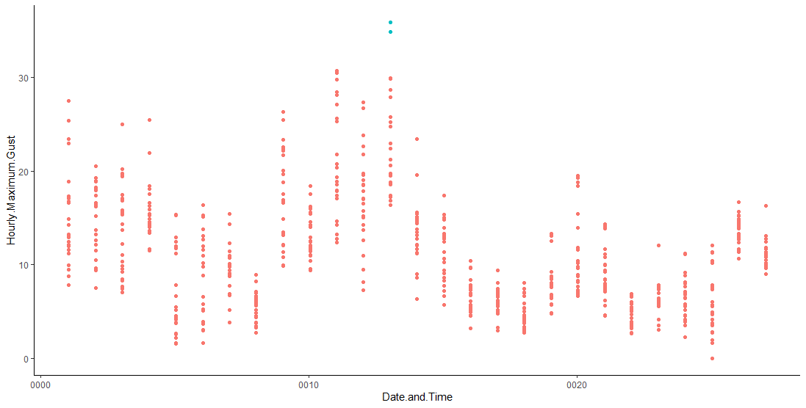
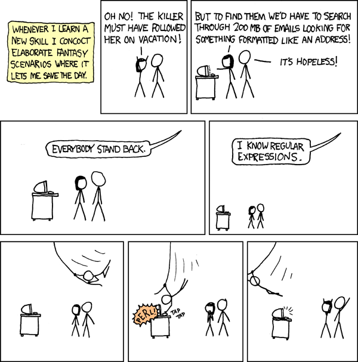
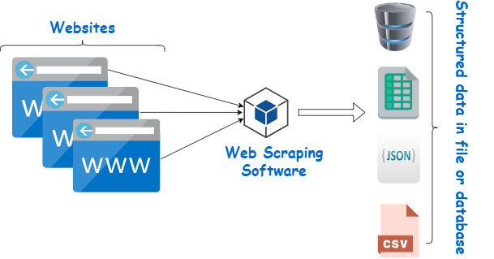
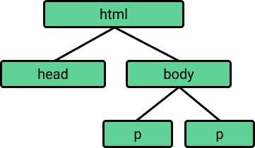
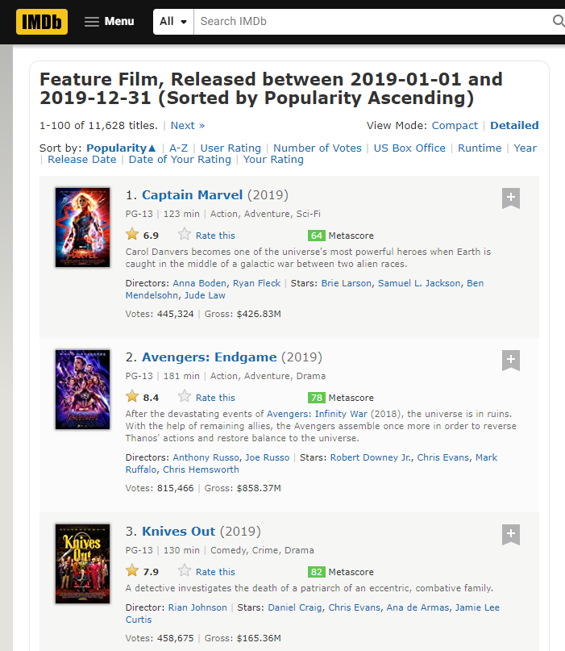
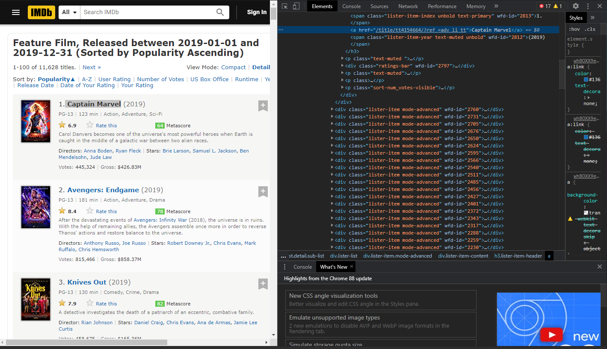

# Lab settings - please ingnore
options(repr.plot.width=7, repr.plot.height=4, repr.plot.res=250 ) # Make plots a resonable size
BIOL3782: Scientific Computing for Biologists (Dalhousie University)
Setup of workspace¶
Make sure all required files are in the working directory:
- Create a folder on the "desktop" and name it Lab6
- Create a sub-folder called data_raw inside your Lab6 folder. Ideally, you would keep your raw and cleaned data separate in case you ever needed your raw data again.
- From Brightspace, download the Weather_Data_2017.csv and mlb2017_pitching.txtfiles into your Desktop/Lab6/data_raw folder:
- In RStudio, change the working directory to Desktop/Lab6. Click here if you need a refresher on the working directory
- In RStudio, create a new R script, name it lab6.r and make sure you save it in Desktop\Lab6. You will be writing and copy-pasting code to your lab6.r file so that you can keep a record of all you did in this lab. Also, if your computer crashes, you can just re-run your file to get back up where you left.
As in previous labs, we'll try simulate "real-life" coding, by using the tags below to indicate when to use RStudio's and when to use the :
Let's load up some packages that we'll need.
library('tidyverse')
Temporal data¶
Time is a surprisingly difficult thing to get right sometimes. The problem is that so many people store time differently. French Canada uses 24-hr notation, while English-speaking Canada tends to use 12-hour notation. Then, in the US there is the habit of using month-day-year, rather than day-month-year. Time zones are a pain. This is just the start of where problems begin, and there is also daylight savings for part of the year in many countries. So, let's start with some notation.
Date coding notation in R¶
There are several functions to manipulate dates, times, or both. It is generally recommended to stick to the simplest level you need, so stick with dates if you just have dates, and times with times. The date-only function is as.Date().
Because there are so many ways to keep track of time, you often need to specify the specific date-time notation associated with your data, so that R can handle and convert dates and times into a standardized format. In as.Date(), the notation is:
| Code | Value |
|---|---|
| %d | Day of the month (decimal number) |
| %m | Month (decimal number) |
| %b | Month (abbreviated) |
| %B | Month (full name) |
| %y | Year (2 digit) |
| %Y | Year (4 digit) |
For each piece of data one might look at, a date object can be created by passing a string into the as.Date() function and specifying what it looks like:
as.Date('15/01/2001', format='%d/%m/%Y', tz='AST')
Note that in format= argument you have to specify the date-time notation that matches your data, including any characters used to separate the elements of your date (e.g. -, /, _, etc.). The specific notation is this case is %d for "day", then a /, then a %m for "month", then another /, and finally %Y for year. Also, in this case, the time zone tz= is AST for Atlantic Standard Time.
date1 = '15/1/2021'
date2 = as.Date('15/1/2021', format='%d/%m/%Y', tz="America/Halifax")
Now lets print the two variables to screen by doing...
date1
date2
As you can see, both return something that looks like a date. Our brain quickly deduces that '15/1/2021' and 2021-01-15 are both dates, and in fact, they are the same date just with different format. However, R does not sees date1 and date2 the same way than your brain does. R sees date1 as simply string of characters, like 'hello world', while R understand that date2 is a date object that contains temporal information. This is evident if we query the class of those variables:
class(date1)
class(date2)
Dates are weird because they are a mixture of units of uneven size - 12 months, with a range of days in them that vary by year are not easy to follow. Let's say you want to know how many days there are between a series of sampling dates. Calculating this by hand would be a nightmare to have to do, unless you cleverly stored your data in a date object, which allows you to do all kinds of "temporal math". We can determine the length of time between two dates by using the diff() function.
First let's create a vector of dates called sample_dates.
sample_dates = as.Date(c('2010-07-22', '2011-04-20', '2012-10-06', '2013-09-16', '2014-11-01', '2015-12-09', '2016-10-23', '2017-01-01', '2018-02-19'))
sample_dates
Next, let's compute the difference between each date.
diff(sample_dates)
Time differences in days [1] 272 535 345 411 403 319 70 414
It's a good idea to specify the time zone where the time was collected as this will anchor time into a universal standard that can get ambiguous quickly (try sampling reefs on a trip across the Pacific and keeping track of what time zone you're in, or even what hemisphere, once you come back and look at the data). Time zones are a common pitfall, as names we use locally may not apply universally (everyone wants Eastern Standard Time it seems).
The full list of time zones is long and can also be printed in R. Below is how to get the first 6 time zones:
OlsonNames() %>%
head()
- 'Africa/Abidjan'
- 'Africa/Accra'
- 'Africa/Addis_Ababa'
- 'Africa/Algiers'
- 'Africa/Asmara'
- 'Africa/Asmera'
How many days passed between each of the assassinations of JFK (November 22, 1963), Malcolm X (February 21, 1965), and Martin Luther King Jr.(April 4, 1968) in the 1960's?
We can also create a column/vector of dates. We'll use the function seq(), which creates a sequence of things.
my_dates = seq(date2, length=20, by='week')
my_dates
We have just created a vector of dates for 20 weeks starting from January 15,2021. Let's check to see if the dates are separated weekly (by 7 days). Let's check the time difference between each pair of elements in my_dates:
diff(my_dates)
Time differences in days [1] 7 7 7 7 7 7 7 7 7 7 7 7 7 7 7 7 7 7 7
In most date systems, dates are really stored as integers, with some specific day in history being day zero. Excel famously uses 1900 but wrongly identifying it as a leap year so as to maintain the Microsoft obsession with backward compatibility. In R, 1 January 1970 is year zero, following the tradition of Unix.
To look at the integer day format for a datetime from the my_dates vector we created, we can use the following functions:
unclass(my_dates)
- 18642
- 18649
- 18656
- 18663
- 18670
- 18677
- 18684
- 18691
- 18698
- 18705
- 18712
- 18719
- 18726
- 18733
- 18740
- 18747
- 18754
- 18761
- 18768
- 18775
How many days would pass between the first and last dates if we ran this string of code seq(date2, length=20, by='day')?
In addition to turning dates into numbers, as.Date() can also turn numbers into words. A few convenience functions:
weekdays: returns the day of each date.
weekdays(sample_dates)
- 'Thursday'
- 'Wednesday'
- 'Saturday'
- 'Monday'
- 'Saturday'
- 'Wednesday'
- 'Sunday'
- 'Sunday'
- 'Monday'
months: returns the month of each date.
months(sample_dates)
- 'July'
- 'April'
- 'October'
- 'September'
- 'November'
- 'December'
- 'October'
- 'January'
- 'February'
quarter: returns the yearly quarter of each date.
quarters(sample_dates)
- 'Q3'
- 'Q2'
- 'Q4'
- 'Q3'
- 'Q4'
- 'Q4'
- 'Q4'
- 'Q1'
- 'Q1'
There is also the julian function which returns the number of days since time 0. 'Julian' here refers to the Julian calendar declared by Julius Caesar in 46 BC, use of which has continued from early adoption by astronomers due to the coincidence of three astronomical cycles on Monday, January 1, 4713 BC (which preceded any dates in recorded history).
julian(sample_dates)
- 14812
- 15084
- 15619
- 15964
- 16375
- 16778
- 17097
- 17167
- 17581
It returns integers similar to the integer date format we talked about earlier.
unclass(sample_dates)
- 14812
- 15084
- 15619
- 15964
- 16375
- 16778
- 17097
- 17167
- 17581
Datetime objects¶
If you also have times in your data (datetime data), you can create a POSIX object. The name POSIX is an acronym for Portable Operating System Interface which is a set of standards for maintaining compatability of computer systems. POSIX notation adds additional arguments to how things are specified:
| Code | Meaning | Code | Meaning |
|---|---|---|---|
| %a | Abbreviated weekday | %A | Full weekday |
| %b | Abbreviated month | %B | Full month |
| %c | Locale-specific date and time | %d | Decimal date |
| %H | Decimal hours (24 hour) | %I | Decimal hours (12 hour) |
| %j | Decimal day of the year | %m | Decimal month |
| %M | Decimal minute | %p | Locale-specific AM/PM |
| %S | Decimal second | %U | Decimal week of the year (starting on Sunday) |
| %w | Decimal Weekday (0=Sunday) | %W | Decimal week of the year (starting on Monday) |
| %x | Locale-specific Date | %X | Locale-specific Time |
| %y | 2-digit year | %Y | 4-digit year |
| %z | Offset from GMT | %Z | Time zone (character) |
Reflecting the various time components and conventions that people use globally.
In R, the POSIX conversions for datetime objects is handled by two functions:
as.POSIXct()creates an atomic object of the number of seconds since time zero (ct = calendar time)as.POSIXlt()creates a list of time attributes (lt = list time)
Let's take a look at the difference between the two by creating two objects using similar dates.
time1 = as.POSIXct("2021-02-26 23:55:26")
time2 = as.POSIXlt("2021-02-26 23:55:23")
Here is the object we created with POSIXct
time1
unclass(time1)
[1] "2021-02-26 23:55:26 AST"
Here is the object we created with POSIXlt
time2
unclass(time2)
[1] "2021-02-26 23:55:23 AST"
- $sec
- 23
- $min
- 55
- $hour
- 23
- $mday
- 26
- $mon
- 1
- $year
- 121
- $wday
- 5
- $yday
- 56
- $isdst
- 0
- $zone
- 'AST'
- $gmtoff
- <NA>
Because lists have more overhead computationally, unless you need the mixed categories, the best course is to stick with using as.POSIXct, where all the conversions are handled behind the scenes. POSIXct objects work a little more intuitively than the as.Date objects.
Let's take a look at the difference between the two time objects we created (time1,time2).
time1 - time2
Time difference of 3 secs
The fact that these work with seconds mean you can add to them coherently, provided you convert to seconds first.
time1 + 24*60*60
[1] "2021-02-27 23:55:26 AST"
Use POSIXct to determine the number of seconds Apollo 11 took between take off (July 16, 1969, 13:32:00) and landing on the moon (July 20, 1969, 20:17:40 )
POSIXct objects will keep track of daylight savings time, which is applied "willy-nilly" among provinces, states, and countries.
as.POSIXct("2013-03-10 08:32:07") - as.POSIXct("2013-03-09 23:55:26")
Time difference of 8.611389 hours
strptime()¶
Finally there is also the strptime() function, which is an internal workhorse function to take a string and convert it into a time data type.
Let's create a dataframe called events.
events = data.frame(
time=c("2014-01-23 14:28:21","2014-01-23 14:28:55","2014-01-23 14:29:02","2014-01-23 14:31:18"),
speed=c(2.0,2.2,3.4,5.5))
events
| time | speed |
|---|---|
| <chr> | <dbl> |
| 2014-01-23 14:28:21 | 2.0 |
| 2014-01-23 14:28:55 | 2.2 |
| 2014-01-23 14:29:02 | 3.4 |
| 2014-01-23 14:31:18 | 5.5 |
Notice that the time variable is a character instead of a date (see the <chr> below the time column title?). We could use mutuate and as.Date to change it into the right format or we could use the strptime function instead.
events$time = strptime(events$time,"%Y-%m-%d %H:%M:%S")
events
| time | speed |
|---|---|
| <dttm> | <dbl> |
| 2014-01-23 14:28:21 | 2.0 |
| 2014-01-23 14:28:55 | 2.2 |
| 2014-01-23 14:29:02 | 3.4 |
| 2014-01-23 14:31:18 | 5.5 |
You can see now it shows <dttm> below the time column title.
The problem with strptime is that it makes some assumptions that might mess things up for you if they go undetected. For example...
early = strptime("2000-01-01 00:00:00","%Y-%m-%d %H:%M:%S")
late1 = strptime("2000-01-01 00:00:20","%Y-%m-%d %H:%M:%S")
early - late1
Time difference of -20 secs
and...
late2 = strptime("2000-01-01 1:00:00","%Y-%m-%d %H:%M:%S")
early - late2
Time difference of -1 hours
... returns the results in different units (first in seconds, then in hours). This might mess you up if you're scripting to extract times like we do below.
as.numeric(early-late1)
as.numeric(early-late2)
Most often, we won't create dates and times by hand. Instead we will import them from a flat file. Here we can download daily wind and rainfall data for London.
For your convenience, we have provided the data from 2017 in the Weather_Data_2017.csv file.
Using the Date.and.Time column timestamp, calculate the average length of time (in hours) between gale force (i.e. >34 knots) maximum gust records.
How many observations from Weather_Data_2017.csv have hourly maximum gusts > 34 knots?
What is the highest recorded hourly maximum gust?
What is the length of time (in hours) between gale force (i.e. >34 kts) maximum gust records?
Using Weather_Data_2017.csv, plot hourly maximum gust through time.
Your plot should look a bit like the one below:

String Manipulation¶
A surprising amount of what people do with computers involves text - searching for and manipulating strings within a programming language. In biology, the area with the major lock on text manipulation is bioinformatics. As the name implies, bioinformatics deals with biological information - especially analysis of DNA, RNA and protein sequences. However, the challenges and scientific opportunities for analyzing the information are incredible. In its simplest form, we can represent DNA/RNA and protein as text -- either nucleic or amino acids. Each base or amino acid is represented as a single letter (e.g. A/C/G/T for DNA). Stored in the sequence of nucleic and amino acids are all the instructions to create life. So strings are important.
Among the simplest but most crucial attributes of strings is determining its length. We'll use the nchar() function for that.
protein = "vlspadktnv"
nchar(protein)
We can also take a slice of the string. To grab a section of a string by its position of each letter, R has a substr() function.
substr(protein,1,3)
We can also split a string using the strsplit() function. We will use the character "a" to separate the strings.
strsplit(protein,'a')
-
- 'vlsp'
- 'dktnv'
Notice here that the 'a' has disappeared. If we want to keep that 'a', we need to take a slice at the 'a' position. We can use the gregexpr() function to find the position of 'a'.
gregexpr('a', protein)
- 5
For reasons known only to the original R programmers, this returns a list object, with a number at the beginning, followed by the position we're looking for. So to use this to get that index number, we need to index the list.
gregexpr('a', protein)[[1]]
Let's explore string manipulation using the mlb2017_pitching.txt dataset. First let's load the data.
mlb_pitching <- na.omit(read.csv("mlb2017_pitching.txt"))
mlb_pitching %>%
head()
| Rk | Name | Age | Tm | Lg | W | L | W.L. | ERA | G | ... | WP | BF | ERA. | FIP | WHIP | H9 | HR9 | BB9 | SO9 | SO.W | |
|---|---|---|---|---|---|---|---|---|---|---|---|---|---|---|---|---|---|---|---|---|---|
| <int> | <chr> | <int> | <chr> | <chr> | <int> | <int> | <dbl> | <dbl> | <int> | ... | <int> | <int> | <int> | <dbl> | <dbl> | <dbl> | <dbl> | <dbl> | <dbl> | <dbl> | |
| 1 | 1 | Fernando Abad*\abadfe01 | 31 | BOS | AL | 2 | 1 | 0.667 | 3.30 | 48 | ... | 0 | 182 | 140 | 3.68 | 1.237 | 8.2 | 0.8 | 2.9 | 7.6 | 2.64 |
| 3 | 3 | Tim Adleman\adlemti01 | 29 | CIN | NL | 5 | 11 | 0.313 | 5.52 | 30 | ... | 1 | 531 | 80 | 5.87 | 1.431 | 9.1 | 2.1 | 3.8 | 7.9 | 2.12 |
| 4 | 4 | Andrew Albers*\alberan01 | 31 | SEA | AL | 5 | 1 | 0.833 | 3.51 | 9 | ... | 1 | 178 | 121 | 4.13 | 1.293 | 9.4 | 1.3 | 2.2 | 8.1 | 3.70 |
| 5 | 5 | Matt Albers\alberma01 | 34 | WSN | NL | 7 | 2 | 0.778 | 1.62 | 63 | ... | 0 | 233 | 269 | 3.40 | 0.852 | 5.2 | 0.9 | 2.5 | 9.3 | 3.71 |
| 6 | 6 | Al Alburquerque\albural01 | 31 | TOT | AL | 0 | 2 | 0.000 | 2.50 | 21 | ... | 0 | 71 | 182 | 2.94 | 1.000 | 5.0 | 0.0 | 4.0 | 7.0 | 1.75 |
| 7 | 7 | Al Alburquerque\albural01 | 31 | KCR | AL | 0 | 1 | 0.000 | 3.60 | 11 | ... | 0 | 42 | 128 | 3.16 | 1.300 | 6.3 | 0.0 | 5.4 | 8.1 | 1.50 |
Next, let's clean it up a little by extracting only the first and last names of each of the players. For that, we need the help of regular expressions.
Regular expressions¶
A Regular expression (or regex) is a sequence of characters that specifies a "search pattern" to be used against a dataset made of characters. Regular expressions are really useful for sifting through and subsetting large textual datasets (like genetic sequences). Using them can impart superhero-like qualities:

The power of regular expression lays on the ability to be able to include "wild cards" as part of the search pattern. The most common are shown below:
| Special characters (or wild card) | What does it do? |
|---|---|
| . | matches any single character |
| * | match preceding character/number 0 or more times |
| + | match preceding character/number at least once |
| ? | match preceding character/number exactly once |
| ** | suppresses special meanings. Use this if you want to search for one of the special characters in your string |
| ^ | matches the beginning of the string |
| $ | matches the end of a string |
| [] | match any characters inside the square brackets |
| [^] | match any characters except those inside the brackets |
| {n} | match preceding character n times |
| {n,m} | match preceding character between n and m times |
| \n | new line |
| \t | tab |
Below are some of the things you can do with regular expressions:
Find values in strings/vectors that match your desired pattern or sequence¶
Let's go back to our example with baseball players. We were about to clean up the "Name" column by extracting only the first and last names of each of the players. We can use the str_extract() function for that. str_extract() extracts matching patterns from a string.
mlb_pitching <- mlb_pitching %>%
mutate(Name_clean = str_extract(Name,"[A-Z][a-z]+ [A-Z][a-z]+"))
mlb_pitching %>%
select(Name,Name_clean) %>%
head()
| Name | Name_clean | |
|---|---|---|
| <chr> | <chr> | |
| 1 | Fernando Abad*\abadfe01 | Fernando Abad |
| 3 | Tim Adleman\adlemti01 | Tim Adleman |
| 4 | Andrew Albers*\alberan01 | Andrew Albers |
| 5 | Matt Albers\alberma01 | Matt Albers |
| 6 | Al Alburquerque\albural01 | Al Alburquerque |
| 7 | Al Alburquerque\albural01 | Al Alburquerque |
We can also find all instances of a pattern. For instance, we can find all the players with the name "Jim". We will use grep() for this. grep() returns the position of each instance of the search string, so we can also use them inside an indexing statement to find other values.
Note that we will be using the ^ character to indicate the beginning of a string (i.e. we do not want last names with the word "jim" in it, like "Jimenez").
grep("^Jim", mlb_pitching$Name)
- 328
- 455
- 711
Notice it returned the row index of the players with the name Jim. To return the actual entry, we will have to combined grep() with some indexing.
mlb_pitching$Name[grep("^Jim", mlb_pitching$Name)]
- 'Jim Johnson\\johnsji04'
- 'Jimmy Nelson\\nelsoji02'
- 'Jimmy Yacabonis\\yacabji01'
Slightly more powerfully than just the "Jims" is to figure out quantities, for example what proportion of players are in their 30's?
length(grep("3.", mlb_pitching$Age))/length(mlb_pitching$Age)
grep finds and matches the strings in the Age column that begin with "3".
How many distinct pitchers are there in mlb_pitching?
What proportion of players are over 40yrs old?
Who are the players over 40yrs old?
Return logical vectors that match your pattern¶
The grepl() function will return TRUE if conditions are satisfied, and FALSE if not. Here you have to use the standard escape character \ to stop the function of * as a special character:
mlb_pitching$Name[grepl("\\*", mlb_pitching$Name)]
- 'Fernando Abad*\\abadfe01'
- 'Andrew Albers*\\alberan01'
- 'Scott Alexander*\\alexasc02'
- 'Jose Alvarado*\\alvarjo03'
- 'Dario Alvarez*\\alvarda01'
- 'Jose Alvarez*\\alvarjo02'
- 'Brett Anderson*\\anderbr04'
- 'Brett Anderson*\\anderbr04'
- 'Brett Anderson*\\anderbr04'
- 'Tyler Anderson*\\anderty01'
- 'Jayson Aquino*\\aquinja01'
- 'Luis Avilan*\\avilalu01'
- 'Anthony Banda*\\bandaan01'
- 'Antonio Bastardo*\\bastaan01'
- 'Buddy Baumann*\\baumabu01'
- 'Jeff Beliveau*\\belivje01'
- 'Chad Bell*\\bellch02'
- 'Ty Blach*\\blachty01'
- 'Richard Bleier*\\bleieri01'
- 'Jerry Blevins*\\blevije01'
- 'Buddy Boshers*\\boshebu01'
- 'Matthew Boyd*\\boydma01'
- 'Steven Brault*\\braulst01'
- 'Craig Breslow*\\breslcr01'
- 'Craig Breslow*\\breslcr01'
- 'Zach Britton*\\brittza01'
- 'Rex Brothers*\\brothre01'
- 'Ryan Buchter*\\buchtry01'
- 'Ryan Buchter*\\buchtry01'
- 'Ryan Buchter*\\buchtry01'
- 'Madison Bumgarner*\\bumgama01'
- 'Aaron Bummer*\\bummeaa01'
- 'Brett Cecil*\\cecilbr01'
- 'Xavier Cedeno*\\cedenxa01'
- 'Andrew Chafin*\\chafian01'
- 'Aroldis Chapman*\\chapmar01'
- 'Wei-Yin Chen*\\chenwe02'
- 'Alex Claudio*\\claudal01'
- 'Adam Conley*\\conlead01'
- 'Patrick Corbin*\\corbipa01'
- 'Danny Coulombe*\\couloda01'
- 'Grant Dayton*\\daytogr01'
- 'Jorge De La Rosa*\\rosajo01'
- 'Matt Dermody*\\dermoma01'
- 'Sean Doolittle*\\doolise01'
- 'Sean Doolittle*\\doolise01'
- 'Sean Doolittle*\\doolise01'
- 'Brian Duensing*\\duensbr01'
- 'Danny Duffy*\\duffyda01'
- 'Zach Duke*\\dukeza01'
- 'Mike Dunn*\\dunnmi01'
- 'Josh Edgin*\\edginjo01'
- 'Brandon Finnegan*\\finnebr01'
- 'Kyle Freeland*\\freelky01'
- 'Sam Freeman*\\freemsa01'
- 'Max Fried*\\friedma01'
- 'Jaime Garcia*\\garcija02'
- 'Jaime Garcia*\\garcija02'
- 'Jaime Garcia*\\garcija02'
- 'Jaime Garcia*\\garcija02'
- 'Jaime Garcia*\\garcija02'
- 'Jarlin Garcia*\\garcija04'
- 'Onelki Garcia*\\garcion01'
- 'Amir Garrett*\\garream01'
- 'Luiz Gohara*\\goharlu01'
- 'Marco Gonzales*\\gonzama02'
- 'Marco Gonzales*\\gonzama02'
- 'Gio Gonzalez*\\gonzagi01'
- 'Matt Grace*\\gracema02'
- 'Josh Hader*\\haderjo01'
- 'Cole Hamels*\\hamelco01'
- 'Brad Hand*\\handbr01'
- 'J.A. Happ*\\happja01'
- 'Blaine Hardy*\\hardybl01'
- 'Donnie Hart*\\hartdo01'
- 'Andrew Heaney*\\heanean01'
- 'Rich Hill*\\hillri01'
- 'Derek Holland*\\hollade01'
- 'David Holmberg*\\holmbda01'
- 'J.P. Howell*\\howeljp01'
- 'Dan Jennings*\\jennida01'
- 'Dan Jennings*\\jennida01'
- 'Brian Johnson*\\johnsbr02'
- 'Clayton Kershaw*\\kershcl01'
- 'Dallas Keuchel*\\keuchda01'
- 'Adam Kolarek*\\kolarad01'
- 'Ian Krol*\\krolia01'
- 'Wade LeBlanc*\\leblawa01'
- 'Jon Lester*\\lestejo01'
- 'Francisco Liriano*\\liriafr01'
- 'Francisco Liriano*\\liriafr01'
- 'Francisco Liriano*\\liriafr01'
- 'Jeff Locke*\\lockeje01'
- 'Boone Logan*\\loganbo02'
- 'Aaron Loup*\\loupaa01'
- 'Tyler Lyons*\\lyonsty01'
- 'Sean Manaea*\\manaese01'
- 'Steven Matz*\\matzst01'
- 'Tim Mayza*\\mayzati01'
- 'T.J. McFarland*\\mcfartj01'
- 'Jake McGee*\\mcgeeja01'
- 'Adalberto Mejia*\\mejiaad01'
- 'Yohander Mendez*\\mendeyo01'
- 'Ryan Merritt*\\merriry01'
- 'Wade Miley*\\mileywa01'
- 'Andrew Miller*\\millean01'
- 'Tommy Milone*\\milonto01'
- 'Tommy Milone*\\milonto01'
- 'Tommy Milone*\\milonto01'
- 'Mike Minor*\\minormi01'
- 'A.J. Minter*\\minteaj01'
- 'Ariel Miranda*\\miranar01'
- 'Jordan Montgomery*\\montgjo01'
- 'Mike Montgomery*\\montgmi01'
- 'Matt Moore*\\moorema02'
- 'Adam Morgan*\\morgaad01'
- 'Sean Newcomb*\\newcose01'
- 'Justin Nicolino*\\nicolju01'
- 'Daniel Norris*\\norrida01'
- 'Vidal Nuno*\\nunovi01'
- 'Chris O\'Grady*\\ogradch01'
- 'Steven Okert*\\okertst01'
- 'Josh Osich*\\osichjo01'
- 'Dillon Overton*\\overtdi01'
- 'Dillon Overton*\\overtdi01'
- 'James Paxton*\\paxtoja01'
- 'James Pazos*\\pazosja01'
- 'Wandy Peralta*\\peralwa01'
- 'Martin Perez*\\perezma02'
- 'Dillon Peters*\\peterdi01'
- 'Drew Pomeranz*\\pomerdr01'
- 'David Price*\\priceda01'
- 'Jose Quintana*\\quintjo01'
- 'Jose Quintana*\\quintjo01'
- 'Jose Quintana*\\quintjo01'
- 'Robbie Ray*\\rayro02'
- 'Cody Reed*\\reedco01'
- 'Clayton Richard*\\richacl01'
- 'Carlos Rodon*\\rodonca01'
- 'Eduardo Rodriguez*\\rodried05'
- 'Joely Rodriguez*\\rodrijo06'
- 'Taylor Rogers*\\rogerta01'
- 'Enny Romero*\\romeren01'
- 'Chris Rusin*\\rusinch01'
- 'Hyun-Jin Ryu*\\ryuhy01'
- 'Marc Rzepczynski*\\rzepcma01'
- 'CC Sabathia*\\sabatc.01'
- 'Chris Sale*\\salech01'
- 'Hector Santiago*\\santihe01'
- 'Robby Scott*\\scottro02'
- 'Ryan Sherriff*\\sherrry01'
- 'Chasen Shreve*\\shrevch01'
- 'Kevin Siegrist*\\siegrke01'
- 'Kevin Siegrist*\\siegrke01'
- 'Tony Sipp*\\sippto01'
- 'Tyler Skaggs*\\skaggty01'
- 'Eric Skoglund*\\skogler01'
- 'Caleb Smith*\\smithca03'
- 'Josh Smoker*\\smokejo01'
- 'Blake Snell*\\snellbl01'
- 'Sammy Solis*\\solissa01'
- 'Matt Strahm*\\strahma01'
- 'Daniel Stumpf*\\stumpda01'
- 'Brent Suter*\\suterbr01'
- 'Jose Torres*\\torrejo02'
- 'Nik Turley*\\turleni01'
- 'Julio Urias*\\uriasju01'
- 'Jason Vargas*\\vargaja01'
- 'Felipe Vazquez*\\riverfe01'
- 'Tony Watson*\\watsoto01'
- 'Tony Watson*\\watsoto01'
- 'Tony Watson*\\watsoto01'
- 'Adam Wilk*\\wilkad01'
- 'Adam Wilk*\\wilkad01'
- 'Adam Wilk*\\wilkad01'
- 'Justin Wilson*\\wilsoju10'
- 'Justin Wilson*\\wilsoju10'
- 'Justin Wilson*\\wilsoju10'
- 'Alex Wood*\\woodal02'
- 'Travis Wood*\\woodtr01'
- 'Travis Wood*\\woodtr01'
- 'Travis Wood*\\woodtr01'
With this, you can then do typical boolean indexing.
Find and replace values that match your pattern¶
If you or your data provider has a spelling problem, you can correct them on the fly with the gsub() find and replace function. For example, we can change the name of all the players called "Tyler" to "Superman".
mlb_pitching$Name <- gsub("Tyler", "Superman", mlb_pitching$Name)
mlb_pitching$Name[grep("^Superman", mlb_pitching$Name)]
- 'Superman Anderson*\\anderty01'
- 'Superman Chatwood\\chatwty01'
- 'Superman Clippard\\clippty01'
- 'Superman Clippard\\clippty01'
- 'Superman Clippard\\clippty01'
- 'Superman Clippard\\clippty01'
- 'Superman Duffey\\duffety01'
- 'Superman Glasnow\\glasnty01'
- 'Superman Lyons*\\lyonsty01'
- 'Superman Mahle\\mahlety01'
- 'Superman Pill\\pillty01'
- 'Superman Skaggs*\\skaggty01'
- 'Superman Wilson\\wilsoty01'
Probably a more useful thing for this data is filtering out parts of the string we don't want. Let's get rid of all the text after the back-slashes.
mlb_pitching$Name <- gsub("\\\\.{1,20}", "", mlb_pitching$Name)
mlb_pitching$Name[1:10]
- 'Fernando Abad*'
- 'Tim Adleman'
- 'Andrew Albers*'
- 'Matt Albers'
- 'Al Alburquerque'
- 'Al Alburquerque'
- 'Al Alburquerque'
- 'Raul Alcantara'
- 'Scott Alexander*'
- 'Cody Allen'
Why are there three "Al Alburquerque" in the MLB pitching data?
Web scraping¶
Among the more functional and powerful things R can do is to pull down information from the web and process it for use. The library to do this is rvest created (again) by Hadley Wickham. This is a deep topic that requires some insight into html, a tag-driven programming language that powers most of the web.
What is Web scraping?¶
Web scraping is a technique for converting the data present in unstructured format (HTML tags) over the web to the structured format which can easily be accessed and used. Almost all the main languages provide ways for performing web scraping.

Ways to scrape data¶
There are several ways of scraping data from the web. Some of the popular ways are:
- Human Copy-Paste: This is a slow and efficient way of scraping data from the web. This involves humans themselves analyzing and copying the data to local storage.
- Text pattern matching: Another simple yet powerful approach to extract information from the web is by using regular expression matching facilities of programming languages (we learned regular expressions in R in a section above).
- API Interface: Many websites like Facebook, Twitter, LinkedIn, etc. provides public and/ or private APIs which can be called using the standard code for retrieving the data in the prescribed format.
- DOM Parsing: By using web browsers, programs can retrieve the dynamic content generated by client-side scripts. It is also possible to parse web pages into a DOM tree, based on which programs can retrieve parts of these pages.
We’ll use the DOM parsing approach during the course of this tutorial and rely on the CSS selectors of the webpage for finding the relevant fields which contain the desired information. But before we begin there are a few prerequisites that one need in order to proficiently scrape data from any website.
Understanding a web page¶
Before we can start learning how to scrape a web page, we need to understand how a web page itself is structured.
From a user perspective, a web page has text, images and links all organized in a way that is aesthetically pleasing and easy to read. But the web page itself is written in specific coding languages that are then interpreted by our web browsers. When we're web scraping, we’ll need to deal with the actual contents of the web page itself: the code before it’s interpreted by the browser.
If you want to see "the code" of this website (i.e. Lab 8), simply click Ctr + u, or Command + u in Mac (this should work in most modern browsers).
The main languages used to build web pages are called Hypertext Markup Language (HTML), Cascading Style Sheets (CSS) and Javascript. HTML gives a web page its actual structure and content. CSS gives a web page its style and look, including details like fonts and colors. Javascript gives a webpage functionality.
In this tutorial, we’ll focus mostly on how to use R web scraping to read the HTML and CSS that make up a web page.
HTML¶
Unlike R, HTML is not a programming language. Instead, it’s called a markup language — it describes the content and structure of a web page. HTML is organized using tags, which are surrounded by <> symbols. Different tags perform different functions. Together, many tags will form and contain the content of a web page.
The text below is a legitimate HTML document. If we were to save that as a .html file and open it using a web browser, we would see a page saying:
Here's a paragraph of text!
Here's a second paragraph of text!<html>
<head>
</head>
<body>
<p>Here's a paragraph of text!</p>
<p>Here's a second paragraph of text!</p>
</body>
</html>
Notice that each of the tags are “paired” in a sense that each one is accompanied by another with a similar name. That is to say, the opening <html> tag is paired with another tag </html> that indicates the beginning and end of the HTML document. The same applies to <body> and <p>.
The <html> </html> tags specify the begging and end of HTML content. The <head> </head> and <body> <body> tags, add more structure to the document specifying beginning and end of headers and main body of the file, respectively. The <p>``</p> tags are what we use in HTML to designate paragraphs.
There are many, many tags in HTML, but we won’t be able to cover all of them in this tutorial. If interested, you can check out this site. The important takeaway is to know that tags have particular names (html, body, p, etc.) to make them identifiable in an HTML document.
Having opening and ending tags (e.g. <p>``</p>) is important, because it allows tags to be nested within each other. The <body> and <head> tags are nested within <html>, and <p> is nested within <body>. This nesting gives HTML a “tree-like” structure:

This tree-like structure will inform how we look for certain tags when we're using R for web scraping, so it’s important to keep it in mind. If a tag has other tags nested within it, we would refer to the containing tag as the parent and each of the tags within it as the “children”. If there is more than one child in a parent, the child tags are collectively referred to as “siblings”. These notions of parent, child and siblings give us an idea of the hierarchy of the tags.
CSS¶
Whereas HTML provides the content and structure of a web page, CSS provides information about how a web page should be styled. Without CSS, a web page is dreadfully plain. Here's a simple HTML document without CSS that demonstrates this.
When we say styling, we are referring to a wide, wide range of things. Styling can refer to the attributes (e.g. color, size, position, font, alignment, etc.) of particular HTML elements. Like HTML, the scope of CSS material is so large that we can’t cover every possible concept in the language. If you’re interested, you can learn more here.
Two concepts we do need to learn before we delve into the R web scraping code are classes and ids.
First, let's talk about classes. If we were making a website, there would often be times when we'd want similar elements of a website to look the same. For example, we might want a number of items in a list to all appear in the same color, red.
We could accomplish that by directly inserting some CSS that contains the color information into each line of text's HTML tag, like so:
<p style=”color:red” >Text 1</p>
<p style=”color:red” >Text 2</p>
<p style=”color:red” >Text 3</p>
The style text indicates that we are trying to apply CSS to the <p> tags. Inside the quotes, we see a key-value pair “color:red”. color refers to the color of the text in the <p> tags, while red describes what the color should be.
If we wanted to change the color of that text, we'd have to change each line one by one.
Instead of repeating this style text in all of these <p> tags, we can replace it with a class selector:
<p class=”red-text” >Text 1</p>
<p class=”red-text” >Text 2</p>
<p class=”red-text” >Text 3</p>
The class selector, we can better indicate that these <p> tags are related in some way. In a separate CSS file, we can create the red-text class and define how it looks by writing:
.red-text {
color : red;
}
Combining these two elements into a single web page will produce the same effect as the first set of red <p> tags, but it allows us to make quick changes more easily.
In this tutorial, of course, we're interested in web scraping, not building a web page. But when we're web scraping, we'll often need to select a specific class of HTML tags, so we need understand the basics of how CSS classes work.
Similarly, we may often want to scrape specific data that's identified using an id. CSS ids are used to give a single element an identifiable name, much like how a class helps define a class of elements.
If an id is attached to a HTML tag, it makes it easier for us to identify this tag when we are performing our actual web scraping with R.
<p id=”special” >This is a special tag.</p>
Don’t worry if you don’t quite understand classes and ids yet, it’ll become more clear when we start manipulating the code.
Web scraping imdb website¶
There are several R libraries designed to take HTML and CSS and be able to traverse them to look for particular tags. The library we’ll use is rvest.
In this tutorial, we’ll use R for scraping the data for the most popular feature films of 2019 from the IMDb website.
We’ll get a number of features for each of the 100 popular feature films released in 2019. Also, we’ll look at the most common problems that one might face while scraping data from the internet because of the lack of consistency in the website code and look at how to solve these problems.
If you do have rvest installed...
install.packages('rvest')
Then, load the library:
library('rvest')
Let's specify a url for the desired website, that loads the first 100 titles of 2019.
Now, as new films are added to the imdb website, the content returned by the url query may vary over time. We purposely chose a year in the past (2019) to avoid this, but changes can still happen (actually changes just happened in the last week). Therefore, I downloaded a copy of the imdb website in my github account, we will use this copy for the web scraping exercises of this lab. However, below you can see as a comment the actual url that you could use if you want to perform the web scraping on the live imdb site.
# url for this lab
url <- 'https://raw.githubusercontent.com/Diego-Ibarra/biol3782/main/week8/imdb_100titles_2019.html'
# url of actual live imdb website
# url <- 'http://www.imdb.com/search/title?count=100&release_date=2019,2019&title_type=feature'
Next, let's read the html code from the website.
webpage <- read_html(url)
Now, we’ll be scraping the following data from this website.
- Rank: The rank of the film from 1 to 100 on the list of 100 most popular feature films released in 2019.
- Title: The title of the feature film.
- Description: The description of the feature film.
- Runtime: The duration of the feature film.
- Genre: The genre of the feature film,
- Rating: The IMDb rating of the feature film.
- Metascore: The metascore on IMDb website for the feature film.
- Votes: Votes cast in favor of the feature film.
- Gross_Earning_in_Mil: The gross earnings of the feature film in millions.
- Director: The main director of the feature film. Note, in case of multiple directors, I’ll take only the first.
- Actor: The main actor in the feature film. Note, in case of multiple actors, I’ll take only the first.
Here’s a screenshot that contains how all these fields are arranged.

Rank¶
Now, we will start by scraping the Rank field. For that, we’ll use the selector gadget to get the specific CSS selectors that encloses the rankings. You can click on the extension in your browser and select the rankings field with the cursor.
To see the html code in Google Chrome, you can go to Options -> More tools -> Developer tools or hit Ctrl + Shift + I (for Windows).
First let's select the ranking. Highlight the "1." beside "Captain Marvel" and hit Ctrl + Shift + I or right click and select "inspect". This should take you to rank css on the source page.
Once you are sure that you have made the right selections, you need to copy the corresponding CSS selector. In our case, it's text-primary.
Once you know the CSS selector that contains the rankings, you can use this simple R code to get all the rankings.
We will use the html_nodes function to extract pieces of data out of HTML documents using CSS selector. You can use the help section to take a look at the code syntax for html_node.
#Using CSS selectors to scrape the rankings section
rank_data_html <- html_nodes(webpage,'.text-primary')
Next, we will use html_text to extract attributes, text and tag name from html.
#Converting the ranking data to text
rank_data <- html_text(rank_data_html)
Now let's see if it pulled out the rankings.
head(rank_data)
- '1.'
- '2.'
- '3.'
- '4.'
- '5.'
- '6.'
Once you have the data, make sure that it looks in the desired format. In our case, we would convert the text to numeric.
rank_data <- as.numeric(rank_data)
Now we can select all the titles. You can visually inspect that all the titles are selected.

title_data_html <- html_nodes(webpage,'.lister-item-header a')
#Converting the title data to text
title_data <- html_text(title_data_html)
Let's have a look at the first 6 titles.
head(title_data)
- 'Avengers: Endgame'
- 'Captain Marvel'
- 'Sound of Metal'
- 'Parasite'
- 'Once Upon a Time... In Hollywood'
- 'Knives Out'
In the following code, we will do the same thing for scraping Description, Runtime, Genre, Rating, Metascore, Votes, Gross_Earning_in_Mil , Director and Actor data.
Notice the web scrapping code is relatively similar across the criteria but CSS tags are different.
Description¶
Let's scrape film Description data from the webpage.
#Using CSS selectors to scrape the description section
description_data_html <- html_nodes(webpage,'.ratings-bar+ .text-muted')
#Converting the description data to text
description_data <- html_text(description_data_html)
description_data %>%
head()
- '\n After the devastating events of Avengers: Infinity War (2018), the universe is in ruins. With the help of remaining allies, the Avengers assemble once more in order to reverse Thanos\' actions and restore balance to the universe.'
- '\n Carol Danvers becomes one of the universe\'s most powerful heroes when Earth is caught in the middle of a galactic war between two alien races.'
- '\n A heavy-metal drummer\'s life is thrown into freefall when he begins to lose his hearing.'
- '\n Greed and class discrimination threaten the newly formed symbiotic relationship between the wealthy Park family and the destitute Kim clan.'
- '\n A faded television actor and his stunt double strive to achieve fame and success in the final years of Hollywood\'s Golden Age in 1969 Los Angeles.'
- '\n A detective investigates the death of a patriarch of an eccentric, combative family.'
Notice that each entry begins with "\n". We will need to remove that using the gsub function.
#Removing '\n'
description_data <- gsub("\n","",description_data)
head(description_data)
- ' After the devastating events of Avengers: Infinity War (2018), the universe is in ruins. With the help of remaining allies, the Avengers assemble once more in order to reverse Thanos\' actions and restore balance to the universe.'
- ' Carol Danvers becomes one of the universe\'s most powerful heroes when Earth is caught in the middle of a galactic war between two alien races.'
- ' A heavy-metal drummer\'s life is thrown into freefall when he begins to lose his hearing.'
- ' Greed and class discrimination threaten the newly formed symbiotic relationship between the wealthy Park family and the destitute Kim clan.'
- ' A faded television actor and his stunt double strive to achieve fame and success in the final years of Hollywood\'s Golden Age in 1969 Los Angeles.'
- ' A detective investigates the death of a patriarch of an eccentric, combative family.'
We will do similar things to the next set of data.
Runtime¶
Let's scrape the website data for Runtime.
#Using CSS selectors to scrape the Movie runtime section
runtime_data_html <- html_nodes(webpage,'.text-muted .runtime')
#Converting the runtime data to text
runtime_data <- html_text(runtime_data_html)
head(runtime_data)
- '181 min'
- '123 min'
- '120 min'
- '132 min'
- '161 min'
- '130 min'
To make it easier to deal with later, let's remove "min" and convert the data to numeric.
#Removing mins and converting it to numerical
runtime_data <- gsub(" min","",runtime_data)
runtime_data <- as.numeric(runtime_data)
head(runtime_data)
- 181
- 123
- 120
- 132
- 161
- 130
#Using CSS selectors to scrape the Movie genre section
genre_data_html <- html_nodes(webpage,'.genre')
#Converting the genre data to text
genre_data <- html_text(genre_data_html)
head(genre_data)
- '\nAction, Adventure, Drama '
- '\nAction, Adventure, Sci-Fi '
- '\nDrama, Music '
- '\nComedy, Drama, Thriller '
- '\nComedy, Drama '
- '\nComedy, Crime, Drama '
Notice we have "\n" and excess spaces. let's remove that to clean up the data.
#Removing \n
genre_data <- gsub("\n","",genre_data)
#Removing excess spaces
genre_data <- gsub(" ","",genre_data)
head(genre_data)
- 'Action,Adventure,Drama'
- 'Action,Adventure,Sci-Fi'
- 'Drama,Music'
- 'Comedy,Drama,Thriller'
- 'Comedy,Drama'
- 'Comedy,Crime,Drama'
Now let's only take the first genre of each movie and convert the data from characters to factors.
#taking only the first genre of each movie
genre_data <- gsub(",.*","",genre_data)
#Convering each genre from text to factor
genre_data <- as.factor(genre_data)
head(genre_data)
- Action
- Action
- Drama
- Comedy
- Comedy
- Comedy
Levels:
- 'Action'
- 'Adventure'
- 'Animation'
- 'Biography'
- 'Comedy'
- 'Crime'
- 'Drama'
- 'Fantasy'
- 'Horror'
- 'Mystery'
#Using CSS selectors to scrape the IMDB rating section
rating_data_html <- html_nodes(webpage,'.ratings-imdb-rating strong')
#Converting the ratings data to text
rating_data <- html_text(rating_data_html)
str(rating_data)
chr [1:100] "8.4" "6.9" "7.8" "8.6" "7.6" "7.9" "7.8" "8.4" "7.1" "8.3" ...
Notice that rating data is saved as characters (Because that's what html_text does!). Let's change it to numeric data.
#Converting ratings to numeric
rating_data <- as.numeric(rating_data)
head(rating_data)
- 8.4
- 6.9
- 7.8
- 8.6
- 7.6
- 7.9
Votes¶
Let's scrape the website data for Votes. We will apply similar processes as above. First we'll read in the data, remove extra characters then convert it to numeric.
#Using CSS selectors to scrape the votes section
votes_data_html <- html_nodes(webpage,'.sort-num_votes-visible span:nth-child(2)')
#Converting the votes data to text
votes_data <- html_text(votes_data_html)
#Removing commas
votes_data <- gsub(",","",votes_data)
#Converting votes to numerical
votes_data <- as.numeric(votes_data)
head(votes_data)
- 825771
- 451581
- 36445
- 569876
- 561190
- 466860
Director¶
Let's scrape the website data for data on Directors. First we'll read in the data then convert it from characters to factors.
#Using CSS selectors to scrape the directors section
directors_data_html <- html_nodes(webpage,'.text-muted+ p a:nth-child(1)')
#Converting the directors data to text
directors_data <- html_text(directors_data_html)
#Converting directors data into factors
directors_data <- as.factor(directors_data)
head(directors_data)
- Anthony Russo
- Anna Boden
- Darius Marder
- Bong Joon Ho
- Quentin Tarantino
- Rian Johnson
Levels:
- 'Adam Randall'
- 'Adam Robitel'
- 'Adam Shankman'
- 'Andrea Di Stefano'
- 'Andy Muschietti'
- 'Ang Lee'
- 'Anna Boden'
- 'Anthony Russo'
- 'Ari Aster'
- 'Benny Safdie'
- 'Bong Joon Ho'
- 'Brad Anderson'
- 'Brian Kirk'
- 'Céline Sciamma'
- 'Chad Stahelski'
- 'Chris Buck'
- 'Clint Eastwood'
- 'Dan Friedkin'
- 'Danny Boyle'
- 'Darius Marder'
- 'David F. Sandberg'
- 'David Leitch'
- 'David Michôd'
- 'Destin Daniel Cretton'
- 'Dexter Fletcher'
- 'Drake Doremus'
- 'Edward Norton'
- 'Elizabeth Banks'
- 'F. Gary Gray'
- 'Farhad Safinia'
- 'Fatih Akin'
- 'Gabriela Cowperthwaite'
- 'Galder Gaztelu-Urrutia'
- 'Greta Gerwig'
- 'Guy Ritchie'
- 'J.C. Chandor'
- 'J.J. Abrams'
- 'Jake Kasdan'
- 'James Gray'
- 'James Mangold'
- 'Jason Lei Howden'
- 'Jay Roach'
- 'Jeff Tremaine'
- 'Jenny Gage'
- 'Jim Jarmusch'
- 'Joe Berlinger'
- 'John Lee Hancock'
- 'Jon Favreau'
- 'Jon Watts'
- 'Jonas Åkerlund'
- 'Jordan Peele'
- 'Josh Cooley'
- 'Justin Baldoni'
- 'Justin Benson'
- 'Justin Kurzel'
- 'Keith Thomas'
- 'Keola Racela'
- 'Kitty Green'
- 'Lorcan Finnegan'
- 'Lorene Scafaria'
- 'Luc Besson'
- 'Lydia Dean Pilcher'
- 'M. Night Shyamalan'
- 'Marielle Heller'
- 'Marjane Satrapi'
- 'Martin Scorsese'
- 'Matt Bettinelli-Olpin'
- 'Melina Matsoukas'
- 'Michael Bay'
- 'Michael Dougherty'
- 'Michael Engler'
- 'Mike Flanagan'
- 'Neil Marshall'
- 'Noah Baumbach'
- 'Olivia Wilde'
- 'Quentin Tarantino'
- 'Rian Johnson'
- 'Ric Roman Waugh'
- 'Richard Stanley'
- 'Robert Eggers'
- 'Robert Rodriguez'
- 'Rod Lurie'
- 'Roland Emmerich'
- 'Rose Glass'
- 'Ruben Fleischer'
- 'Ryan Spindell'
- 'Sam Mendes'
- 'Severin Fiala'
- 'Simon Kinberg'
- 'Simon West'
- 'Taika Waititi'
- 'Tate Taylor'
- 'Tim Miller'
- 'Todd Haynes'
- 'Todd Phillips'
- 'Tom Hooper'
- 'Tyler Nilson'
- 'Vince Gilligan'
- 'Woody Allen'
Actor¶
Let's scrape the website data for names of Actors. First we'll read in the data then convert it from characters to factors.
#Using CSS selectors to scrape the actors section
actors_data_html <- html_nodes(webpage,'.lister-item-content .ghost+ a')
#Converting the gross actors data to text
actors_data <- html_text(actors_data_html)
#Converting actors data into factors
actors_data <- as.factor(actors_data)
head(actors_data)
- Robert Downey Jr.
- Brie Larson
- Riz Ahmed
- Kang-ho Song
- Leonardo DiCaprio
- Daniel Craig
Levels:
- 'Aaron Paul'
- 'Adam Driver'
- 'Adam Sandler'
- 'Anthony Mackie'
- 'Bee Rogers'
- 'Ben Affleck'
- 'Bill Murray'
- 'Brad Pitt'
- 'Brie Larson'
- 'Chadwick Boseman'
- 'Charlize Theron'
- 'Chris Hemsworth'
- 'Constance Wu'
- 'Daisy Ridley'
- 'Daniel Craig'
- 'Daniel Kaluuya'
- 'Daniel Radcliffe'
- 'Dave Davis'
- 'David Harbour'
- 'Dean-Charles Chapman'
- 'Donald Glover'
- 'Douglas Booth'
- 'Dwayne Johnson'
- 'Ed Skrein'
- 'Edward Norton'
- 'Evan Daves'
- 'Ewan McGregor'
- 'Florence Pugh'
- 'George MacKay'
- 'Gerard Butler'
- 'Guy Pearce'
- 'Haley Lu Richardson'
- 'Helen Hunt'
- 'Himesh Patel'
- 'Imogen Poots'
- 'Ivan Massagué'
- 'James Corden'
- 'James McAvoy'
- 'Jason Segel'
- 'Jessica Chastain'
- 'Joaquin Phoenix'
- 'Joel Kinnaman'
- 'Jonas Dassler'
- 'Josephine Langford'
- 'Julia Garner'
- 'Kaitlyn Dever'
- 'Kang-ho Song'
- 'Keanu Reeves'
- 'Kevin Costner'
- 'Kristen Bell'
- 'Kristen Stewart'
- 'Kyle Chandler'
- 'Leonardo DiCaprio'
- 'Lily Collins'
- 'Linda Hamilton'
- 'Lupita Nyong\'o'
- 'Mads Mikkelsen'
- 'Mark Ruffalo'
- 'Matt Damon'
- 'Matthew McConaughey'
- 'Mel Gibson'
- 'Michael B. Jordan'
- 'Morfydd Clark'
- 'Nicolas Cage'
- 'Noémie Merlant'
- 'Octavia Spencer'
- 'Paul Walter Hauser'
- 'Riley Keough'
- 'Riz Ahmed'
- 'Robert De Niro'
- 'Robert Downey Jr.'
- 'Robert Pattinson'
- 'Roman Griffin Davis'
- 'Rosa Salazar'
- 'Rosamund Pike'
- 'Ryan Reynolds'
- 'Sam Worthington'
- 'Samara Weaving'
- 'Saoirse Ronan'
- 'Sarah Megan Thomas'
- 'Sasha Luss'
- 'Scott Eastwood'
- 'Shailene Woodley'
- 'Stephen Campbell Moore'
- 'Taraji P. Henson'
- 'Taron Egerton'
- 'Taylor Russell'
- 'Timothée Chalamet'
- 'Tom Glynn-Carney'
- 'Tom Hanks'
- 'Tom Holland'
- 'Tristan Byon'
- 'Will Smith'
- 'Woody Harrelson'
- 'Zachary Levi'
- 'Zack Gottsagen'
#Using CSS selectors to scrape the metascore section
metascore_data_html <- html_nodes(webpage,'.metascore')
#Converting the runtime data to text
metascore_data <- html_text(metascore_data_html)
#Removing extra space in metascore
metascore_data <- gsub(" ","",metascore_data)
head(metascore_data)
- '78'
- '64'
- '82'
- '96'
- '83'
- '82'
This is great, but because metascore_data is made up of characters, we cannot do math or calculate statistics with this data. See what happens when we try to compute descriptive statistics:
summary(metascore_data)
Length Class Mode
100 character character
As you can see, the summary() function cannot return min, max, median, mean, etc. because this metrics cannot be computed on characters (i.e. "letters").
We should convert the characters to numeric!
#converting metascore to numerical
metascore_data <- as.numeric(metascore_data)
head(metascore_data)
- 78
- 64
- 82
- 96
- 83
- 82
Let's take a look at the summary of metascore_data again...
summary(metascore_data)
Min. 1st Qu. Median Mean 3rd Qu. Max. 19.00 51.75 61.00 61.44 73.00 96.00
Great! We computed descriptive statistics!
Gross¶
Here there is the problem that not all entries have reported grossed earning. We want those missing values to be filled with `NaN`. We will the `html_node()` function (See `?html_nodes` for the difference between `html_node` and `html_nodes`) to fill with `NaN`. Note that instead of using `webpage` as input, we will use the output of `html_nodes(webpage, '.lister-item-content')` as input:
#Using CSS selectors to scrape the gross revenue section
gross_data_html <- html_node(html_nodes(webpage, '.lister-item-content'), '.sort-num_votes-visible span:nth-child(5)')
#Converting the gross revenue data to text
gross_data <- html_text(gross_data_html)
length(gross_data)
head(gross_data)
- '$858.37M'
- '$426.83M'
- NA
- '$53.37M'
- '$142.50M'
- '$165.36M'
Note that we got 100 elements, with NaN where there are missing grossed earnings.
Let's clean up the data by eliminating $ and M, and converting to numeric values.
#Removing '$' and 'M' signs
gross_data <- gsub("M","",gross_data)
gross_data <- substring(gross_data,2,6)
#converting gross_data to numerical
gross_data <- as.numeric(gross_data)
gross_data %>%
head()
- 858.3
- 426.8
- <NA>
- 53.37
- 142.5
- 165.3
Now let's check the statistics summary:
summary(metascore_data)
Min. 1st Qu. Median Mean 3rd Qu. Max. 19.00 51.75 61.00 61.44 73.00 96.00
Now that we have successfully scraped all the 11 features for the 100 most popular feature films released in 2019. Let’s combine them to create a data frame and inspect its structure.
#Combining all the lists to form a data frame
movies_df <- data.frame(Rank = rank_data, Title = title_data,
Description = description_data, Runtime = runtime_data,
Genre = genre_data, Rating = rating_data,
Metascore = metascore_data,
Votes = votes_data,
Gross_Earning_in_Mil = gross_data,
Director = directors_data, Actor = actors_data)
str(movies_df)
'data.frame': 100 obs. of 11 variables: $ Rank : num 1 2 3 4 5 6 7 8 9 10 ... $ Title : chr "Avengers: Endgame" "Captain Marvel" "Sound of Metal" "Parasite" ... $ Description : chr " After the devastating events of Avengers: Infinity War (2018), the universe is in ruins. With the help of r"| __truncated__ " Carol Danvers becomes one of the universe's most powerful heroes when Earth is caught in the middle of a ga"| __truncated__ " A heavy-metal drummer's life is thrown into freefall when he begins to lose his hearing." " Greed and class discrimination threaten the newly formed symbiotic relationship between the wealthy Park fa"| __truncated__ ... $ Runtime : num 181 123 120 132 161 130 113 122 148 119 ... $ Genre : Factor w/ 10 levels "Action","Adventure",..: 1 1 7 5 5 5 1 6 7 7 ... $ Rating : num 8.4 6.9 7.8 8.6 7.6 7.9 7.8 8.4 7.1 8.3 ... $ Metascore : num 78 64 82 96 83 82 51 59 72 78 ... $ Votes : num 825771 451581 36445 569876 561190 ... $ Gross_Earning_in_Mil: num 858.3 426.8 NA 53.4 142.5 ... $ Director : Factor w/ 99 levels "Adam Randall",..: 8 7 20 11 76 77 35 95 9 87 ... $ Actor : Factor w/ 96 levels "Aaron Paul","Adam Driver",..: 71 9 69 47 53 15 60 41 28 20 ...
Analyzing scraped data from the web¶
Once you have the data, you can perform several tasks like analyzing the data, drawing inferences from it, training machine learning models over this data, etc. I have gone on to create some interesting visualization out of the data we have just scraped.
Let's take a look at the distribution of movies by runtime and genre.
qplot(data = movies_df, Runtime, fill = Genre,bins = 30)+
theme_classic()
![No description has been provided for this image](data:image/png;base64,iVBORw0KGgoAAAANSUhEUgAABtYAAAPoCAMAAAB9EDofAAAAe1BMVEUAAAAAsPYAv30Av8Qz
MzM5tgBNTU1oaGh8fHyDg4OMjIyVkP+VlZWampqjo6OjpQCnp6evr6+ysrK5ubm9vb3BwcHH
x8fJycnQ0NDR0dHYkADY2NjZ2dne3t7h4eHk5OTna/Pp6enq6urv7+/w8PD19fX4dm3/Yrz/
//+vKH8oAAAACXBIWXMAACZyAAAmcgEhK5fuAAAgAElEQVR4nO3dDXuizv6YcdqejsauqTHG
uP81pm5My/t/hQWGZ8eI8wBfZu/PdZ2zCqiAgfuHoiYpAADRSKaeAQAA/CFrAICIkDUAQETI
GgAgImQNABARsgYAiAhZAwBEhKwBACJC1gAAESFrAICIkDUAQETIGgAgImQNABARsgYAiAhZ
AwBExFfW/irVuvL6S6mn14+rqVSLpwcGAKDhK2vPrU69VOV66U30l6wBAILylLXnVqdemnQ9
d6f6TdYAAEH5ydpzq1Mf2cW3rzT9es0u/OlM9qbU9QuTrXlJeKcPAODER0g+n9qHX691zF77
h2tZ/b5+mheyBgBw4yEkL0o9fTRZe6ovffdfarzz0iNZAwA48hASpV6+zMXqDfy6PomkOy9k
DQDgxkNIfuXvl93I2q/21eyQ7u37/ZdSz7+/jfNC1gAAbnyFxJS1LGPv7eu/s6Dpt+HUU/vU
kf9UyBoAwE3IrP1ST52jspf2+f2trpE1AIAnAbP21j+/PztSe/nML3zmZ5k0xSNrAABPwmUt
q9rbzclfeq9P6nkhawAAN8Gy9mPV0s+rbyBJyRoAwFmorP1cNfN7cWQNAOAoUNZe71SNrAEA
QgiSta9f/bNFDNM/Xc8LWQMAuAmRta8n9fRpmOZJqer0xw+lXq/nhawBANwEyFpeNeM3Gr82
pz8+m77Ln6wBABwFyNqvG1UrfkX0PR/1+Ww6EZKsAQBc+c/an/Z3iajOyLdm+JPhWyHJGgDA
kf+sPd/OWvpe/2y26XiOrAEAHPnPmvoha+nXW1a9p1fzb2STNQCAI0khIWsAAEeSQkLWAACO
JIWErAEAHEkKCVkDADiSFBKyBgBwJCkkZA0A4EhSSMgaAMCRpJCQNQCAI0khIWsAAEeSQkLW
AACOJIWErAEAHEkKCVkDADiSFBKyBgBwJCkkZA0A4EhSSMgaAMCRpJCQNQCAI0khIWsAAEeS
QkLWAACOJIWErAEAHEkKCVkDADiSFJJIs/Z/h5l6NgEgCpJCQtYAAI4khYSsAQAcSQoJWQMA
OJIUErIGAHAkKSRkDQDgSFJIyBoAwJGkkJA1AIAjSSEhawAAR5JCQtYAAI4khYSsAQAcSQoJ
WQMAOJIUErIGAHAkKSRkDQDgSFJIyBoAwJGkkJA1AIAjSSEhawAAR5JCQtYAAI4khYSsAQAc
SQoJWQMAOJIUErIGAHAkKSRkDQDgSFJIyBoAwJGkkJA1AIAjSSEhawAAR5JCQtYAAI4khYSs
AQAcSQoJWQMAOJIUErIGAHAkKSRkDQDgSFJIyBoAwJGkkJA1AIAjSSEhawAAR5JCQtYAAI4k
hYSsAQAcSQoJWQMAOJIUErIGAHAkKSRkDQDgSFJIyBoAwJGkkJA1AIAjSSEhawAAR5JCQtYA
AI4khYSsAQAcSQoJWQMAOJIUErIGAHAkKSRkDQDgSFJIyBoAwJGkkJA1AIAjSSEhawAAR5JC
QtYAAI4khYSsAQAcSQoJWQMAOJIUErIGAHAkKSRkDQDgSFJIyBoAwJGkkJA1AIAjSSEhawAA
R5JCQtYAAI4khYSsAQAcSQoJWQMAOJIUErIGAHAkKSRkDQDgSFJIyBoAwJGkkJA1AIAjSSEh
awAAR5JCQtYAAI4khYSsMW8A4EhSSMga8wYAjiSFhKwxbwDgSFJIyBrzBgCOJIWErDFvAOBI
UkjIGvMGAI4khYSsMW8A4EhSSMga8wYAjiSFhKwxbwBcXfbrZbY3TZbr/WXqeZmEpJCQNeYN
gJvjKmlZnaaenwlICglZY94AOOlELbedeo7GJykkZI15A+DgrPKSbQ7FMdppXzRuM/VMjU5S
SMga8wbAwaJ3eHbK32Q7TjY7E5EUErLGvAGwt04S1XszLevaYpqZmY6kkJA15g2AtVO2D+2f
InJR/97hmqSQkDXmDYC1lekEkW2S7Osrxbtty2193n+x0z2ss/Qtd2l74HmdT3fjVtJJCglZ
Y94A2LokiTIMPdQXD6o8O1JVw/KdbnXupDq3BhZTrm/cSjpJISFrzBsAW/s7Zz0erk/7zz/Z
Vg+rmlgPPNy4lXSSQkLWmDcAttZliG7I33lb5hMUH9jW77cVsdpkh2nnfFj5YmXxDSWnLGi3
biWdpJCQNeYNgK1Fkpx/Hl0dzO2r0yPrY7LijblVWg1Ul59uJZ2kkJA15g2ArZ/3oMc6W2lx
YHcsb7Jpxif1/Wx+vJV0kkJC1pg3ALa6e9D2F2jl17ftJh3LcrVfV2xnrR5ovJV0kkJC1pg3
ALZ+ztqqN3ZVTnS5unl7oPFW0kkKCVlj3gDYUq0cXWct6SsHtm/Qu3DrVtJJmsmZrLJHSU6H
5HkD8JCV+a0vsjalmayyR0lOh+R5A/CQnfmDZWRtSjNZZY+SnA7J8wbgIWfjt4ykhoL1x3Uv
GwfOiaRZnuUKvE9yOiTPG4DHLJNkdz203LEur78GeUDWjLeSTlJIyBrzBsBa/tGz6w9klzvW
jeklyrtZM95KOkkhIWvMGwB7ht9by99xK3ash/ZLlKfmBP96mDFrxltJJykkZI15A+Ag/zHs
TfsHZA6L+jyP7NKyHHpW5Xdm3c2a8VbSSQoJWWPeALjIu5Ys98Uh26n4IbUkWegDuPwlSrXP
mnfeqapV97NmupV0kkJC1pg3AE62/TPyVX0WyaY9VL8Hdz9rpltJJykkZI15A+Dm0u5Qsmif
GrmvfhA0WZZ9GpA1w62kkxQSssa8AXB22KzyFC1Wu36H9vmPpi3W9TtkQ7J2fSvpJIWErDFv
AOBIUkjIGvMGAI4khYSsMW8A4EhSSMga8wYAjiSFhKwxbwDgSFJIyBrzBgCOJIWErDFvAOBI
UkjIGvMGAI4khYSsMW8A4EhSSMga8wYAjiSFhKwxbwDgSFJIyBrzBgCOJIWErDFvAOBIUkjI
GvMGAI4khYSsMW8A4EhSSMga8wYAjiSFhKwxbwDgSFJIyBrzBgCOJIWErDFvAOBIUkjIGvMG
AI4khYSsMW8A4MhXSP4q1Vz5fn9WSr38+b6a7PaYlKwxbwDgzFdInltZ+3hS2tNHb6rbY4p5
IWvMGwC48RSS/BisuvylGl+dqW6P0fNC1pg3AHDjJyR51eqsvWQHY7+/0+/f2aHZW2ey22P0
vJA15g0A3PgIyad+abG89l0fiv1V7TfcfhpTzgtZY94AwI2HkOTHYB9Np/40R2KvSrXfQ7s9
ppwXssa8AbA1cHuOfvv2EBKlXr7SJmtvTbE+uq813h5TzgtZY94A2CJrmoeQ/Mpb1WQtO3j7
W178mxWvNeHtMeW8kDXmDYAtsqb5CkmTtafW22ZKPbWmuT2mnBeyxrwBsEXWNP9ZU514KeM0
3cv/qZA15g2ALbKmkbXgJP9pWW4GbiZZUiB+bJEaWQtO8p+W5WbgZpIlBeLHFqlJyFo9L2RN
6Lz5NcmSAvFji9Q4ZSQ4yX9alpuBm0mWFIgfW6TmP2uc4N8j+U/LcjNwM8mSAvFji9T8Z42P
Y/dI/tOy3AzcTLKkQPzYIjX/WWsVK+vYn9Y0t8eU80LWhM6bX5MsKRA/tkjNf9aaLzTOf4em
/Xuht8eU80LWhM6bX5MsKRA/tkjNf9byrzGuf36m+wba7TF6Xsia0Hnza5IlBeLHFqkFyNrf
qx8LrUZej+nOC1kTOm9+TbKkQPzYIrUAWcvfQ9OePnojr8Z054WsCZ03vyZZUiB+bJFaiKyl
3+/5z2U/v39fjeyP6c4LWRM6b35NsqRA/NgiNUkhIWtS582vSZYUiB9bpCYpJGRN6rz5NcmS
AvELsUVus/3y9qcJDvofSbtvOXMia714JHlnb7kZuJlkSYH4hdgiVbZfvv4C39ppVe61Je2+
5cyJrPXikeSdveVm4GaSJQXiF2CLPCS5w83x9V5b0u5bzpzIWi8eSd7ZW24GbiZZUiB+AbbI
dZJsk2R9c7zIvbakWRK5gtxJ3tlbbgZuJllSIH7+t8hLkizSRZJcbk0gcq8taZZEriB3knf2
lpuBm0mWFIif/y1ylyS7dJ//3w0i99qSZknkCnIneWdvuRm4mWRJgfj53yKLA7XikK2xX2W7
6tU+v5iU0vbue79MkmXVwXzwZZPdzfL2+3PeSQoJWZM6b35NsqRA/LxvkUf9tlrWsWM16KDK
lC3OxqxV49W5uJqfb1IOWQZc8i5JISFrUufNr0mWFIif9y1yrXt2aE4aOSQ1ZcpaM153LWkZ
7XhNUkjImtR582uSJQXi53uLvFQfWVP1SSPZpUWep/wQLH+hsXeC/yUbvMxKeFyWL1zmOVud
9PSrgIveISkkZE3qvPk1yZIC8fO9Re6qLxjZVieN7Ou32U76Ui9rzfiFPjpLqpodRty/SwoJ
WZM6b35NsqRA/HxvkfWZ/fVJI6v+S4m9rDXjD7pnSf22HFmLieSdveVm4GaSJQXi53mLPLXf
GEtO+SDV/whbL2vN+PIFzGavTtZiInlnb7kZuJlkSYH4ed4iN52sbfJBVzvpXtZa4/sDyFpM
JO/sLTcDN5MsKRA/z1tk0lUOupqmfYGs9ZE1qfPm1yRLCsTP7xa5b/8iTXbkln8AmxchH0XW
pM6bX5MsKRA/v1tk56sgz/qkkeaUkIvxTMi14ZSRtD3BKCSFhKxJnTe/JllSIH5et8hT93tB
lsVJI80J/Ft9LNfL2qF9gv8+JWtkTey8+TXJkgLx87pFbrrn8h/0SSPlx63P2ViVH8vVJ/CX
u+9F83Fs1RqckrW4SN7ZW24GbiZZUiB+XrfI/o9iq2L/fKq+ErKMXnG19WrkuTeerJE1ofPm
1yRLCsTP5xa5L0/pr5UnjZyX5Vc+6oO0bXWSZLX7Pi/K8fpQj6yRNaHz5tckSwrEz+cWmdXr
3Blwrt5rO24WzQ/PpLuFHt7svosfptmXV8gaWRM6b35NsqRA/NgiNUkhIWtS582vSZYUiB9b
pCYpJGRN6rz5NcmSAvFji9QkhYSsSZ03vyZZUiB+bJGapJCQNanz5tckSwrEjy1SkxQSsiZ1
3vyaZEmB+LFFapJCQtakzptfkywpED+2SE1SSMia1Hnza5IlBeLHFqlJCglZkzpvfk2ypED8
2CI1SSEha1Lnza9JlhSIH1ukJikkZE3qvPk1yZIC8WOL1CSFhKxJnTe/JllSIH5skZqkkJA1
qfPm1yRLCsSPLVKTFBKyJnXe/JpkSYH4sUVqkkJC1qTOm1+TLCkQP7ZITVJIyJrUefNrkiUF
8K+QFBKyJnXe/JpkSQH8KySFhKxJnTe/JllSAP8KSSEha1Lnza9JlhTAv0JSSMia1Hnza5Il
BfCvkBQSsiZ13vyaZEmB+P2Xnaln2ztJISFrUufNr0mWFIgfWdMkhYSsSZ03vyZZUiB+ZE2T
FBKyJnXe/JpkSYH4kTVNUkjImtR582uSJQXiR9Y0SSEha1Lnza9JlhSIH1nTJIWErEmdN78m
WVIgfmRNkxQSsiZ13vyaZEmB+JE1TVJIyJrUefNrkiUF4kfWNEkhIWtS582vSZYUiB9Z0ySF
hKxJnTe/JllSIH5kTZMUErI2+oNOwu+SAiiRNU1SSMja6A86Cb9LCqBE1jRJISFroz/oJPwu
KYASWdMkhYSsjf6gk/C7pABKZE2TFBKyNvqDTsLvkgIokTVNUkjI2ugPOgm/SwqgRNY0SSEh
a6M/6CT8LimAElnTJIWErI3+oJPwu6QASiGyts32y1vTCOv99cHuZg+QFBKyNvqDTsLvkgIo
hciayvbLyjTCcn99WoXfzUsKCVkb/UEn4XdJAZQCZO2Q5EwHWJb76zF285JCQtZGf9BJ+F1S
AKUAWVsnyTZJ1oYxZG0Qsjb6g07C75ICKPnP2iVJFukiSS7Xo8jaIGRt9AedhN8lBVDyn7Vd
kuzSff5/V8jaIGRt9AedhN8lBVDyn7XiQK04ZKudNipRm3J/vUySczn8nCRLPcE6u1R1MJ/q
ssnuZnkorxbS9v6+vJT/syvuun8nj5IUErI2+oNOwu+SAih5z9pRv622SpJjNWiru7TU++tD
c/b/tjyzZK0nUDp3+fkmqrrJ3aydkvJ9vO6dPEpSSMja6A86Cb9LCqDkPWtr3bNDc9LIvgrT
Su+vVX0gt9CfA1hWE+gkJS2Hu1lblWdd9u7kUZJCQtZGf9BJ+F1SACXfWbtUH1lT9Ukj2aVl
VrrjoozTpjqQyw7s8pcPV3r8aVm+cFkU8JSVMbvhqhyg78mUtWRfDOjfyaMkhYSsjf6gk/C7
pABKvrO2q15i3FYnjezr0Ci9vz7rmhV9y+p1qscv9XFXUtas+ABcmt7Jmn60qzt5lKSQkLXR
H3QSfpcUQMl31uoz++uTRlZ1Z6pMLesDunyK+uCtelsuqQcMydqpuH51J4+SFBKyNvqDTsLv
kgIoec7aqf3GmE5O82rkpdxfH3TojvoFxEWzE9clNJ7vmKY/jrm6k0dJCglZG/1BJ+F3SQGU
PGdt08la8Vpj0i6OvqiKA6p18/5YI7XL2tWdPEpSSMja6A86Cb9LCqDkOWvJdV8MWduU+dpc
3yQla2Rt/AedhN8lBVDym7V9+xdpNvpFxuZFyHp/fc5fhTw0L1J278Qma1d38ihJISFroz/o
JPwuKYCS36x1vgryrN/luj5lJD9pZJmum1NKjp07GZC1Y3/M1Z08SlJIyNroDzoJv0sKoOQ1
a6fqy7C0ZXE8tq9/fG1R76+zwJ1bHwBY1kPLMyHLOzBk7VDdc3fM1Z08SlJIyNroDzoJv0sK
oOQ1a5vuZ8YO+t0zlR21ZYOPy9bbXir/dpDywG6hP0l92SX6kMuUNX0olt1Gde6pmbR/J4+S
FBKyNvqDTsLvkgIoec1a/0ex9Ttex/rEyGZ/nV+sDqrOqj7Xo3fqZHmpGJ+/YnmopttdZa1/
J4+SFBKyNvqDTsLvkgIo+czavp+U8qSRskbLdoXaB1XnRRkkfbrJVda29emNmypc12dZ9u7k
UZJCQtZGf9BJ+F1SACWfWWv95IxW/fBM/jMz9Q/TVNO2PzS9X2WHYxv9hSHXWUt3i+qts8NK
/17NddZ6d/IoSSEha6M/6CT8LimAks+szZmkkJC10R90En6XFECJrGmSQkLWRn/QSfhdUgAl
sqZJCglZG/1BJ+F3SQGUyJomKSRkbfQHnYTfJQVQImuapJCQtdEfdBJ+lxRAiaxpkkJC1kZ/
0En4XVIAJbKmSQoJWRv9QSfhd0kBlMiaJikkZG30B52E3yUFUCJrmqSQkLXRH3QSfpcUQIms
aZJCQtZGf9BJ+F1SACWypkkKCVkb/UEn4XdJAZTImiYpJGRt9AedhN8lBVAia5qkkJC10R90
En6XFECJrGmSQkLWRn/QSfhdUgAlsqZJCglZG/1BJ+F3SQGgQ1JIyNroDzoJv0sKAB2SQkLW
Rn/QSfhdUgDokBQSsjb6g07C75ICQIekkJC10R90En6XFAA6JIWErI3+oJPwu6QASv/bztSz
7Z2kkJC10R90En6XFECJrGmSQkLWRn/QSfhdUgAlsqZJCglZG/1BJ+F3SQGUyJomKSRkbfQH
nYTfJQVQImuapJCQtdEfdBJ+lxRAiaxpkkJC1kZ/0En4XVIAJbKmSQoJWRv9QSfhd0kBlMia
JikkZG30B52E3yUFUCJrmqSQkLXRH3QSfpcUQImsaZJCQtZGf9BJ+F1SACWypkkKCVkb/UEn
4XdJAZTImiYpJGRt9AedhN8lBVAia5qkkJC10R90En6XFECJrGmSQkLWRn/QSfhdUgAlsqZJ
CglZG/1BJ+F3SQGUyJomKSRkbfQHnYTfJQVQImuapJCQtQH+5zBBuzSOoE8KECGypkkKCVkb
gKwBMAuRtW22X97+MN5mt32wv+kgkkJC1gYgawDMQmRNZftl9cP4x3fbp1Vie9OBJIWErA1A
1gCYBcjaIckdbk/w+G67vgVZmy+/e3GyBsAsQNbWSbJNkrXPuQy/o5cUErI2AFkDYOY/a5ck
WaSLJLl4nEuyFgG/e3GyBsDMf9Z2SbJL9/n/+UPWIuB3L07WAJj5z1pxoFYcspXyvfRlkw1e
dk9nLP45LKvhu3yKuoX7lUoStT6UExbS9h5/v2xNfvUQD5MUErI2AFkDYOY9a0f9ttoqSY7l
kPz8EaXDtKwGVP9s9PBtmi7bU5xVlbJVasxadYfqbH6Ih0kKCVkbgKwBMPOetbXu2aE5aSRp
qY6+yn+21fDLsrqUH4BdVHOLnSlrh3q07trVQzxMUkjI2gBkDYCZ76xdqo+sqfqkkeKg66SP
sFblgGr4MkvgKX+5MVlll45KH21ltVvkbTwuy6Ov3gn+efbyW+bjF8aHeJikkJC1AcgaADPf
WdtVXzCyrU8aSarUHNpvqhX/LIvhx3qKox61SJJTcf3SvUV1YV+/c7fQR2dXD/EwSSEhawOQ
NQBmvrNWn9nfnDSS1G+zXWXtcGOKmjlrq/qWh/rdtxt3MJSkkJC1AcgaADPPWTu13+UqD7ma
vfRV1i6peYrCcbtKzFlrXuAsX/M038EjJIWErA1A1gCYec7appO1TTHsh6x1h7cuHdb1WSOd
CTonjpgGkDWx/O7FyRoAM89ZS7qqYc3Y639Ml/I6qtXueONFSLI2R3734mQNgJnfrO3bv0iT
tWmf//t41nZJsroYbsGLkHPmdy9O1gCY+c1a56sgz83Z9+WQoVlbVNeP5qytDaeMXN3VYySF
hKwNQNYAmHnN2qn7JR9LfdLI41mrry/NWTu0T/Df37irx0gKCVkbgKwBMPOatU33Oz4O+qSR
x7OmdA+Py9YpI8f2lIvm49jq1l09RlJIyNoAZA2Amdes9X8UW5nP57ibtc75lCd9R/oArZyy
+c7IztdxpWRNML97cbIGwMxn1vbVKf0VfdKIxZmQy6pZ5YuM2+q8ymrK80JPoA7mO3iYpJCQ
tQHIGgAzn1nLYnTuDDgX77VZZC3dZtlabC75OSPL/HrxqzWdKYsfptnfvINH+Q+J6ro5zjAv
ZO0+sgbAzGfW5mzUrP0la857cbIGwIysaaGz9twe9ZusOe/FyRoAM7KmBQ3Jb/XUuf6m1MdP
80LW7iNrAMzImhYyJB9KfXUGPPcH9OaFrN1H1gCYkTUtYEj+KvWnO8T40mNrXsjafWQNgBlZ
0wKG5Em9dAd8qf6Q3ryQtfvIGgAzsqaFC8mLevruDvlQ6u37/ZdSz7+/TbcgawOQNQBmZE0L
FpI/Sv3uDfqdBe1Jnwb5ZDp1hKwNQNYAmJE1LVhIntSv/qCX9vn9ra79p0LW7iNrAMzImhYq
JO+Gc/mzI7WXz/zCZxa41iuUZO2BvThZA2BG1rRAIflW1wdrbVnX3usrZO2BvThZA2BG1rRA
Ibnzwev0s/f9I3peyNp9ZA2AGVnTAoXkqff9IldMH2EjawOQNQBmZE0LE5L8VP6fpyBrlntx
sgbAjKxpYULyqtTnz1Mow+EcWRuArAHAT8KExBSt4kzI6vTH7HDu9XpeyNp9ZA0AfhIkJJ+m
aBXHcNXpj8+mU0rI2gBkDQB+EiQk79ffMJLLf0X0Pf8K/89n04mQZG0IsgYAPwkSkhel/rav
V+eHvDVfMtL/vshiXsjafWQNAH4SJCRPvd9Vq097fK9/NNv0u2tkbQCyBsBs4N6hb+rZ9i5I
SPpn7zfXv96esyO1V/NHtcnaAGQNgBlZ0ySFhKwNQNYAmJE1TVJIyNoAZA2AGVnTJIWErA1A
1gCYkTVNUkjI2gBkDYAZWdMkhYSsDUDWAJiRNU1SSMjaAGQNgBlZ0ySFhKwNQNYAmJE1TVJI
yNoAZA2AGVnTJIWErA1A1gCYkTVNUkjI2gBkDYAZWdMkhYSsDUDWAJiRNU1SSMjaAGQNgBlZ
0ySFhKwNQNYAmJE1TVJIyNoAZA2AGVnTJIWErA1A1gCYkTVNUkjI2gBkDYAZWdMkhYSsDUDW
AJh5zlpSW6wPzTDfc+3/LiWFhKwNQNYAmAXLWl62czXM91yTtRnyuxcnawDMQmYtUdUw33NN
1mbI716crAEw85+18tJpl13eBJprsjZDfvfiZA2AWbCspek+SRaB5pqszdB/DTPw3vxm7X8P
EzRfjoI+d8CcBMxawN0zWZshshZU0OcOmJOwWVt0h+2XSbLc1eNPa5Wo9amaIP9nl6jihcv9
SiXZuEPrXrd64mbAbpEkq2KK7G7P5X2eLQ8RJYWErA1A1nqCPnfAnATM2j5Jdu1hB1WeSFIm
aFueWLJtsnbK/rfO2qSqk05W9b0uy4n7A/IKHpp38bI729usB0khIWsDkLWeoM8dMCfBsnbe
ZUdm7WGH5gTJc/d6k7VV9r9DelHNiCqM2/6AVTXgUFxX5cNmN73YrAdJISFrA5C1nqDPHTAn
/rPW2NTDsv/PW7U8pulxWb5MWF1ftLKmj7SyhC2yMcWky2qMOugBRbWKA7mjPgDMD+g2um7Z
FMXRngVJISFrA5C1nqDPHTAnIbO2OlXD0vZ5kYuiQc111WRtW02gb3lpxpSvXC50+eqXJw/6
OO1UXV9XfXuUpJCQtQHIWk/Q5w6Yk5BZKxOj99KrOjiHokHr9vX6vbXruyv/2bVvmw84dqZY
lK89Nq9GPkhSSMjaAGStJ+hzB8yJ/6yVly6HZdkpPax50+tStKdzPenetnDcrlovT57bt21N
Wl7a6yO9vfUnwCWFhKwNQNZ6gj53wJwEy1paHJCt62GtMcXF/vXOkMO6PmskNdz2OmvlYVrr
TP8HSQoJWRuArPUEfe6AOQmZtc6h1SNZ2+Rvpq12R0PwbmWteE3T9kNrKVkbAVkLKuhzB8xJ
yKx1GvTAi5C7JFld2neXtKddpKasFadA2n5oLSVrIyBrQQV97oA5CZm1ztHaunfKyMp0yoge
sKguHJsxzbTr1JS14ka2H1pLydoIyFpQQZ87YE5CZq3z3tqhfYL/vnfCfzdr9YVlM6bz4QBT
1rJDvLXth9ZSsjYCshZU0OcOmAP9fAIAACAASURBVJNwWTuuOmdC5kWqPo5dnITf+nh2L2tK
364zpv7otuo+TH3p0nyiwIakkJC1AchaT9DnDpgT/1lr25TD8n+aL3rU8TF9eZa+k017TBnG
ZXX92Jm0dWmdWH9oLSVrIyBrQQV97oA5CZq1TTWs+Pe80ENVeUi1K6dqfdVxeS9Vww7Nl4qU
USxva8raIXH52VJJISFrA5C1nqDPHTAnwbKmVttzPawcW/wwTXOuYv7DNEn3h2lK26xni80l
P2dkWY65ZMdwi+2lf5etGyXWH1pLydoIyFpQQZ87YE48Z83GpfpCx5sG7ecPTj/GLSkkZG0A
stYT9LkD5mSyrCX1yfjbuy8eDtrPr+0/tJaStRGQtaCCPnfAnEyWtfLEyPS0Tq6/4rjn/n7+
kn9gwP6EEbI2ArIWVNDnDpiTybLWPhHy3qfN7u/ni7vZOcyOpJCQtQHIWk/Q5w6Yk8mylta/
d33//MVhWVu6zI2kkJC1AchaT9DnDpiT6bKWXrb5ifzLzZ1XINMh+/llouxP7i8ewunWfpG1
AchaT9DnDpiTCbMmiqSQkLUByFpP0OcOmBOypkkKCVkbgKz1BH3ugDkha5qkkJC1AchaT9Dn
DpgTsqZJCglZG4Cs9QR97oA5IWuapJCQtQHIWk/Q5w6YE7KmSQoJWRuArPUEfe6AOSFrmqSQ
kLUByFpP0OcOmBOypkkKCVkbgKz1BH3ugDkha5qkkJC1AchaT9DnDsD8SAoJWRuArPUEfe4A
zI+kkJC1AchaT9DnDsD8SAoJWRuArPUEfe4AzI+kkJC1AchaT9DnDsD8SAoJWRuArPUEfe6A
Ofnvdqaebe8khYSsDUDWeoI+d8CckDVNUkjI2gBkrSfocwfMCVnTJIWErA1A1nqCPnfAnJA1
TVJIyNoAZK0n6HMHzAlZ0ySFhKwNQNZ6gj53wJyQNU1SSMjaAGStJ+hzB8wJWdMkhYSsDUDW
eoI+d8CckDVNUkjI2gBkrSfocwfMCVnTJIWErA1A1nqCPnfAnJA1TVJIyNoAZK0n6HMHzAlZ
0ySFhKwNQNZ6gj53wJyQNU1SSMjaAGStJ+hzB8wJWdMkhYSsDUDWeoI+d8CckDVNUkjI2gBk
rSfocwfMCVnTJIWErA1A1nqCPnfAnJA1TVJIyNoAZK0n6HMHzAlZ0ySFhKwNQNZ6gj53wJyQ
NU1SSMjaAGStJ+hzB8xJgKwd1otsx7zaXrzOaOB9vaSQkLUByFpP0OcOmBPvWdurpLL1OaNk
be7IWlBBnztgTnxnbZO0LD3OKFmbO7IWVNDnDpgTz1nLq7Y45C8/HlZ+j9fI2tyRtaCCPnfA
nPjN2iHbI++qK3niTt5mlKzNHVkLKuhzB8yJ36wtWlVL0+x4beNtRsna3JG1oII+d8CceM3a
MUkWraunZFllbb9MkmVVvGK3fciHHPKru0VrXHardffqRiVqU94ou825HH7uPpYrSSEhawOQ
tZ6gzx0wJ16ztrnxbtqhPDtS6Sblu+1NfbLksnt6ybozabqtxuoWNsd/2Yi9v9VA1sIja0EF
fe6AOfGataX5zbRDfWqkjlWes2rIZVld2lV30Z50X11d6X19Nry806yUPj8YJykkZG0AstYT
9LkD5sRr1sz740tWoOUxTY/L8nXD4vArG3DKRqhklY9S5eHaqhxTTVrdNP+Ad37f2UFe8cJl
/nrn2ud6kBQSsjYAWesJ+twBczJC1vb1u2ALHaX6JcdjfhhWX0rzd+OqSZfFpM1NVT2BvsG6
6psnkkISadYGpmPgvfnN2sA/+4EPOjDgZA0IYoSsreoCHXSUknpAdunYvummvq6Pxjo3Le57
Ub722Lwa6YekkJC1AcgaWQPMvGZNGffHzbtgFx2jpB7Q7MD1pUVzB8VxWuemxai9Pitl7/Oz
A8XDeb03N2RtALJG1gAzr1lbGU8ZSdqtStLrmHXGtBhuWh2mtc7090NSSMjaAGSNrAFmXrO2
7Z3gf1Grne+sFW+qef7QWkrWRkDWyBowBq9ZO/fe8doWb5CZXoQsJ+hf6r+K2TqLv5q0eNPN
84fWUrI2ArJG1oAxeM1a/t5Y6y2vsz43ZG04ZaScon9pVZ8yol2fMqLff/P8obWUrI2ArJE1
YAx+s5afp1937az0S4WH9gn++UHW7azt628bORQHevv68G9RT7rLxnj+0FpK1kZA1sgaMAa/
WdM/TLPLz+Y4Fl+PVZzXsWg+jl1E6nbWqkkvu/LU/7yMB33TatJL8b6b1w+tpWRtBGSNrAFj
8Jy16isdSzo+Z9Ud8EPWWpMWR33H+lozaf4Qfj+0lpK1EZA1sgaMwXfW0l0TpmX9bfsLPUDp
zP2QtXrS6pTK8vskl61JD4nvD62lZG0EZI2sAWPwnrU03a/zNC027ZM/ih+mqU5e/Clr2aSr
/Mb1598um0XzwzT1tH4/tJaStRGQNbIGjCFA1kI7eP/QWkrWRkDWyBowhhlmbe39Q2spWRsB
WSNrwBjmlrVL66R/nySFhKwNQNbIGmA2t6wVJ5DsAtyv/7u0RtYGIGtkDTCbY9aWIe43wH3a
ImsDkDWyBpjNLWvL4rRI/ySFhKwNQNbIGmA2t6yFIikkZG0AskbWADOypkkKCVkbgKyRNcCM
rGmSQkLWBiBrZA0wI2uapJCQtQHIGlkDzMiaJikkZG0AskbWADOypkkKCVkbgKyRNcCMrGmS
QkLWBiBrZA0wI2uapJCQtQHIGlkDzMiaJikkZG0AskbWAPxEUkjI2gBkjawB+ImkkJC1Acga
WQPwE0khIWsDkDWyBuAnkkJC1gYga2QNwE8khYSsDUDWyBpg9j/sTD3b3kkKCVkbgKyRNcCM
rGmSQkLWBiBrZA0wI2uapJCQtQHIGlkDzMiaJikkZG0AskbWADOypkkKCVkbgKyRNcCMrGmS
QkLWBiBrZA0wI2uapJCQtQHIGlkDzMiaJikkZG0AskbWADOypkkKCVkbgKyRNcCMrGmSQkLW
BiBrZA0wI2uapJCQtQHIGlkDzMiaJikkZG0AskbWADOypkkKCVkbgKyRNcCMrGmSQkLWBiBr
ZA0wI2uapJCQtQHIGlkDzMiaJikkZG0AskbWADOypkkKCVkbgKyRNcCMrGmSQkLWBiBrZA0w
C5C1w3qR7ZhX28v1KLk7bEnzJXctOSFrZA0Yg/es7VVS2V6NlLvDljRfcteSE7JG1oAx+M7a
JmlZ9sfK3WFLmi+5a8kJWSNrwBg8Zy2v2uKQv/x4WBmP16SSFBKyNgBZI2uAmd+sHbI98q66
kifuNNJiOJMUErI2AFkja4CZ36wtWlVL0+x4bTPKQnggKSRkbQCyRtYAM69ZOybJonX1lCyL
rOW76V2iNvUOu/jnsEyS5SG/ustquGxyeFp3ro4jREhUS2/U9/tzNvDlz7dxXsjafWSNrAFm
XrO2Mb+blr8Ymf1v3cnapj5bctk9v2Str6pzkOW9JUBI/t7O2sdTOfjpwzQvZO0+skbWADOv
WVua30zLP8WW/e/Qztq2Olvysqwu7ar7mKJrAULy+2bWvlojvgzzQtbuI2tkDTDzmrUb++M8
Uvv2BMXB2TFNTyqrV7LKLh1Vebi2Kscsu69nBhcgJG9KmY7FMi/ZYdrv7/T7d3bQ9maYF7J2
H1kja4DZSFnbdiaoX3I85gdy9aU0fzuuqtmyOLwbTYCQPBsPxTLf9UHa3+t33VKyNghZI2uA
2UhZO3UmSOpkZZeO7VGb+vqxeDNuNAFCYkxW7k9zjPZqOqIjawOQNbIGmHnNmrqZte6l/C01
86hFcw/jvgrpPyRfSr2Yx7RenfwwvQpJ1gYga2QNMPOatdXNU0a6l64G1JeSDo/LeY//x8qL
9f3+S6nn373T+F+U+lte/GtqH1kbgKyRNcDMa9a2vRP8L2qVn974b2btdxa0J+Np/E+tVyez
kdfzQtbuI2tkDTDzmrVzknTeTtrq98ceyNqNlzHD8/+wL+3z+ztdU52sNZf/UyFr95E1sgaY
ec1a/tZY6+uyzuWpIQ9kbVWfMjIy/yHJjslePvMLn/n5/O3XIf/RrA1Mx8D6DSzMQAPnbeDW
MfBBB/bK771N/VcAhOc3a/lp+nXXzqo86+OBrO3rbxs5zP5MyEbWtffWVbJG1h4Ikd97m/qv
AAjPb9b0D9Ps8u8HORbfjlV8U8gDWcuP9/KPY192ybjHbUFD8qnUc+vqrazV80LWyBpZA2x5
zlr1jY4l/em0R7J2bn5ce9Rv/w8bkm68/tFTRsiaXYj83tvUfwVAeL6zlu6aLi3Lb3V8JGvp
eVHeetyfIB0za//oCf5kzS5Efu9t6r8CIDzvWUvT/Tov02JTv4b4UNay26/yW4/8A6Shs9Y+
JvtHP45N1uxC5Pfepv4rAMILkLVZCnImZHX6Yxav19aYVsuywv25nheyRtbIGmCLrGn+Q/La
nP743P3gWvNVx/kv1Fz/kihZI2tkDbBG1jT/Icm/nf89r9fnc/dEyKJ49Q/TGL43kqyRNbIG
WCNrWpjfW6uUn8auzhxp/272v/MzomTNLkR+723qvwIgPLKmhQjJe5Wu57Jd9QmRH3XvTD80
StbIGlkDrJE1LUhIvt6es3K91ulqzvP/fn/Oc/d+/cZaStbIGlkDHJA1TVJIyBpZI2uANbKm
SQoJWSNrZA2wRtY0SSEha2SNrAHWyJomKSRkjayRNcAaWdMkhYSskTWyBlgja5qkkJA1skbW
AGtkTZMUErJG1sgaYI2saZJCQtbIGlkDrJE1TVJIyBpZI2sAHEkKCVkja2QNgCNJISFrZI2s
AXAkKSRkjayRNQCOJIWErJE1sgbAkaSQkDWyRtYAa//NztSz7Z2kkJA1skbWAGtkTZMUErJG
1sgaYI2saZJCQtbIGlkDrJE1TVJIyBpZI2uANbKmSQoJWSNrZA2wRtY0SSEha2SNrAHWyJom
KSRkjayRNcAaWdMkhYSskTWyBlgja5qkkJA1skbWAGtkTZMUErJG1sgaYI2saZJCQtbIGlkD
rJE1TVJIyBpZI2uANbKmSQoJWSNrZA2wRtY0SSEha2SNrAHWyJomKSRkjayRNcAaWdMkhYSs
kTWyBlgja5qkkJA1skbWAGtkTZMUErJG1sgaYM1z1pLacn0YczlcSQoJWSNrZA2wFixrmcV5
zCVxIykkZI2skTXAWsisJWo+XZMUErJG1sgaYM1/1spLp23etZGWwp2kkJA1skbWAGvBspam
Z5Ukm1EWwgNJISFrZI2sAdYCZi09ZtcuYyyEB5JCQtbIGlkDrIXMWrpKkn05cJeo4shtv8qO
4VR1lmQx+WGZJMtiwG6RXdpVt+5OGpikkJA1skbWAGtBs3ZIkrUeeEqKi/nrktqqnnyjB2zT
dFl+NKAY1Z80MEkhIWtkjawB1oJm7awblacp+98hvdSpSpJdOfm2GnBZtkddTRqYpJCQNbJG
1gBrQbNWXs3TlL8YmWYJWxyzf4/L8pisODjLhpzylxuTVXbpqPSoq0kDkxQSskbWyBpgbaSs
bYuriyQ5FRcu5XT1S47H+sXGox51NWlgkkJC1sgaWQOsjZS1k3m64qXJasDReBcj7eQlhYSs
kTWyBlgbKWvtgcdt/k5blbVL/4btqVuTBiYpJGSNrJE1wFrQrJ30K4utgYd1fSpId/LrS71J
A5MUErJG1sgaYC1o1vb6a0aagfnJ/Gq1O6b3s9afNDBJISFrZI2sAdaCZm2p3zqrB+6yo7dL
e7rbWbuaNDBJISFrZI2sAdZCZu1YftdxPXBRXTjezdrVpIFJCglZI2tkDbAWMGv594RsOwPr
C8u7WbuaNDBJISFrZI2sAdaCZe2Uvzm26A5U+kz/4/L+KSNXkwYmKSRkjayRNcCa/6y1lD8j
Wu+mN+2Rp/SnrF1NGpikkJA1skbWAGshs7Y61wPL0dXXPh4WzXf796cpL/UnDUxSSMgaWSNr
gLVgWVttT62B1cVtFqnF5pKfCLJMf8xaf9LAJIWErJE1sgZY85y12ZIUkn87a5MY2KuBW8fA
EP3XMAMXgawBJbKmSQoJWRsdWQPiQdY0SSEha6Mja0A8yJomKSRkbXRkDYgHWdMkhYSsjY6s
AfEga5qkkJC10ZE1IB5kTZMUErI2OrIGxIOsaZJCQtZGR9aAeJA1TVJIyNroyBoQD7KmSQoJ
WRsdWQPiQdY0SSEha6Mja0A8yJomKSRkbXRkDYgHWdMkhYSsjY6sAfEga5qkkJC10ZE1IB5k
TZMUErI2OrIGIDaSQkLWRkfWAMRGUkjI2ujIGoDYSAoJWRsdWQMQG0khIWujI2sAYiMpJGRt
dGQNiMf/sjP1bHsnKSRkbXRkDYgHWdMkhYSsjY6sAfEga5qkkJC10ZE1IB5kTZMUErI2OrIG
xIOsaZJCQtZGR9aAeJA1TVJIyNroyBoQD7KmSQoJWRsdWQPiQdY0SSEha6Mja0A8yJomKSRk
bXRkDYgHWdMkhYSsjY6sAfEga5qkkJC10ZE1IB5kTZMUErI2OrIGxIOsaZJCQtZGR9aAeJA1
TVJIyNroyBoQD7KmSQoJWRsdWQPiQdY0SSEha6Mja0A8yJomKSRkbXRkDYgHWdMkhYSsjY6s
AfHwnLWka9g8HHwtjANJISFroyNrQDymz9ppJWEnLmEeKmRtdGQNiMf0WZOxE5cwDxUZa8S7
oF1yRNaAePjP2qNzIGMnLmEeKjLWiHdBu+SIrAHxIGuahHmoyFgj3gXtkiOyBsSDrGkS5qEi
Y414F7RLjsgaEI8RsrZfqSRR60MzxWWzSJLlobzavAvXnTI9rLOrC311mSTncvA5G+hr8ZsZ
936P9sja6MgaEI/gWTurqlyraopDOWiZdrLWn3LTvnpIkk15j9sk2fteDWQtvKBdckTWgHiE
ztqlblWS7Mopaod21vpT7rIDt+1ut1X6anatvMtswMX7epAUErI2OrIGxMN/1rqn92eHVotj
9u9xqY/OiilWp+zwS5VHZdVOvD/lonzZsXzNcVNUMB+fJGv/60FSSMja6MgaEI/QWcvidCrG
XMoB9WuMh2ZAapoy6R6Unarbrau+eSUpJGRtdGQNiEforHVGlf8c+wOu7yQtMqd2p2boosxc
82qkT5JCQtZGR9aAePjPmmnwcbtKripmzFozpT6DRG3KCKb7JNnqfzapf5JCQtZGR9aAeITP
WnGafnP49kPWelNeylMh1eZSTp8fprXO9PdJUkjI2ujIGhCP4FnL26RWu+N1xfoD+lOmdehU
EbLiTbUgH1pLydoIgnbJEVkD4hE6a7skWV3ao25m7WpK7bxflKc+FqdABvnQWkrWRhC0S47I
GhCP0FlbVAOO97J2NWXl0p4iyIfWUrI2gqBdckTWgHiEzlo9YHkva/0pF/WbaK3juXWQD62l
ZG0EQbvkiKwB8QidNaU/jZZ/xvp21o6mKTdJog7lAJ2yS3EGSZjf0pYUErI2OrIGxCN01uov
dsydUkPWipNCFtdTtr9Mq/z42joJ86G1lKyNIGiXHJE1IB6hs1a8pFgcZC30yR5XWdtWZ/T3
pzxVXVP1V/onYT60lpK1EQTtkiOyBsQjeNbSbVapxeaSnwmyTA1ZS3eL8usie1Oml+Kj2ctt
c45IEuZDaylZG0HQLjkia0A8PGctrEOgD62lZG0EQbvkiKwB8ZhV1taBPrSWkrURBO2SI7IG
xGM+WbvkXwcZ6IQRsjaCoF1yRNaAeMwna8XZI7tg9x7qji2QtdGRNSAe88raMty9B7vnx5G1
0ZE1IB7zydoyUYFO7s9JCglZGx1ZA+Ixn6yFJSkkkWZtYDoG7sUHFsbvvfnN2kAD19vAe5v6
rwAIj6xpkkJC1sgaWQOskTVNUkjIGlkja4A1sqZJCglZI2tkDbBG1jRJISFrZI2sAdbImiYp
JGSNrJE1wBpZ0ySFhKyRNbIGWCNrmqSQkDWyRtYAa2RNkxQSskbWyBoAR5JCQtbIGlkD4EhS
SMgaWSNrABxJCglZI2tkDYAjSSEha2SNrAFwJCkkZI2skTXA2v+xM/VseycpJGSNrJE1wBpZ
0ySFhKyRNbIGWCNrmqSQkDWyRtYAa2RNkxQSskbWyBpgjaxpkkJC1sgaWQOskTVNUkjIGlkj
a4A1sqZJCglZI2tkDbBG1jRJISFrZI2sAdbImiYpJGSNrJE1wBpZ04KE5O/rL6WeXj+uRqgW
w7yQNbJG1gBbZE0LEZKXqlwvvRF/yRpZI2tAIGRNCxCSlyZdz90xv8kaWSNrQCBkTfMfko8s
WW9fafr1ml340xn1ptT1C5OteSFrZI2sAbbImuY/JK91zF77h2vPSn39NC9kjayRNcAWWdP8
h+Spfn3xu/9So/Glx9a8kDWyRtYAW2RNCxqSXsa+rk8i6c4LWSNrZA2wRda0wFn71b76odTb
9/svpZ5/fxvnhayRNbIG2CJrWsiQZBl7b1//nQXtSZ8G+WQ6dYSskTWyBljznLXOHnlOu+eQ
c/pLPXWOyl7a5/e3uvafyozW2wPIGlkDxkDWtIBz+tY/vz87Unv5zC98ZoFrFY+skTWyBjgj
a1q4Oc2q9nZz5Ev79UmyRtbIGuCMrGnB5vTHqqWfV99Aks5rvT2ArJE1YAxkTQs1pz9XzfwR
tjmttweQNbIGjIGsaYHm9PVO1cgaWSNrgF8jZW2/TJLlrjV8l6hN+9LtacYRJCRfv/pni1xR
6ul6XsgaWSNrgK1RsnZQSUGdq+Gn7H/r9qXb04wjREi+ntTTp2H4k1LV6Y8fSr1ezwtZI2tk
DbA1RtYOSUU3K7uwyv53aF+6Pc04AoQkr5rxG41fm9Mfn03f5U/WyBpZA6z5z1pHPuySHYct
j2l6XCbJoppon3Yu/TDNOAKE5NeNqhW/Ivqej/p8Np0ISdbIGlkD7I2QtX1ZqjRd6MOvbPi2
nlxf+mGacfgPyZ/2d4no80Kqf9+a4U+Gb4Uka2SNrAHWRsjaqn4t8ZAkKz3RqZ5cX/phmnH4
D8nz7ayl7/XPZpuO58gaWSNrgDX/Wbu6opLkogdckkR1Jqov/TDNOPw/mvoha+nXW1a9p1fz
b2STNbJG1gBrI2StNUxfNGTth2nGISkkZI2skTXAGlkrH3XUR/sZWSNrZA2wNkLW/tEXIe2R
NbJG1gBrI2RtbTgdpD/5D9OMQ1JIyBpZI2uAtRGydmifvL9PjVn7YZpxSAoJWSNrZA2wNkLW
8lJVH7VW3YmaS7enGYekkJA1skbWAGtjZO2s6s+xHboTNZduTzMOSSEha2SNrAHWxshael7o
YKlDb6LW5DenGYekkJA1skbWAGujZK380Zn91fDO5DemGYekkJA1skbWAGueszZbkkJC1sga
WQOskTVNUkjIGlkja4A1sqZJCglZI2tkDbBG1jRJISFrZI2sAdbImiYpJGSNrJE1wBpZ0ySF
hKyRNbIGWCNrmqSQkDWyRtYAa2RNkxQSskbWyBpgjaxpkkJC1sgaWQOskTVNUkjIGlkja4A1
sqZJCglZI2tkDbBG1jRJISFrZI2sAdbImiYpJGKyNrAJ/3eYgX9afgsziYGFGbh6/WZt4JM1
8C/E770BfpA1TUhICmRt5sgaWcOUyJomJCQFsjZzZI2sAdMTEpICWZs5skbWgOkJCUmBrM0c
WSNrwPSEhKRA1maOrJE1YHpCQlIgazNH1sgaMD0hISmQtZkja2QNU/p/dqaebe+EhKRA1maO
rJE1TImsaUJCUiBrM0fWyBqmRNY0ISEpkLWZI2tkDVMia5qQkBTI2syRNbKGKZE1TUhICmRt
5sgaWcOUyJomJCQFsjZzZI2sYUpkTRMSkgJZmzmyRtYwJbKmCQlJgazNHFkja5gSWdOEhKRA
1maOrJE1TImsaUJCUiBrM0fWyBqmRNY0ISEpkLWZI2tkDVMia5qQkBTI2syRNbKGKZE1TUhI
CmRt5sgaWcOUyJomJCQFsjZzZI2sYUpkTRMSkgJZmzmyRtYwJbKmCQlJgazNHFkja5gSWdOE
hKRA1maOrJE1TImsaUJCUiBrM0fWyBqm5DdrSe5SX70U14fMxsHHsrgQEpICWZs5skbWMKUA
WWsSdRiYtdNq8v345DPQQtZmjqyRNUwpQNbW9dX1wKwJ2I9PPgMtAlaHRtbskDWyhil5z9qi
tU8urpG1RwlYHRpZs0PWyBqm5D1r2yQ5lteOxTWy9igBq0Mja3bIGlnDlLxn7ZS1rLy2La6R
tUcJWB0aWbND1sgapuQ9a6lKFuW1RaL0LnqZJOdy2DkpRh/WKruwPpQ3ar0Hd1onyXLXur9d
ojbXd+CbkJAUyNrMkTWyhin5z9qmSlAWoI3eRR/yS1p2BLdP82m0VdrLmj7LJFHn6v7y4731
1R14JyQkBbI2c2SNrGFK/rN2rLqzz8/117vorFPlFCr/XNsuu77d7bbZlV03a8vqiu5aHr5E
303nDvwTEpICWZs5skbWMCX/WUv1MViarvSVfBe9qT7NdizO/1+UB3TVC4r1fjy7yfKYpqdl
M0I3sncH/gkJSYGszRxZI2uYUoCsrcu9cpE3vYs+ValbF3lKekdc1X78VL9vttQZS6rzT3p3
4J+QkBTI2syRNbKGKQXI2l6X51AcaJW76EUZMv1iYnZN7U69m6XFMVn54YDyoCx/b00P6N6B
f0JCUiBrM0fWyBqmFCBrF31+x6YIUbmL3uvDrr0edVbF22ebY/tmadGu5p4WaXsH370D/4SE
pEDWZo6skTVMKUDW0mVxRKU6YdJHWdWJ+pfyVEi1uaSdidrSzg6+ewfeCQlJgazNHFkja5hS
iKxt8/ac9eFV68T9Q+czZ8Un18ozHodk7eoO/BISkgJZmzmyRtYwpRBZK4q21cdV1S66eLOs
95mz835Rv4VWDFD9/XlrB2+6A4+EhKRA1maOrJE1TClE1rI8LctXIptd9KL4ApLeZ84u3YOy
VfN9kp37u30H3ggJSYGsCcf4tAAAEh5JREFUzRxZI2uYUpCs5WeLlOd21LvoXXa0VX3mbFG/
Q9bN2j7Jelg4dA/j+nfgn5CQFMjazJE1soYpBcnasfhykGNrSPVL2fozZ1n2VH7puKzrpY/S
Fvrj2JddOaS9g2/fgX9CQlIgazNH1sgaphQka2nzHY/NLjr/tsfyM2cX1ZwYkn8urbianwty
bkZ0j/V6d+CfkJAUyNrMkTWyhimFyVpeoHVnSPG6Yv2Zs1OVr+KgLT8TpJzuvChHbHu37t2B
d0JCUiBrM0fWyBqmFCZreYH2nSH6Yv2Zs8s2/wrj5bY8AWS3qN9V22cjFptT2r917w58ExKS
AlmbObJG1jAlv1n7ycH1M2fOd/ATISEpkLWZI2tkDVMaL2tr18+cOd/BT4SEpEDWZo6skTVM
aaSsXfKT913O93C+gzuEhKRA1maOrJE1TGmkrBWngewc5tP5Du7df7i7fhhZmzmyRtYwpRGz
tnSZT+c7uHf/Ae/7UWRt5sgaWcOURsraMlFu5+Y738EdQkJSIGszR9bIGqY0UtbEExKSAlmb
ObJG1jAlsqYJCUmBrM0cWSNrmBJZ04SEpEDWZo6skTVMiaxpQkJSIGszR9bIGqZE1jQhISmQ
tZkja2QNUyJrmpCQFMjazJE1soYpkTVNSEgKZG3myBpZw5TImiYkJAWyNnNkjaxhSmRNExKS
AlmbObJG1oDpCQlJgazNHFkja8D0hISkQNZmjqyRNWB6QkJScMma193zwBANNPD17YHz9r+G
8bsIXteuZ34j6XfeBv7xDlwEv5uC7ZZm9u90fuB/Rk09m/82smbgtwlkLSiyZrcp2G5pZmSN
rAlC1gz8NoGsBUXW7DYF2y3NjKyRNUHImoHfJpC1oMia3aZgu6WZkTWyJghZM/DbBLIWFFmz
2xRstzQzskbWBCFrBn6bQNaCImt2m4LtlmZG1siaIGTNwG8TyFpQZM1uU7Dd0szIGlkThKwZ
+G0CWQuKrNltCrZbmhlZI2uCkDUDv00ga0GRNbtNwXZLMyNrZE0QsmbgtwlkLSiyZrcp2G5p
ZmSNrAlC1gz8NoGsBUXW7DYF2y3NjKyRNUHImoHfJpC1oMia3aZgu6WZkTWyJghZM/DbBLIW
FFmz2xRstzQzskbWBCFrBn6bQNaCImt2m4LtlmZG1siaIGTNwG8TyFpQZM1uU7Dd0szIGlkT
hKwZ+G0CWQuKrNltCrZbmhlZI2uCkDUDv00ga0GRNbtNwXZLMyNrZE0QsmbgtwlkLSiyZrcp
2G5pZmSNrAlC1gz8NoGsBUXW7DYF2y3NjKyRNUHImoHfJpC1oMia3aZgu6WZkTWyJghZM/Db
BLIWFFmz2xRstzQzskbWBCFrBn6bQNaCImt2m4LtlmZG1siaIGTNwG8TyFpQZM1uU7Dd0szI
GlkThKwZ+G0CWQuKrNltCrZbmhlZI2uCkDUDv00ga0GRNbtNwXZLMyNrZE0QsmbgtwlkLSiy
Zrcp2G5pZmSNrAlC1gz8NoGsBUXW7DYF2y3NjKyRNUHImoHfJpC1oMia3aZgu6WZkTWyJghZ
M/DbBLIWFFmz2xRstzQzskbWBCFrBn6bQNaCImt2m4LtlmZG1siaIGTNwG8TyFpQZM1uU7Dd
0szIGlkThKwZ+G0CWQuKrNltCrZbmhlZI2uCkDUDv00ga0GRNbtNwXZLMyNrZE0Qsmbgtwlk
LSiyZrcp2G5pZmSNrAlC1gz8NoGsBUXW7DYF2y3NjKyRNUHImoHfJpC1oMia3aZgu6WZkTWy
JghZM/DbBLIWFFmz2xRstzQzskbWBCFrBn6bQNaCImt2m4LtlmZG1siaIGTNwG8TyFpQZM1u
U7Dd0szIGlkThKwZ+G0CWQuKrNltCrZbmhlZI2uCkDUDv00ga0GRNbtNwXZLMyNrZE0Qsmbg
twlkLSiyZrcp2G5pZmSNrAlC1gz8NoGsBUXW7DYF2y3NjKyRNUHImoHfJpC1oMia3aZgu6WZ
kTWyJghZM/DbBLIWFFmz2xRstzQzskbWBCFrBn6bQNaCImt2m4LtlmZG1siaIGTNwG8TyFpQ
ZM1uU7Dd0szIGlkThKwZ+G0CWQuKrNltCrZbmhlZI2uCkDUDv00ga0GRNbtNwXZLMyNrZE0Q
smbgtwlkLSiyZrcp2G5pZmSNrAlC1gz8NoGsBUXW7DYF2y3NjKyRNUHImoHfJpC1oMia3aZg
u6WZkTWyJghZM/DbBLIWFFmz2xRstzQzskbWBCFrBn6bQNaCImt2m4LtlmZG1siaIGTNwG8T
yFpQZM1uU7Dd0szIGlkThKwZ+G0CWQuKrNltCrZbmhlZI2uCkDUDv00ga0GRNbtNwXZLMyNr
ZE2QIFn7fn9WSr38+X5gTErWBiFrPWTNblOw3dLMyBpZEyRE1j6elPb0MXhMMS9k7T6y1kPW
7DYF2y3NjKyRNUECZO1LNb4GjtHzQtbuI2s9ZM1uU7Dd0szIGlkTJEDWXrKDsd/f6ffv7NDs
beAYPS9k7T6y1kPW7DYF2y3NjKyRNUH8Z+27PhT7m10aNqacF7J2H1nrIWt2m4LtlmZG1sia
IP6z9qc5EntV6mPQmHJeyNp9ZK2HrNltCrZbmhlZI2uC+M/aW1Osj+5rjbfHlPNC1u4jaz1k
zW5TsN3SzMgaWRPEf9ZelPpbXvyr1MugMeW8kLX7yFoPWbPbFGy3NDOyRtYE8Z+1p9bbZko9
DRjznwpZu4+s9ZA1u03BdkszI2tkTRD/WVOdeKkBY3xkDQCAlKwBAKIiIWv1vJA1AIAbsgYA
iIiEU0bqeSFrAAA3sZzgDwBAGs/HsQEASENkrVWsrGN/Bo0p54WsAQDchPyq4/x3aL4HjSnn
hawBANwECMlr6+dnXgaO0fNC1gAAbgKE5O/Vj4VWZ/Nfj+nOC1kDALgJEZKPKl1P5Rki9YfU
rsZ054WsAQDcBAnJ9/tzlq7n9+rts+az1/0x3XkhawAAN5JCQtYAAI4khYSsAQAcSQoJWQMA
OJIUErIGAHAkKSRkDQDgSFJIyBoAwJGkkJA1AIAjSSEhawAAR5JCQtYAAI4khYSsAQAcSQoJ
WQMAOJIUErIGAHAkKSRkDQDgSFJIyBoAwJGkkJA1AIAjSSEhawAAR5JCQtYAAI4khYSsAQAc
SQoJWQMAOJIUErIGAHAkKSRkDQDgSFJIyBoAwJGkkJA1AIAjSSEhawAAR5JCQtYAAI4khYSs
AQAcSQpJAgD/tql3wzEQtRJd/hj+85//+Pq7wo9Y0yNhRY9F1Jqeei8cA1Er0eWPQdRfZtRY
0yNhRY9F1Jqeei8cg2hWYvaXOfUs/CNY0yNhRY+FNR0ZsoYHsaZHwooeC2s6MmQND2JNj4QV
PRbWdGTIGh7Emh4JK3osrOnIkDU8iDU9Elb0WFjTkSFreBBreiSs6LGwpiND1vAg1vRIWNFj
YU1HJpqsAQBA1gAAUSFrAICIkDUAQETIGgAgImQNABARsgYAiAhZAwBEhKwBACJC1gAAEZl3
1n6/KKVe/tTXv9+fiwHfE85TbP4q1bry+kupp9ePegBr3JvOitYrtrWmWdF+3P8LZk3P35yz
9vWktKcvPeCjHvDx8y0x3HNrb/tSrl/1Ug5gjfvTXtHpn96aZkX7cf8vmDUdgRlnra5a9hdY
/JfVl2p8TT13scj/y7W6/NKs3+diAGvcn/aKTt+b9fqaX2dF+3H/L5g1HYMZZ+01+9P8zP79
zHYIb/mA7G/26fd3+v37qRwAZ/nOttrbfmQX37JN/Stb86p45Zc17k17ReevR6rXv+Wazv5l
Rfsx4C+YNR2DGWet3OKLncBT9s93/d9Xf1XnbQrY+tQHxOW113JXoP+LImWN+9Nd0fm+9VVf
ei0usaL9uP8XzJqOwryz1rn0p/nPq+yPlhfG3eX/5frRrOan+tI3a9yr3orOXwgrT1j4Lv6T
jRXtx/2/YNZ0FGactefW0Vr+X15vzZ/hBy8g+KDUy1dq/I9WPZA17klvRf/pr0xWtHc3/oJZ
01GYcdY+W++t5f++VJkrQvfywy0xzK98C7+RtV8pa9yb3op+1X/QDVa0dzf+glnTUZhx1vqn
4j619r/63TZ4YMpa9h+y7ylr3K9mRb/k7+98vj6pp1e9j2VF+3brL5g1HYU5Zy39/KWrpv/T
VnX+Inm71xPTqvylP1LBGvep+17xa/mfbG/dUaxoP279BbOmozDnrDUfQilOG+MvMgjDqnwr
TyhjjfvUydpb/bf9lrKivbv5F8yajsKMs/asP9uTfr7oU0b4iwzielW+Ve+ls8Z96mRNFW+3
/S0/t8aK9uv2XzBrOgrzzdrv5h3dl+L0Jf4ig7halfU+gTXuVSdrz+VF/bk1VrRXP/wFs6aj
MN+sPTdfbvNZ7AZ4tzeI/sbd7BNY4151sladjvfFiQze/fQXzJqOwnyzdvXfVZybG0Qva6+t
T/Owxn3qnAnZHcqK9ujHv2DWdBQiyhqfpAyik7WvX/XXD6Wscb86n1vrDmVFe3PnL5g1HYX5
Zu1X8yLkV/HZytaf4Vv7TxdO2ln7eqo+TVFgjfvUrOiPZt/6Vby+zor25d5fMGs6CvPNWusV
8pfiYvMtpa3v1IOrVtbyfUL7xzpY4z61VnTzrs5L8bFhVrQnd/+CWdNRmG/W8j/Al/w/vIqz
oPM/wNfWb0rwqrgvrb3tr+4+gTXuVWtFv7dO8H/iT9uf+3/BrOkYzDdrxY8nVYrXbP62BvAL
gL40e9s/qi0fwhr3qP1q7zN/2iEM+AtmTcdgxlkz/F676g2Au2Zv29rXVgNZ4/60s9Z8gw5/
2h4N+QtmTUdgzllLv9/zrf/l/bsZkP/hPr/zmrg/qv1xqv5OgTXuTydr6d/XX531yor2YNBf
MGt6/madNQAAusgaACAiZA0AEBGyBgCICFkDAESErAEAIkLWAAARIWsAgIiQNQBARMgaACAi
ZA0AEBGyBgCICFkDAESErAEAIkLWAAARIWsAgIiQNQBARMgaACAiZA2xSDpW64Pd3Wxb9+dr
1gCMhw0XsUj61PHxOzkt6k2CrAGzxIaLWFxlLUlONndiuAhgPthwEYtOhi7HTX685nYnAGaI
bRix6BfpkA3Yu94JgLlhG0Ysroq0S5KV850AmBm2YcTiqkgXi0aRNWDu2IYRi+si1UPao7oD
D2uVJMtdPaR0PeFls0iSxeaSDzht8httL+3H2q+Sq2EAJkDWEIsfjtZuZm1VfRbgXA65lbVD
NeEpTbfV5eaTcQd1PQzAJMgaYnGVtU393tqtrK3qjqlyyI2sHVoTbprL1bFZMzpJ6o9zA5gE
WUMs+lnb5zm6HtWuVZJsssO086o5Z9L0ubViwtUxO/zb5S80ZjfKDtnO6yZhp3xw/lDH/J4s
PgQOwB+yhlh0snbaL/PWGEZ1alVmb2U6rutMWFZv07rRtr7/RVa68kZZSxdelgaAJbKGWCRX
9Dtm6e2sVTE6mt6F67xaWQ47tW50riY4tj9IsOZwDZgWWUMsrqq2urRGpVeX268X3svaoTXw
1J9g2y7ZsekegCmQNcSi27Tl9twZdX05u3DdvRtZO18NbF1edd7Us/gMOACPyBpiURfnqJJk
cTaOSs0Fu5u1H+/p6jDRw8IAsMUWiFg0PcnfKlMX4yiyBsSOLRCxaPUk/xzZ0jyKrAGRYwtE
LNo92SadMzeCZ8197gF4wvaIWHTqsmqfvtgeNeAbtX4YZry8tPm9UgCBkDXEonvQpNpvr7VG
GT+i5pa1Dd+YBQhC1hCLbtbyfNVn2qvmk2Vr/1k7tH+G+8QJ/sC0yBpi0XuLK+9X1bLmy7EO
if+s5V+etSyHnVX7xU8A4yNriEX/zA3VHETl33q8OmeHUutE/VwrVZxqcukMu5u14gMF++xG
553qnoIJYHRkDbHoZy1vWfWeV/VzaNkB3M+1WjWn6A/PWuu3alpfRAlgEmQNsbg6zz5PVNmY
86KMzuFOrY5WWUv3dTeXVA2YFllDLK6ydmm/Ipj/UM1ic7lbq9O6Otfkkaxl959HdLHmfTVg
amQNABARsgYAiAhZAwBEhKwBACJC1gAAESFrAICIkDUAQETIGgAgImQNABARsgYAiAhZAwBE
hKwBACJC1gAAESFrAICIkDUAQETIGgAgImQNABARsgYAiAhZAwBEhKwBACJC1gAAESFrAICI
kDUAQETIGgAgImQNABCR/w/kpugtNb0NMQAAAABJRU5ErkJggg==)
What about runtime vs rating?
# Plot of runtime vs rating
ggplot(movies_df,aes(x = Runtime,y = Rating))+
geom_point(aes(size = Votes,col = Genre))+
theme_classic()
![No description has been provided for this image](data:image/png;base64,iVBORw0KGgoAAAANSUhEUgAABtYAAAPoCAMAAAB9EDofAAAAe1BMVEUAAAAAsPYAv30Av8Qz
MzM5tgBNTU1oaGh8fHyDg4OMjIyVkP+VlZWampqjo6OjpQCnp6evr6+ysrK5ubm9vb3BwcHH
x8fJycnQ0NDR0dHYkADY2NjZ2dne3t7h4eHk5OTna/Pp6enq6urv7+/w8PD19fX4dm3/Yrz/
//+vKH8oAAAACXBIWXMAACZyAAAmcgEhK5fuAAAgAElEQVR4nO3dC3uayAKAYZJuR+LWrjHW
sl1ra2tz+P+/8HC/DvcZGIbvfZ5zahCBxIRv0QEdHwBgjasTupamHZ3cMZm2j7+s3S/u0aRT
YdJ+zu2fzll6AwAAComwTZVplyxal3TStZA1/yLSGdx7cn/etaO/LmQNAGxykpXocQqPzvaX
wqTboXggdgnv3x28/P77yQ0zd7xp3VoNyBoAwCJkDQBgEbIGALAIWQMAWISsAQAsQtYAABYh
awAAi5A1AIBFyBoAwCJkDQBgEbIGALAIWQMAWISsAQAsQtYAABYhawAAi5A1AIBFtGct+/RV
AAC0I2sAAIuQNQCARcgaAMAiZA0AYBGyBgCwCFkDAFiErAEALELWAAAWIWsAAIuQNQCARcga
AMAiZA0AYBGyBgCwCFkDAFiErAEALELWAAAWIWsAAIuQNQCARcgaAMAiZA1zeM4svSUALEfW
oN1zzdJbBMBeZA261atG1wBoQ9agmaxqdA2Yi5NZekvmQtaglTxqhA2Yh1O29ObMgqxBp+aq
0TVAP6dq6Q2aA1mDRm1Vo2uAZrWobSNsZA0akTVgQdKs9d8j3w47xxEHT7a4eMrj5Aa395dH
OsuICeqRNejTXjW6Bmglr1rvPfI+fcA+/vpWW4gnkq9Ekr4REzQga9Cmq2p0DdCooWp9d8n7
/AFuNOFcXca98PV95AQdyBq0IWvAghqz1muf7AXzHYPy3A/BjUs45eg45SOsIHzi/PAf5+AI
7Dhygg5kDbp0V42uAdo0V63XPvmQxCy65Yb/upUDrEd2xHWLlzlighZkDbqQNWBBE7Mmstke
ySOqD7zkB1yH6EBuxAQtyBp0IWvAclqqNnSnHD/gno0dSRRelPSiXI2YoAVZgyZ9qkbXAE2U
Zm3nxx16nHaO457jwfl7x7klc9yi5I2YoAVZgyZkDViQuqwFPTv50UBINxmdHw/OF4XlBNNG
TdCCrEETsgYsSF3Wdo4ID8/2xQV4fnnnHt0eMUELsgZNyBqwnNaqDdopH5MhkcGR1v4a3riG
o/QfZA3bQ9aABanK2lEytGMfvSxJ1rA1ZA1YkKKsyarmX6Mz2cgatoasAQtSkzVp1ZL9OkNG
sDVkDViQkqwdGk4uixbBAH9sDVkDljS9avdddgGt2rIFp2PDdB8yqpZI1oAlTc7aXTjimn8p
HCf9jLQgSYdSmOLRkiMmaEHWUEia0rZRtU14Ty29IaiamLWwasVLGx/is7JDbnTQlV+3OPy4
mceoCVqQtc2TRE1N2Mia9d5rlt4iFEw8WNuVqxZdc/8UTrm6ySX9D4VPmdmPnKADWdu6hqop
6BpZs1w9aoTNLJOqdqk95ph/GV12pPRx2feRE3Qga9vWGDUVYaNqVpNXja6ZZErW3PpjTulX
blIkL8ucN3qCBmRt01qrNrlrZM1iTVEjbCaZUDVf9qD7MYidOORBepzC+rmnx4QJ6pG1Leuo
mvauKfkmsIS2qtE1g4yN2qqRtQ3rrJrmrin5JrCE9qrRNYNssGpkbcN6VG1q18ianbqqRtdM
srGm+WRty2bIWmvXlHwTWAJZg8nI2mb1qprGrin5JrCE7qrRNSyIrG1Vz6rpGuav4lvAMvpU
ja5hOWRtq2bLmrRrCr4BLKRf1egaFkPWNqp31bR0TcE3gKWQNRiOrG3TgKopue4xRbNG36rR
NSyFrG3T3FmDNcgaTEfWtomsYSSyBtORtW0iaxiJrMF0ZG2byBrG6V81uoaFkLVNGlQ1uoYc
WYPxyNp2PGXIGsYiazAeWduIpyqyhjHIGoxH1rahVrVBXVt662EOsgbjkbUtkERtUNiW3n6Y
g6zBeGRtAxqq1r9rS38DMAdZg/HImv0aq9a7a0t/BzAHWYPxyJr9yBrUIWswHlmzXkvV+nZt
6W8B5iBrMB5Zs11r1fp1belvASahajAdWbMdWYNSZA2mI2uW66har64t/T3AJGQNpiNrliNr
UIuswXRkzW6dVevTtaW/CRiFqsFwZM1uKrK29PcAs5A1GI6s2U1B1pb+FmAaqgazkTW7kTWo
R9VgNLJmt+lZW/o7gIGo2po4maW3ZC5kzWo9qtaRtaW/A5iIrK2GU7X0Bs2BrNmNrEEHqrYS
taptYn9M1uw2NWtLbz8MRdXWQBK1TYSNrNltYtaW3nwYi6qZr6Fq9u+SyZrdpmVt6a2HyYia
4RqrZv0+mazZbVLWlt54mI2qGa2larbvlMma5cZXbekth/mImrlaq2b5XpmsWa4zaz5VwxQU
zUwKslaf/3Fyg9v7yyOdRcUE9cia7bqqFiBqgGU6qtZnt3yrze6J5Cvh+comaEDWbNcjayGK
Btijs2o99svn6tz3wtd3VRO0fPe6FpytgKwtrFfVAFhERdaOjlM+oNoHh1jnh/84BwdcR1UT
dCBr9qNqwMaoyJpbOZ56ZAdYt/jhKiZoQdbsR9aUYLQf1qNH1jp3zNVZLvnx1SE6kFMxQQuy
tgFUbTrGsWNF+lSta8d8d5x9aULhRUkvqpOKCVqQtS2gahNx1jFWRUXWwuw8TjvHcc/xWPy9
49yS+25R8lRM0IKsbQNRm4KraWBdVGTtHAQtGYwfj8UXhYcE09RM0IKsbQRVG49rH2JlVGRt
X5zX88v78ui2iglakLXtaE0avWvUUDW6BlP1qlrXjjk4sNpfwxvXcFD+g6wVV0DW1oDjuGZk
DWujImsFQddOZK24ArK2Arw+2ayxanQNplKctavjuGStuAKyZj7ed2vWUjW6BkMpzlq8G2fI
SL4CsmY8Rkm2IGtYHy1ZY4B/vgKyZjyy1oKsYYWUZ01wOnZxBWTNdJJz2uhaqrVqdA2GUlA1
4TjpR6IFBTqUOhTU6aJmghZkDWStBVnDGinI2iEa/hhxo2Os/DLF4afLPNRM0IKsgay1IGtY
IwVZCy+xfwoTdHWjgZBR6LIPldmrmqDlu9e14GwFZM10ZK0FWcMqTa5a9CphSkTHVcWPy76r
mqDlm9e14GwFZM10ZK1ZR9XIGkw1uWq+f0pndpMAeVnmPHUTNCBrIGstyBrWSUHW/PvRDfJz
yPvzOLlh5U4PlRPUI2sgay3IGlZqetVWi6yBrLUga1irzVZNTdb+fRVCvP4nX4H1P8L1o2rN
yBpWa6tVU5G13y8i9vJbtgL7f4arR9ZaUDWs1karpiBrWdWCrv2RrGADP8TVo2rNyBpWbItR
U5G1NyE+/wj+/fFZiC+SFWzix7h2VK0RWcOabbFqCrIWHKX9im78Cg7XJCvYxs9x7ahaI6qG
ddtW0kJKsla7VVzBdn6Wq0bVGlE1YFWmN+dz4Wjts2QFZG17nlNLb4gSZA1YlenN+VF4b+2H
ZAVkbWOeK5benumoGrAmCprzPRvg/122ArK2KdWoWRE2qoa+PqaW3pAtU9GcH5/iqpWO1f5K
kbVWFu38Q7KqWfCtUTX08bFi6e3ZKgXNec3OW3srTCVrfVi2+5dHbdx3ZthPhaihU7VqdG0h
SoaMvIVjRn68loaMkLVu1h3XqMuagT8WmoZW9agRtoVMbs6/QrwmN4Ou1d9d4721Rta9Xtdc
taHfl1U/FmyCvGp0bQmTmxMcrKWXgvwhG+FP1pooOq4xR1vVBn1flv1csAlkzRyTm1M8B1t2
PjZZa6DouMYgerO23p8LtqCpanRtAWRtKdZlrb1qA74vy34u2ILmqtG1+U1uzqf8RcjfQnyq
r4CsSak5rjFIV9V6f1+W/VywCWTNJJOb8yW/bv+r7BL+ZE1KzXGNSfRnbZ0/F2xBW9Xo2uwm
N+dP+MHY4YnYv96CW/UPXCNrUmRtxHL0fgPAaGTNKNOb813kJFfPImtS1mWtu2o9vy/Lfi7Y
gvaq0bW5cU3IRajY/5tFVdZs+7lgC8iaWVQ058/X8PpZr1/rr0D6ZE2OrI1aju5vAhiFrJlF
e3PImgxZG7Uc3d8EMApZMwtZW8SE/b+hlyYka9gusmYWsjbcP7mRSxi//zf2QvKKsja9i8Ds
yJpZyNpQ/5SNW8jY/b+5n/o1KWtPGY7WsEJmZ83JLLsd8yFrA/1TNWop4/b/Jn9I84SsPRWR
NayPuVlz6pbbmNmQtWFqVRvXNYVZM6Rr47P2RNawcsZmTVI1u3bIcmRtEEnVRnVt1P5fXrW1
Z+2JrGHtDM2aNGpbCBtZG0JaNfVdkz+koWpjupa/laWOmqq1dk3h1gIqratqNu2TpcjaEGZm
bXDXChEZsekNyBq2y8CstUTN+rCRtQEaqjama8P3/81VG5q1UkWGb3qDcVmrVa2ta8q2FVDM
uKqRNa0rsOcH2Fg1xV2TP0BZ1ioVGb7pDRRVrTlryrYUUM24rHVUzZ7dsgxZ609p1oZ+WmZL
1QZ2TVfWxpxKLctaU9fUbSig3NqqZs9+WYKs9WdH1moVGbHtcqqy1tA1ZdsJaGBU1cia5hXY
8+NTm7WmCjTMvYKstXat58Y0Z03dZgIaGJW1HlWzZ8dcR9b6U5w1eQWaZl5D1lq61ndjmsKm
cCMBLdZWta49s2Tm+oMfJze4vb880keNmKAeWeutpWrqrgzZNGtr1YZkrZ6QcdsupSxr1SUp
3EZAF0Oipi1rt9qDPZF8JTx/7AQNyFp/yrNW60DLnKs4WmsKW/+NybeJpmF11lW1jl1zeVY3
mHKuPvZe+Po+coKWH4CuBWcrIGut+u69V5I1adcGbIyWbQJms3TSQmqyVnB2RPjP0XHKR1j7
4Jjr/PAf5+AI7Dhygg5krT8tWetrLVmrh23QxpA1YCrVWfOSAyu3coD1yI64bvHCRkzQgqz1
Z0fW9J23luv9+iFZA1TrXbWe++YgQJd0waU7LvkB1yE6kBsxQQuy1t+iWTP/KiOjUDVAMdVZ
E84++vfuJDdShRclvShXIyZoQdYGWLJqxl8TciSqBqilOGt7R8Rj8cMOPU47x3HPj+Qe55bM
dIuSN2KCFmRtiAWrZvwV/Ecia4BaarN2cZxzfOscBC0ZnR8PzheFBTjhqJIRE7Qga0OYmbXh
izIpIFQNUEpt1oSzS27ti4/0/PLOPbo9YoIWZG2QBatm+Kdjj7ftqnF6HhQbULUe++ZT/mZY
cKS1v4Y3ruEo/QdZs8aCVWvq2nzr12S7VRtyih/Qk8qsPZzsYK0o6NqJrNljwarJszbj+rXZ
ZtQGnroO9KMya7UzsGPX6LIjZM0ay1XNl4Rt3tVDpYEXGgP6UZk10TCsI3osQ0YsslTTQlTN
FvKoETZMpjBrjeeWRY9lgD8UoWlWaK4aXcM0CrN2cJxrwzoEp2MDKGirGl3DNOpegyy9Tigc
J/2MtCBJh1KYjtEFtkZM0IKsAfMja9BHWdauUb1Sh2j4Y8SNDrry6xaHHzfzGDVBC7IGzK69
anQNkyjL2im7wkgovOb+KWzS1Y0/fy0MXfYpM/uRE3Qga1LfMktvCSzUVTW6hklUvQZZGOAR
OuYPjS8TWfy47PvICTqQNZlv3+ia3IwfkmjAxzHqQtaglaqsiUp6Tukj3WSyl2XOGz1BA7Im
8e0bXZOb7/PsP863qtl1V42uYRI1Vavvve9HN+jRIQ/S4+SGlTs9JkxQj6zVfftG16Q+ls23
Kp1rWgBZg25KqrZaZK2mWjW6lpovax/nW9UCyBp0I2t6V7C6Hx9Za1BtjcbYWJ21PlWja5hm
y1UjazX1qtG1SK1q+moz35qWQNYwgw1XjazVkLUGnVlTd1UvskbWMBFZ07mCtf0AyVqD9qwp
/WgBskbWMNlWo0bW6shag9asqf0cOLJG1jDdVqtG1mrImpykallsVH9sN1kja1Bhk1Eja3WL
Zc30j4huzpq8ahO6RtbIGpTYZNXIWs1CWXsqmWGFg5E1RcgaZrWpokXIWtUyWXt6Mr5rjVlr
qtr4rpE1sgaMRtZqTKiaiV1rylpz1cKujQuTzVUja4BeZK1mgazVq7aKrsWTW7M2Mk1WZ42L
ZwFakbU6Ew7WTMya/JqQbVUbHyebq0bWAK3ImoQJVTOxazNmjQ+mATASWZMxoWomdk3ymuKA
qo18f039d7E4qgZoRNakFhzbb3TW6iNAhlTNykSNQdYAjcja8taUtRqyNgZVA/Qha8sja9tD
1QBtyNryyNr2kDVAG7K2PEuzJqlaU9Y+pGbd9EVRNUAXsrY8S7PW+2jtQ8nM278YqgZoQtaW
t+2sfaiZ/XtYCFEDtCBry9t01upV23bXlt4mYP3I2vK2nDVZ1bbctaW3CLAAWTPAiqs2rGv1
R287a36xbEtvCWALsmYCE6o2dsUtWeu+JqS8apvqGgDFyJoJDMja+DVPyFpT1egagNHImhFM
qtrQdbcdrr23HquRNQDqkTUzmFQ1PV2TPLC5anQNwFhkzRCGvLGm/O21jORxZA2AemTNGMtF
rf4a6LCHkzUA5iBrmJy1Xl2TPIysAVCPrGF61vqETfIgsgZAPbIGJeMwyRoAM5C1TUtGKSrI
mt9VNskD1pW1Bd/7BDAAWduwbPB9LWuyCHWyOmsKsg9gFmRtu9Kovb/XszamazZnTcnhLIA5
kDVztJ25rHN177WuySvUxeKsqXj3EcA8yJox2q8zpW9179KsvfvDOzuwauu5eFa9anQNMBZZ
M0Tnxe51rTCuTq1qQYgGbw5ZA7A8smaIubP2sZy191rV3kdsz8CqreWDaWRVo2uAqciaGT5W
zbW+LDytVeu5PYOztoqPEZVXja4BhiJrRqhVTXfX6lmrGrU5Q6tG1gCoRtaMYF7WRm7PwKrJ
u6bkO1SHrAGrQtaMYE3WpF1rfYDxVSNrwLqQNSPYkzVJ17oeYXbUyBqwMmTNBJKqLZy1Kdsz
LGohg5vmkzVgZciaEYzL2vijNb/UNW3fwIzIGrAqZM0IdmXNMmQNWBWyZgSyZjCyBqwKWVPj
OTXu4eZlbdx5a7OZc7vIGrAqZE2F56JRS1BVtd673KGHayO3R4+Zt4yqAWtC1hR4flbetXEb
MmSvO+xwbdz2aDJ7cakasCJkbbrnqjELUbGrHrTf7Tpcm/2TcnpTdWTbH1kDVoSsTackawoq
MnDH29610hzjtkeX+bPGx4gCK0LWJqtVbXLXRm7I0D1vZ9bMVKvaEl3Tv0YAI5G1qSRVG9u1
aYYfUbQcr82xweNIqjZ/1/SvD8BYZG2qFWet+YBN/9aOtlDWij/fOdYGYCyyNtWqs5ZaTdQW
zBqAdSBrU1mRtULYdG2eKmQNQCuyNpG0aivM2lpIq0bWAGTI2lRkbV7qs2b7TwzYGLI2FVmb
l+qsbeFnBmwKWZuKrM1Lcda28UMDtoSsTWVM1jZyyrDarNX/W8DSHxuwHWRtMlOqtpGsKb3K
iKRq1v7cgK0ga9MZUjXDr4TxITF9SZqrZtxPDsAgZG06Y7I26INp5vWhYOqyyBqAFmRNAVOq
5g/4GNGZqcyass9ba6iaeT89AAOQNRWMqZqpPnzQ17XRS2msGl0D1oysqUHU2nz4oLhrSj4K
jqwBViJr0E991lQga4CVyBr0I2sAZkPWoB9ZAzAbsgb9jMxaS9XIGrBi283az9zSm2K9atbM
+FA3sgZYabNZ+/mTrs3k/b2WNSM+rZSsAVbaaNZ+Vi29QTaTZs2ArpE1wEqTmyPK6iswMWu1
qtE1fcKG1atG1gDoscmsSao2e9dUnE+8ClHD3mtVM6BrZA2wkuKsfa6vgKzJKPkIzFVozJrB
XVt6wwBMoLI5/4oXyQrMy5q0avN2TdFHO69A2rD3atQMyBpX8AdspLA534X4LVkBWatTdQn6
FXhvtvSmkTXASuqa80uI/2QrMC5rDVWbs2vbyVpL1Yzt2tIbBWASdc15Ea/SFZC1GnWfg6mB
2uoYnjVZ15beJADTKGvOq3j5I10BWasxN2vKy2N61updW3qDAEykqjn/CfFvacJfKbJWY2zW
1KfH+KxVu7b05gCYSlVzXsSn8gRjs9ZYtdmyVquaIVkbGZ9vqf6LNClrxbAtvSUAFFDUnK9C
fC9PMTZrWzta+yfXPuO4+nwr6b9Qg7IGwCpqmvNHVA/W8hVsLGt9IjJj1v4pa5lzVH6+1fRf
KlkDoIOa5nypHazlK9hU1vpFZL6s/VPVPOuY/NSrVu0aWQMwMzXNeZFdXyRZwZay1jcii1Wt
eZPG9EdWtUrXskXk3y1ZA6CTkuZ8F+JL4wqMy5q+q4z0jshMWZNUrWmTWqvWFKAeWUsXXPx2
qRoAjZQ0502IH40r2E7W+kdknmtCSqvWsEljsiavmvRwrZxxsgZAHyXNEc2vQZqYNV1X8B+Q
tVmu4D8gax1VkyaoqWqSrlXfSyRrALRR0ZwfQrw1r2AzWRtwbOTP8XlrDVWTbpLerNWGyHyk
agB0UdGcr9UrjJRWYGDWtHw69oCIzKKxapJN6qyaJELNVat1TZo1bd84gG1T0ZxXIX41r8DE
rNW7Nn2RZK1p1Ei9amHXdH3fADZORXNepB+0lq7AyKxVwqZigWRtUNZ0fdsAtk5Fc4QQLSsw
NGu+4qqRtUFZ0/VdA9g87c0xNmuqkTWyBpjgcTm4wY7XcQ+Xx9LbsgiypooRWcsPQFuqVtuk
HlUja8A6XPdOwf629PYsgKypYkDWSu8XcrQGbFApaqHT0ls0P7KmyuJZq4ztJGvA5txFWLKj
Fx2j3S5R445Lb9TsyJpf2KtPWcjSWaueskDWgM3ZVQ7PbuGbbNfFNmchZM1v33v3Nj1rk/b5
tTPxzMmasR8HDljm4Dii8mZa0LXdMhuzHLLWtfvubWLVJu72Z89a34tnVb+1ObP2ITHT6oBl
3YLdbXWIyENs73Bt81nr3H/33zWqq9rw/b7kcmD9q6b1mpCSb26mqn0omGeNwKL2sgEiJ8e5
ZF9E77a5p2zcf7R/9g5B+tyzX5x4P4TzNTzKdAZn7SmhdHOquvbgQ3aNU7I28XhGUrXGrske
PyZr/T6YRvbtDfvexvrwga5hUx6OI7kyxsPLbnoiGR0p0mnh/jkdOynuhYnRnIeGR5nO3Kw9
Pc3Qtc5d+KA9o7qDtbmzpu9jRCXf37BvbawPH+gatuXSMerRqw/7D89sy6alTcwmeg2PMp2x
WXt6mqNrXfvwgXtGdVUbtvOXVq2ha/Il6M6aP3fVyBo255CEqEH4zpsbzhCdsB2/3xbF6hgc
pt3DacmLldEVSm5B0JoeZTpTs/Y0S9a6duKDd43qqjZo99+QNVnXmhYxomryrg3YbJ2qTx1d
g/V2jnNvvzs9mLukwyOzY7Lojbm9n04Uj7ZHmW4VWdPWNeVZK4ZtwHboylq9a83LGFE1WdcG
bLVWZA2b076zvWbZ8qMDu2vykGN+v5Mt59j6KNORNcVZG0Vb1qpda1nGqKxVwzZgmzUja9ic
8s62eAGt8OtTsUnXpFzF1xWLWcsmSh9lOrJmd9aKYetYyKiq+YWwDdhg/cgaNqc9a/vKvftk
pkft4cWJ0keZbtNZ69yPz7RnlFZNVdb6L2Vc1XKzDPLpi6xhc0QhR/WsOVXJxOIDKjeaHmW6
TWdt0NHaiP18b2ZkrfssvjZP8zxlfZE1bM5e/tYXWVO/AjuyNnJf35MpWeu+5kqjp6pB61WP
rGFzzvITy8ia+hVYMcB/9N6+H2OyNvoKmbWqqXvWxv3UyRo25y69yogvKVj1vvJt6cQ1MTVr
85yO3ZU1v6FqqrtmTtZGfp6BpGqqnraxP3Wqhs1xHedcn5rsg936ZZB7ZE36KNMZmzWTLp7V
NdN006rW1rWhWzLqm5RWTc0TN/qnTtawOeGpZ/UTspN98FH2EmVn1qSPMp25WZvlUsemZG3i
NSHTXbeCrPljvkd9WZvwY6dq2BzJ562F77hF+2Cv+BLlLR/gn02TZk36KNMZnLVZdAdLXjXt
h2tDHpzvvKdXzc9+Jv0f0FA1BV2b9GOnatic8MOwj8UPkPF22TiP4JabTL2L5JpZnVmTPsp0
W89aj7F/8qpp7tqQhxZ33wqqNlhj1aZ3beJPnahha8KuOe4lOmS7RR+k5ji7+AAufIlSXILm
3c8ibVV31mSPMt3ms9Y99m+erI3/dOwP9mZthh87YJdTdUS+yEaRHItT4/fgurMme5TpyFrn
IImZslYI27CHfWjumvJNlCJrgDkexQ45u+LQyEv6gaCOm/SpR9YkjzIdWfMLe8/2ew3dvzZn
baYNWDJr5j0dwOK84z5M0W5/rnboEn5o2u6QvUPWJ2v1R5mOrHVaa9Zm24DlsmboMwJgSWSt
0yqzNuP6W6qmN2sGPycAlkPWOq0ra5MXN/wbXChrRj8pABZD1jptKmtjvsVFstb0rBjztABY
CFnrZPr+U1/Ven6PZA2AQchapwX2n8OG+ivL2sjvUl/Wmk/HbqwaXQO2jqx1m3vvOfjE7Paq
9d/i9WStpWp0Ddg4stbDglUb1jXZff23eXQktFWt8VVRsgagCVnrYdZ9Z/dFj4dswYCtnlAJ
bVVrGMPSWjW6BmwbWetjzj1nV9aGbcTqsyb9GFGyBqARWetlwapVujZsMwbs8SdVQl/VpCfS
kTUAjchaH/PtOSVVK3dt0FYM2eVPq4S+qg3aVLoGgKz1YU7Whm3GfFmrd63Xo8YhawCakbU+
yFq3+apG1gC0IGt9kLU+5mmaT9YAtCFrfcy245RWrZC1YZsxaI+/nkh0Vs24LQYwI7LWx3w7
zuWP1r7lTI0EWWsy06vAgNHIWh/bydq3MjMjQdbkZnx7EzAYWetjM1n7VmVkJMia1JyDUQGD
kbVeZttvdmVN73lrtapFXVPwbalF1mRmPXUQMBhZ62W+/WZH1fRdZcSXVi3o2sRvSAeqVqfz
Qi/Aqmwla8+pkY+fb7/ZXjWd14SUVu3bt/HfijZkrUZaNbqGTdpI1p6fVXZN6aZVdWVN2xX8
fbK2YmQNSG0ja8/P07vm69pp/h3Lvu6q2kC9d/cNVVtf15beuCU0VI2uYYs2kbXnZyVd0+Pv
v1u7Nn0FU6tmYtfIWllj1egaNnF8AP0AACAASURBVIisLezvv+td8xVGrbdVZa2ta0tv2hLI
GpDbQtaeq5beoCJp1pawrqw1d23pDVsEWQNyZG1Zf/9tStfI2oqRNSBH1pZF1kYjajmyBuQ2
kLVa1QzK2t/GZK2laoZmbdA1VOzWUjWyhu3ZQNY4WuvFtKz1iRVRS5A1IEfWlrWOrC1Qjp69
omkRsgbkyFpvenagC1ct/6Zasjb/ERGvLg5D1oDcFrKm5Ly19/f/pZTuZBfNWqkcfaI2U2Fq
VaNr7cgakCNr/RSqpqtrCpfZU6Uc/ao2Q2EkVaNrrcgakNtE1qZfE7IYtShsCjfOlKo1fTAN
WVsBqgZktpG1yVfw15m1xfTK2gKFkVaNrrWjakBqI1mb+Hlr1apZ0TVJOcjaapE1ILWVrE1S
r5oFXZOmo1fVNBemoWp0rR1VAxJkrQeyRtbMR9WAGFnrgayRtRWgakCErPWwnaxVT8puaMz8
G0bWeqBqQIisdZNVbfVZayrHx7xpH1tmm3vDyFovNA0ga71s6Git8MncH5fJGkdrACYhaz2Q
NbIGbNMp2IWf2mbw4n9M2tOTtR42lTW/WDWyBmybCHbhovnu2z7ZwZu0pydrPcyeNZUfodOU
hX5Zk86mYKt6bTBZAxSY8hfkOSGv8f5sB2/Snp6s9THvVUaUfjZccxeaw5FHbYmscZURQKVJ
f0MHxzk5zqHxfiN38GStS/YrsUjVpnatrQz9wjF/X8gaoM6kP6KH4+z8neM8mmYwcge/2qzN
NY658CsxT9aUfpZ3axpMzRpX8AeUmfZXdHacs38J/68BWVNntpNOS78TWdRmPFiblLWOOPQL
x/x9IWuAKtP+jKIDteiQLXfZB3v1/SW86ST84p7+4jqOm3YwnPw4Botxm9+fU26dWZvtYgqV
XesSVZvSta449PyFn70uVA1QZNLf0TV+Wy3o2DWd5IkkZbu7NGvp/eIefRmON0mmuGq+oR7I
WqvZjxskVRvftR4b3++bmr0uVA1QY9If0iHumZcPGvGcjJBlLb8/7ppTMNvx2iqzNtu17+bf
u86dNWOtcqMB40z5+3+kp6yJbNBIcGsX5ik8BAtfaKwM8H8Ek92ghFc3eeEyzNn+Fs+/V/Md
dSNrbcjacta4zYBxpvz9n9MLjJzSQSOX7G22W3yrkrX8/l18dOakNfNmHFxC1tqQNQCrNuXv
PxvZnw0a2VdfSqxkLb/fi3vmZG/LkbVWs32s1PxRkFaNrAEYacKf/634xphzCyeJ6ilslazl
9ycvYOYBIGvtOFrrh6wBmzf+z/9YytoxnFTbn1eyVri/OoGstSNr/cyTNZoJmGz0H6hTlkyq
zVO8QdZGI2v9zJI1jgUBs43887wUP5EmOHILT8DmRch4BTadt6ZzVTGlWZvhzcH5ww9gFqVL
Qd7jQSP5kJCHdCTkQTJkxC/OMAuy1mr+fbbKqunP2hyHgwAWcCtfF8SNBo3kA/hP8bFcJWte
cYD/xSdrQ8xUtSVeYqtV7Wdo5MLmrxpdA6xwLI/l9+JBI8np1vfgXhEey2UD+JM9/S4/HVsU
JvtkrY9Zoub3HhChLrLyrKnp2vSta1s6WQPsUf1QbBHtym/pJSGT6EVfFl6NvFfuJ2tGGlS1
aV1LPpVaVjUlXZuybV3LpmuATS7JkP5MMmjk7iaXfIwP0k7pIMl0T3/fJffHh3pkbbXUvNX3
8aOkaz9/Kuva+C3rXDRZA+wS1OtemnBP32u7Hnf5B8/45108Pd/TRx9Mc0m+IGtrpWYEy8eP
9a79/Dk5a/o0VI2uAVgSWVNAzWl0haxFX/+sUra9ipA1AAYiawooydrHj5WukTUAGI6sKUDW
yBoAU5A1BVRk7WM1a7WqmZa1xqqRNQALImsKcLRG1gCYgqwpQNbIGgBTkDUFlA/wj74mawAw
HFlTQUvWql1TtK3qkDUABiJrSkyoWv7IStWMzxpXGQFgILKmxvSq5V3L7jO8amQNgIHI2rLa
35Yzu2oNWVt6qwBsG1lbVHkMZUvXFti2Try1BsBAZG1RXVkzGlkDYCCytqSnqqU3aBCyBsBA
ZG1JZA0AFCNrSyJrAKAYWVtQrWpkDQAmImtLImsAoBhZW9KGskb1AMyDrC1pM1njcA7AXFqb
40i4+/O9Ot+fr5+FeHn73rAMVdtqoTVXbUDWeJkSwGwGZy20L8/2n0i8ypehcHNts+qs9b54
Vs/XKQFAgVFZc9ziXF9F5k26DKUbbJk1V03etbFzAYASHc05Oo443cJbt8suKJTn+/ezKB2v
/Qpz9sv3f78FN37VV0DWWq25amQNgHnamxNU7VD6ynkE/96Drt2yqa/ZQdqb7HCNrHUwuWrV
T8qpGVs1ugZAl9bmXCsvN+4d5xT+e3acYzrtd3CM9ie++UeIl/oKyNpqVT/XVGJs1egaAE1a
m3NwnGvx6yBzu/DfeyF3/wnxpXUFZG2tPn4c3LXOGcgaAM26hozIJxTueBPix6BlYC16Za3z
RGuyBmBWk7P2KsRv/8fbi3h5q48XkS0DK/HxY8+utSNrAGbV2hzR8CJksVVCiPCILVJ8NfKv
FFlbKbIGYI1am3OsnHm9T4aK3NK8+VHWvmTnrRW6RtZW7iNZA7BGrc0J8pUPeYwH+EcD+w+F
yWHNPoWXzfpVPm+NrK0dWQOwRp3nrTm7S+F07HB8/+PsFF6cDFr2ObnJeWtWIWsA1qj7KiNF
0TFa+epZhUO035y3ZhUlVSNrAObV1Rxvl0dtFx+iBbdEfhH/VyGy26JwO1sBWVsrsgZghbqb
cz3to6v2n9LXHZ1d4f228JXH7DZZs4uKqnHxLADzmtyc70Kkn7P2O3+brbACsrZeKqrGpY4B
zGp6c/I31F6F+FpfAVnbOrIGrNYpGSpYM3rX7k3ZnF6mN+drYYD/y5/6Csja5lE1YK1EOJhC
dsfIXfttr78ICtbwOf8Y0e/1e8kaelznH4Au3xJjHutFwwVlB1gjd+1zFEHFGl5bqkbW4Pe4
zj8ATb59m9C1g+OcSh+7mVlx1i778plr0vl/vX0S4vPX+iuQPllDjKgBi/j2bULXHuGFEnfx
50dXrDZr4edg98ha6wrIGgAs5NukrJ0d5+xfwv+rWW3W6lUjawCwGt8mdS06UHsUrm3v+7ej
cMQx2bW7jpNemyP7dOnbIbiVdjCc63EMFuN6yZdpR/I0JLfCf87RoqsLGaq1OeHFH/fXtjl6
rICsAcBCJmXtGr+tti9cBfgUd8mNd+1ePvr/lIwsOcQzJJeiCsebiPQhnVkLr65/qC9kqNbm
uJUPphm1ArIGAAuZlLVD3DMvHzRyScO0j3ftIjuQ28XnAbjpDHGSii/1eZ1Z28dzVRcyVNen
Y4+LZXkZUxcBABhlStYe6SlrIhs0Etxyg9Jdd0mcjumB3DW+FP4+vv/mJi9cRgW8BWUUyUFS
VgRZ1pxLNKG6kKG6sjZmmcqXAQAYY0rWzulLjKd00MglC42Id+339MM3j9GnceYfMe3Gx11O
+pKfV3gHzS/dKGQtXlttIUO1NkeQNQBYsSlZy0b2Z4NG9lln0ky52QFdOEd28Ja+LedkE/pk
Lfpsz/pChmptzmG7L0I+p5beEAAYb0LVbqVB8FFy8lcjH8mu3YtDd41fQNzl+/u4hNLxjr7f
ek9tIUO1NsdLjy8nWGfWnp/pGgALjM9a+VOk0w+RTu9Nb4rogOqQvz+W88dlrbaQodofsx/3
ymZpBWvM2vMzXQNghdHjIJ16XyRZOyb5OtYf4huZtbBrx6vkuikDVrDCrD0/0zUAlhhZtUvx
E2mO8YuM+YuQ2a79Hh78ePmLlOWFjMna5EEdXSMhawavgKwBwOqULgV5j9/lqg8ZCQeNuP4h
H1JSvoBHj6xdq/fUFjIUWat7rlp6gwBgZrf0YlgxNzoeu2QfvrbLdu1B4O6FEwDcbGoyEjJZ
gCRrXrrk8j21hQxF1urIGoCtO5ZHViQDCEVw1BZMvrqFGojw6iDJgd0uPpP6EV55MTzkkmUt
PhQLHiNKS8pnrS5kKO3NIWsAsDrVD8WO3/G6pgc4x3zXHt5MD6oKn/pSGTqZ3IruD1+x9NL5
zrWsVRcyeNPHPGjQClaXtVrVyBqAjblUk5IMGklq5BYrVDyouu+SIMXDTWpZO2Wv+h3TcNWy
Vl3IUGStjqwB2Di3ejGO9INnwo+ZyT6YJp23eNJ0+NnTu2N8wZB61vzzLn3rzNvHn1dTz1pl
IUORtTqzs/bO50wDQDOyVmd01t7f6RoANJM3Jz8o3OJISIPPW3uv6p5zxq0DgOWRNQljs1ar
WlO1OKYDsFVkTWY9VZNHq+8hHQBYh/fWpIysWu+s9X+pEgBsQ9bkVlM1WbPIGoDtImvr0Tdr
PV+pBAAbkbXVaKharVk9D+kAwEpdlzouff1wnP3gFZA1RcgaAHQblLUxjSJrqpA1AOhG1laD
rAFAt0FZO5K15TRW7b3PfMtsMwDMTt6ck+xE7Mjgjyola6pwtAYA3Rqas2vK2uAPCiBrqkw6
XFtmkwFgdg3NuUmbJvbDP4CbrKnSnLX37vkW2mYAmNuwISNjVkDWFGnJWilbZA3AlpG13n6m
ltqACV1bapMBYG5kra+fP5fuWt+scU1IABtm08WztCbn5885u/YUqk0dfbimfXsBwBT2ZE1v
dH7+nLFrT5ny9LGHa3q3FgBMMqg599vZHbwCsjZYU9ZGdk3vxgKAUTqa8zhWz2AbvAIrsvaz
SsM6co1Za+1aw5xatxQATNPenKuonbs2eAUzZU1vc2bN2tNTc9d6n5QNANvU3pxa1XaDz8cm
a4O1Zq33NbQAYJNam3MJmnSJrqR1D47c3OArc68yorU5taotmDWfqxkDQLPW5uwd5+hHFz6+
hF8eg6O14SuwIWsmHa35ZA0AmrU2R8SXNr6mF+7fjThcY8jIcB1VI2sA0KjPVUbu6VHaJT56
G7YCsjYYWQOAsXpdPCv9N+ibO3gFVmTNkPPWUlQNABr0ylo8ZsQf1ShLLp41JmvPqeGra2ua
T9YAoFFrc3ZJkvbpe2pmZ02rCVUb07UOVA0A5Fqbc0hydnKcc/jvY8NZG3oF/+cyxRtD1gBA
rrU5nuPsw3+vyZiRs8nvrWk3+lhNx/EaVQMAqc6rjOzv8b/HR3R29mnwCqzJ2iDPVcrXQNQA
QKK9OV5yFchLevEs8Ri8gk1mrVY1rV1TvmgAWK2O5nhJlU5J1cy9eJZZ5sgaAKCuqzmPU3wm
9u0QRO04+FiNrJE1AJiTPZ+ObRSyBsAGp44hFWP28N74h/ZC1nSQVI2sAVif8NPJRMv9w/fw
t70z9qE9kTUtyBoAQ/yTGPPYaNig4zXPMHwPnz2CrK0LWQNghn/+mdC1g+Oc0o9wUUR/EwYu
/+4OXgFZI2sAlvLPPxO69ggvxbFznBGjBRstmbXLPlj7vnzwedrwxbMGIWsATPDPpKydwwsn
XpKrJyqyXNZuIjkB271n065iy9eEHIaqATDAP5O6Fh2oPdJP3PTjHfrjGEx2y8MZo388N51+
DufIWnjZB+0QBy+Z0Uku85HH4eIWZq+tYrCG5lydTHphkcfe6RgSI1/BNrOm+5qQANDDpKxd
47fVss9wiXboXnLM46YT0n+O8fST77vFOe7pMVJ0iWFJ1tIFirt8FYM1NCdc6Dmo9DHZlHTN
ey6e1RNZA7C8SVlLPsTFyweNOAXp0Vfyzymd/nDTW+EB2EPkjzjLsublx1B36SoGkzfHy5YX
Xg0yXFXUYXEZsYKNZk3v560BQB9TsvZIX58T2aCR6OjmFh/n7JMJ6XT3Gr99JZz9NX7TyvWj
ERm7sI1XNzn6csoD/MPshY8M799JVzGYvDlBo4/JTTc8pozrO2qQ53azNuXTsQFAhSlZO6cX
GDllg0by1+8Krz7G/7jR9Gs2xzW+a+c4t+jrR/kR6Y1L9s7dLj6aqq1iMPmjCi+lXsJRI9GJ
5sMvcxytYLtZA4CFTclaNrI/HzTiZG2oZc1rmCMjz9o+e6SXvfvWsIC+5I9y8vMUbsHtnTP2
YJCsAcByJlTtVnyXKznkynfotaw9fPkcketp78izlr/AmbzmKV/AEI1ZK952Rnx8qGxRAIBZ
jc/asZS1+H2plqyVpxdueYds1EhphtLAEdkEzVkbe/4AWQOAJY0eB+mUpdPye+v/yG6FdRT7
87XhRcilsjbybbXaogAAMxtZtUvxVbqgTdFA+OFZO2cnhpn1IuSEqpE1AFih0qUg7/no+2RK
36zt0q+v8qwdJENGaosaplfWRi1ZzcMBAPO7lS/y4caDRoZnLfvalWfNKw7wvzQsahiyBgCo
OpbHVHjxoJHhWRNxD69uYcjItTjnLj8dWzQtahiyBgCoql4BWMjHc3RmrTSe8hYvKD5AS+bM
rxlZuhyXT9aM9pSacZ1c4QTAeJf8UlOxeNDIiJGQbtqs5EXGUzquMp3zvotnEJ58AYORNf2e
nmbvGldZBjCFG18NOHeP3msbkTX/FGRrd3yEY0bc8OvoU2tKc0YfTHNpXMBQZE27p6f5u0bW
AGxVY9aaDF7BWrP2HlKwnKen+bvGh+IA2CyyJveemrykBbLGJ3MD2C6yJqcsa09VKrauA1kD
sF3am7POrL2/q+oaWQOAOZE1KbIGAOtE1mTelWWtVjWyBgA6kTUpjtYAYJ3ImhRZA4B1Imty
jIQEgFUia3KrPm+t63RsZYeiAGAcstZkzVcZab94lroBMQBgHLKm3QJVa83a+ztdA2Avsqbf
/FXzWz6Y5v2drgGwGFmbwQJVa1StGl0DYBeytjFkDYDdyNq21KtG1wBYhaxtC1kDYDmyti1k
DYDlyNq2kDUAliNr20LWAFiOrG0LWQNgObK2LWQNgOXI2raQNQCWI2sbQ9UA2I2sbQxZA2A3
srY1VA2A1cja5lA1ADYja9tD1QBYjKx1k39u2YpRNQD2ImtdGj9lGgBgHrLWhawBwIqQtQ7P
z3QNANaDrHUgawCwJmSt3TNZA4A1IWsdyBoArAlZ60DWAGBNyFoXqgYAK6KgOaJAsgKyBgDr
42R2By+fpmE1qpc4eQm/LM+ahVcZAYBOTtHunk7TsBrVS5y8hH+tzxoArNfHxNDHlbLmiHSa
6s0zMWtfhPjetgKyBgCL+fhxZNfynfftHNw+qt6w2mqULXHyEj4L8bttBWQNAJby8ePYrhV3
3hfH2SneMNlqFC1x8hKkLz0WVkDWAGAhH9VkTeOe3MCs/RbitXUFZA0AFvJxfNcqWduVp11c
x3HP2f23g3DE4ZbOEP5zdkT0wuVlL5zgPq+w1FM8cz7hvHOcfTRHsNh7ssz7yEPEyc35LsSX
P18/CfH53z/SFZA1AFiIoqxdHOdcnOaJZCBJkqBTMrDklGftFvzvELRJpINO9tlS3WTm6oSw
gl7+Ll6wsMuY73lyc/4NgvYSD4N8KQ4d+StF1gBgIUqydj8HR2bFaV4+QPJe/jrP2j74n+c/
RH5HGsZTdcI+neBFX6fvawUPfYz5nic357U4vr/QNbIGAEublrXcMZsW/H/YKvfq+1c3eZkw
/XpXyFp8pBUkbBfcE83qpvcIL54QVSs6kLvGB4DhAd0xrlswR3S0N8Lk5gRHaq8/whs/gsC9
5K9DkjUAWJqqrO1v6TS/OC5yFzUo/1rkWTulM8SPfOT3JK9c7uLyZS9PevFx2i39+pD2bSiV
zQm69rW+ArIGAAtRlbUkMfEOfZ8Fx4sadCh+nb23Vl9c8s+5+NhwwrU0xy557TF/NXIglc35
IcTn+grIGgAsRMkA/4fnJp2Kp+Vvej2i9pS+dsqPjVxP+8LLk/fiYwuzJrcu8ZHeZfQZ4Eqb
IzuFjawBwGIUnbd2iN/oiqcV7oluVr8uTfEO2agRX/LYetaSw7TCSP+ByBoAWEzBxbP8yqHV
kKwdwzfT9uerJHhNWYte0xx70pqvPGsv9RWQNQBYzsiqVXbexQYNeBHy7Dj7R3FxTnHenS/L
WjQEcuxJa76akZDp8MfvQrzVV0DWAGB9mo/WDpUhI3vZkJF4wi69cc3vyec9+LKsRQ8ae9Ka
ryBrb/nwx8+ya/mTNQBYoeb31rziAP9LZcB/OWvZDTe/p3RygCxrwSHeYexJa76CrIWfIvo1
vIT/j8+ygZBkDQDWqLDzvu5LIyHDIqWnY0cDKgqnZ1eyJuLHle7JTt0W5dVktx75GQWjNnzs
AzNf8ouMvEiuCknWAGCFKuetHZNp4T/5hR7j+MgunhUv5Fi8Jwmjm359Lc1auHVwRp+05isZ
MvI1rdpn2eeukTUAWCFJ1bId+n0XTxXJIdU5matwqeNkKWnDvPyiIkkUk8fKsuY5Uz62VEVz
fn/5HBypvck/I5usAcAK5UkT+9M9m5bcG30wTT5WMfxgGqf8wTSJU9Cz3fERjhlxk3sewTHc
7vSoLrLwIGf0SWu+4gH+0hWQNQDYhkd6QcdGvZLgTfowbrIGAJjCyQbjnzpfPOyVhMP4k9Z8
sgYAmCYZGOnfDk79EscV3Ul4hCcMjB8wQtYAANMUB0J2nW3WnYRoMecJm0PWAACTZJ933T1+
sV/W3ClbQ9YAANM8TuFAfvfY8Qqk3ycJriPGD+6PVjHp0X1WQNYW9p5aekMAYAZkzXbv73QN
wIaQNbu9ly29OQCgG1mzG1kDsDFkzWrvVUtvEABoRtZsVqsaXQNgO7JmM7IGYHPIms3IGoDN
IWs2I2sANoesWUxSNbIGwHJkzWZkDcDmkDWbkTUAm0PWbEbWAGwOWbMZWQOwOWTNalQNwNaQ
NbtRNQAbQ9bsRtYAbAxZsx1RA7ApZM16VA3AlpA1AIBFyBoAwCJkDQBgEbIGALAIWQMAWISs
AQAsQtYAABYhawAAi5A1AIBFyBoAwCJkDQBgEbIGALAIWQMAWISsAQDkvMMu2IfvTw+lS9Wc
BbIGAJC5CCd1UrlcsgYAGO05MfiBR6fAVbhFZA0AMNbz88iuhVXbeeHLj95e7fEaWQMAjPT8
PLJrXrDzPqdfhIm7KdsmsgYAGOd5dNZ2har5fnC8dlS2UWQNADDO89iuXR1nV/jy5rhp1i6u
47hp8aI9vBdO8cIvz7vCfcGjDuUvj8IRx+RBwWPuyfR7eV1TkTUAsNborB0b3k3zktGRIm5S
uIc/ZoMl3fLwkkNpVv+U3hu3MD/+C+64jPru5MgaAFhrdNZc+ZtpXjY0Mo5VmLN0ysNNb53T
RRRnvaRf7uMsBNOThQalVHliHFkDAGuNzpp81/0ICuReff/qJq8bRodfwYRbcIdw9uFdIjlc
2yf3pLOmDw1P8A6XHRzkRS9chq93HiZ9k9VNV7kw6QrIGgAsRHHWLtm7YLs4StlLjtfwMCy7
5YfvxqWzutGs+UNFNkP8gEPaN0XIGgBYS3HW9lmBvDhKTjYhuHUtPvSYfR0fjZUeGi17l7z2
mL8aqQZZAwBrjR7gL6S77vxdsEccIyebkO/r41u7fAHRcVrpodFdl3hUykXluQPR6pQuTbYC
sgYASxmbtb10yIhTbJXj12NWuqdA8tD0MK0w0l8NsgYAFht5NvapMsD/IfZn1VmL3lRTfNKa
T9YAwG7jLgl5r7zjdYreIJO9CJnMUL1VfRWzMIo/nTV6003xSWs+WQMASOxKb3nd47EhB8mQ
kWSO6q19NmQkVh8yEr//pvikNZ+sAQAkwnH6WdfuIn6p0CsO8A8PspqzdsmuNuJFB3qX7PBv
l816Du5RfNKaT9YAADLRB9Ocw9Ec1+jyWNG4jl1+OnYUqeaspbM+zsnQ/7CMXvzQdNZH9L6b
0pPWfLIGAJA6lAZ9xPG5i/KElqwVZo2O+q7ZV/ms4SrUnrTmkzUAgNw5D5ObXW1/F08QceZa
spbNmg6pTK4n6RZm9RzVJ635ZA0A0ORyCNO0OxYHf0QfTJMOXmzLWjDrPnxwdv7b47jLP5gm
m1ftSWs+WQMALMVTftKaT9YAAEs5KD9pzSdrAIBFPAqD/lUiawCABUQDSM4alqt+kZUVkDUA
QE08LFLDcjUss7wCsgYAqHGjYZHqkTUAgEXIGgDAImQNAGARsgYAsAhZAwBYhKwBACxC1gAA
FiFrAACLkDUAgEXIGgDAImQNAGARsgYAsAhZAwBYhKwBACxC1gAAFiFrAACLkDUAgEXIGgDA
ImQNAGARsgYAsAhZAwBYhKwBACxC1gAAFiFrAACLkDUAgEXIGgDAImQNAGARsgYAsAhZAwBY
hKwBACxC1gAAFiFrAACLkDUAgJx32AX78P3pUb/L3H07WQMAyFyEkzrV7jR3307WAMBmHxKD
H3h0Ctzqvebu28kaAFjsw4eRXQurtvPClx+9vfR4zVRkDQDs9eHDyK55wc77nH4RJu6mfNs0
IWsAYK0Po7O2K1TN94PjtaPiTdOGrAGAtT6M7drVcXaFL2+OG2Ut3KOfHXHM9u3RP57rOK4X
fnkOaujmObwdSl/Og6wBgLVGZ+0ofzctfDEy+N+hlLVjNlrSLY8vOcRfivvUb2MQsgYA1hqd
NVf+Zlp4FlvwP6+YtVM6WvLhprfO6TKW6BpZAwBrjc5aw647jNSlOEN0cHb1/ZsI6uXsg1tX
kRyu7ZN73PLrmdqRNQCwloasnUozZC85XsMDueyWH74dl9bMjQ7vZkPWAMBaGrJ2K83gZMkK
bl2Ldx2zr6/Rm3GzIWsAYK3RA/xFY9bKt8K31OR37fIlzPsqJFkDAHuNzdq+cchI+VZtQnbL
KRm18eOQNQCw2MizsU+VAf4PsQ+HN5I1n6wBwKLGXRLy7jii+PUpfn9sQNYaXsbUT+Fqvwsh
mUrWAGB9dqXLZd2ToSEDsrbPhozMTF1zfguyBgCWCIfpZ127i2TUx4CsXbKrjXhrHQn5iawB
gDWiD6Y5h9cHuUZXx4quFDIga+HxXng69uPszHvcpqw5r4KsAYA9DqUxH/HZaUOyds8/XHvW
q/+ras5XQdYAwCbnvEtuqhLj4wAAFpVJREFUclXHIVnz77vk0fN+BKmi5vwQ4o2sAYBVLoew
TLtj9hrioKwFj9+Hj575A0jVNOf3i/jskzUAwNLUNOezePlN1gAAi1PSnDchvvtkDQCwOBXN
+U+Ir341a3+lyBoAYDYKmvNLiNfwX7IGAFja9Ob8eREv0Q2yBgBY2vTmfBbid3SD99YAAEub
3Jwv0XCREFkDACxtcnNEWX0FZA0AMBuyBgCwCFkDAFhEYXN4bw0AsDSyBgCwCFkDAFiErAEA
LELWAAAW0d4csgYAmA9ZAwBYhKwBACxC1gAAFiFrAACLkDUAgEXIGgDAImQNAGARsgYAsAhZ
AwBYhKwBACxC1gAAFiFrAACLkDUAgEXIGgDAImQNAGARsgYAsAhZAwBYhKwBACxC1gAAFiFr
AACLkDUAgEXIGgCgzsm4B2/pjRmCrAEA6pyi3X3pzemPrAGAzZ4SQx9Xypoj1tM1sgYAFnt6
Gtm1fOd9O4VdU71h2pA1ALDX09PYrhV33nfhOEfFW6YNWQMAaz2pyZp/Db56qN00bcgaAFjr
aXzXyjvvveNckolnR0RHbpd9cAwn0lGS0eye6zhuNOG8C26d00eXZ9WMrAGAtZRlzXOcQzzx
5kQ3w9clY/ts9mM84eT7bnJqQHRXdVbNyBoAWEtZ1u5xo8I0Bf/z/EeWKsc5J7Of0gkPt3hX
bVbNyBoAWEtZ1pIvwzSFL0b6QcJ21+Dfq5sck0UHZ8GUW/hyo7MPbl1FfFdtVs3IGgBYS0PW
TtGXO8e5RTceyXzZS47X7MXGa3xXbVbNyBoAWEtD1m7y+aKXJtMJV+kiZuoBWQMAa6ka4F/I
WnHi9RS+05Zm7VF9YHHuwqyakTUAsJeqrN3iVxYLE71DNhSkPHv9VmVWzcgaAFhMwcWzQpf4
MiP5xHAwv9ifr3531qqzakbWAMBmI6tW2Xm78Vtn2cRzcPT2KM7XnLXarJqRNQBAXWnnfU2u
dZxN3KU3rp1Zq82qGVkDANQVd97hdUJOpYnZDbcza7VZNSNrAIC6fOd9C98c25Uninik/9Xt
HjJSm1X3hmtfAVkDgPVxSpKPEc326MfinTe/LWu1WXVvuPYVkDUAWJ9S1fb3bGJyd3rZR2+X
X9u/Ok9yqzqr7g3XvgKyBgDrU2ja6VaYmN48BZHaHR/hQBDXb81adVbdG659BWQNADAbsgYA
sAhZAwBYhKwBACxC1gAAFiFrAACLkDUAgEXIGgDAImQNAGARsgYAsAhZAwBYhKwBACxC1gAA
FiFrAACLkDUAgEXIGgDAImQNAGARsgYAsAhZAwBYhKwBACxC1gAAFiFrAACLkDUAgEXIGgDA
ImQNAGARsgYAsAhZAwBYhKwBACxC1gAAFiFrAACLkDUAgEXIGgDAImQNAGARsgYAsAhZAwBY
hKwBACxC1gAAFiFrAACLkDUAQJ1T1u9Bnt5t6oWsAQDqRmTttjdhf0/WAMBmfyeGPm5E1szY
35M1ALDY33+P7NqInbcZ+3uyBgD2+vvvsV0ja40rMOLbBIAt+pusaViBEd8mAGzR3+O7Jtt5
X/bCccTBy+d4HHeO43rJl/m7cOU5fe8QfLmLv3Qd555MvgcTR3xXHRuufInVFZA1AFiI0qzd
RVqufTqHl0xy/VLWqnMei196jnNMlnhynMuE765hw5UvsboCsgYAC1GZtUfWKsc5J3NkvGLW
qnOegwO30/l8EvGXwVfJIoMJj+nfZHXDlS+xugKyBgALmZa18vD+4NBqdw3+vbrx0Vk0x/4W
HH6J5Kgs3d9X59wlLzsmrzkeowqG9zvOQcE3Wd1w9YusrICsAcBCVGYtiNMtuueRTMheY/Ty
Cb5sTqd8UHZLH3dI+6YUWQMAa6nMWumu5J9rdUJ9IX6UOXG+5VN3SebyVyNVImsAYC31A/yv
p71Tq5g0a/mc8QgScUwi6F8c5xT/c/TVI2sAYC+lWYuG6eeHby1Zq8z5SIZCiuMjmT88TCuM
9FeJrAGAxRRePCtsk9ifr/WKVSdU5/Sz0IkoZNGbalpOWvPJGgDYbWTV6jvvs+PsH8W7GrNW
mzN2v+ySoY/REEgtJ635ZA0AIFPbee/SCdeurNXmTD2Kc2g5ac0nawAAmabxj9F7Yu1Zq865
y95EKxzPHbSctOaTNQCATG3nLeKz0cJzrJuzdpXNeXQc4SUT4pQ9ohEkej5Lm6wBAOpqO+/s
wo6hmy/JWjQoZFefs3gxreT0tYOj56Q1n6wBAGTqO283KZO3iwd71LJ2Skf0V+e8pV0T2SX9
HT0nrflkDQAgI9l5n4JK7Y6PcCSI60uy5p93yeUiK3P6j+jUbPeUjxFx9Jy05pM1AMD8PE0n
rflkDQAwv4Omk9Z8sgYAmNkjvBykpgEjZA0AMLNo9MhZ29J1LThbAVkDABSEVXP1LV3bktMV
kDUAQIHrCE2D+0NkDQBgEbIGALAIWQMAWISsAQAsQtYAABZR0Zw/Xz4J8fL2Xb4CsgYAmI2C
5vwrEp9+y1ZA1gAAs5nenKxqwRHbH8kKyBoAYDaTm/MnyNnbr+Dff1+E+CJZAVkDAMxmcnO+
BFWLb/0KAidZAVkDAMxmcnM+CZG+9EjWAAALU9icH9lxW2kFZA0AMBtlzfn1VYgXyVBIsgYA
mI+i5tQH+P+VImsAgNmoac6vKGvhgMgMWQMAzE9R1j6/voZhK1xohKwBAOansDlfgq79qk3l
vTUAwHxUNudNNhSSrAEA5qOyOb+FeKmvgKwBAGajtDmy87HJGgBgPmQNAGCRyc15yS+e9UOI
z/UVkDUAwGwmN6cwTuSzEP/VV0DWAACzmdyc8Ezst/DyIj8+y0aMkDUAwIymN+dr4WNEuSYk
AGBRCpqTfTz2J0nVyBoAYEYqmvPna/j64+t36Z1kDQAwH+3NIWsAgPmQNQCARcgaAMAiZA0A
YBGyBgCwCFkz0XNi6e0AsF2lnfea9uRkzTzPBUtvC4CtImuNK1jRD8MMz890DYAyPxNDH0fW
Glewoh+GEZ6f6RoAZX7+HNk1sta4ghX9MIxA1gCo8/Pn2K6RtcYVrOiHYYJq1egagPF+kjUN
K1jRD8MEZA2AOj/Hd60paxfXcdxzYfrZEcfireZ55kHWDEPWAKijPGuecCLink6/Bf87FG81
zzMPsmYYsgZAHdVZ85xU3Kzgxj74n1e81TzPPMiaYcgaAHWmZa0knPYIjsPcq+9fXcfZpTNd
/NKtlnnmQdYMQ9YAqKM4a5ekVL6/iw+/gumnbPb4Vss88yBrhiFrANRRnLV99lqi5zj7eKZb
Nnt8q2WeeZA1w5A1AOooHuAvHOcRT3g4jijNlN1qmWceZM00VA2AOmqzVpgW35RkrWWeeZA1
05A1AAopvXgWWYtWQNYGomoAFBpZNV6EbF4BWRuKqgFYnixrB8lwkOrsLfPMg6yZiKgBWJos
a15x8P7Fl2atZZ55kDUAQJ30KiO7/FRrUZ4pv9U8zzzIGgCgTpq1u8jOY/PKM+W3mueZB1kD
ANRJs+bfd3GwhFeZqTB74zzzIGsAgDp51pIPnbnUppdmb5hnHmQNAGARsgYAsAhZAwBYhKwB
ACxC1gAAFiFrAACLkDUAgEXIGgDAImQNAGARsgYAsAhZAwBYhKwBACxC1gAAFiFrAACLkDUA
gEXIGgDAImQNAGARsgYAsAhZAwBYhKwBACxC1gAAFiFrAACLkDUAgEXIGgDAImQNAGARsgYA
sMgcWQMA9KJ7j7wF+n+I0qfur7/+mvmXBWU8A4vjKViciU+B9j3yBpC1jeIZWBxPweJMfAq0
75E3YKEfYvDrtMyKkeAZWBxPweJ4CuxE1jaKZ2BxPAWL4ymwE1nbKJ6BxfEULI6nwE5kbaN4
BhbHU7A4ngI7kbWN4hlYHE/B4ngK7ETWNopnYHE8BYvjKbATWdsonoHF8RQsjqfATpwlAQCw
CFkDAFiErAEAaqKLnjyyLx+9L4LiaduknsgaAKAmylieKK9n1m77xauy+AYAADT6X2Lgw6KM
HbIvDz2zZsB1LRffAACAPv/737iuBX3aFRIVfUXWAADL+t//RnYt6NPJca7JV9foK7IGAFjU
/6Zk7Ra0LPnqFH1F1gAAi/rf6K6FfRLOLvlq54i4WK7j3JNpdye62zuI4MbBSx5UeA/udnAc
91xY3tkRx/oCVCNrAGCtaVk7pgkKAnSMs+aFt2LBEdzFD+eJ7f1K1uJRJo64p8sLj/cOtQUo
N2fW/n0VQrz+l3395+vnaMKfGbdhq34JUfji7ZMQL2/fswk8EzMoPQXxj7zwHPAUaNb9S2/p
UzAta9e0O5dwrH+cq6BTyRwiPK/tHHx9Op9PwRfnctbc9Iu4a2H4nHgxpQWoN1/Wfr+I2Mvv
eML3bML39kdius+Ffepr8nMXr8kEnok5FJ8C/7/Kc8BToFn3L72tT8G0rPnxMZjv7+MvwmAc
07PZrtH4/11yQJe+oJi9Ahk8xL36/s3N74gbWVmAerNlLata8GsT/efQb5H7PddWbFX4n6Hp
7df85/45msAzMYfiU+B/zX/ib+HXPAWadf/SW/sUTMzaIYlUlLe4WLc0dYcoT07liCvN2i17
38yNM+ak408qC1Bvtqy9Bb9PP4J/fwR/3l/CCcEv2su/f/w//74kE6BNuEtN96nfg5tfgr/b
38EzIqJXhHkmZlB8CsLXI8Xbr+Q5CP7lKdCsxy+9tU/BxKxd4vJ40YFWUqxdErL4xcTgK3G+
VR7mR8dkyckByUFZ+N5aPKG8APVmy1ry9xv9Sb8E//zJ/qPolxB6vjfEfsQHyslXb8nfdfxf
Gj7PxBzKT0G4C32Lb71Ft3gKNOv+pbf3KZg0wD+6EmQ4vuMYhSgp1iU+7LrEd91F9PbZ8Vp8
mB+1K1/SrnBHdQHqzZm10q3/8v8mCn7T7Ho12yzhf4Z+z3/8L9mtPzwTM6k8BeHrXcm4hD/R
f+TxFGjW/Utv8VMwLWu+Gx1RiVKY4qOsdKD+IxkKKY4PvzRTkV/MWmUBys2Wtc+Fo7XwP5e+
5L873y076jeMEK+/fel/gcYTeSa0qzwF/1V/zDwF82n4pbf5KZhw8Sw/GoN/D4eDnPw8TNF7
YsVzzqIz15IRj32yVluAWrNl7UfhvbXw39c0c1HoXlseiWk+hX+uDVn75PNMzKDyFLzFfwI5
noL5NPzSW/0UjKtakqGoaKf4uCoNU/RmWeWcs/tll72FFk0Q1auNFLImW4BC8w3wr4yffSns
Z+N326CRLGvBf5V+9Xkm5pI/Ba/h2zg/3l7Ey1u8K+UpmE3TLz1PQV2SIeG4ySuReZh20QVI
KuecPcoHZfv8epKl5TUvQN2W61mszI9PcdXi/1AVpV8jq96jNZHsR/wpPtWCZ2Ie5XeX35L/
yPtSvounQLOmX3qegrokQ+FokWRsRxamc3C0lZ5ztsveIStn7eIEPYx45cO46gI0bLmm5dbl
Z45Eg8D4NZqV5Ef8JRkdxjMxj1LWvmR/DV98noL5NP7S8xTUJRm6RhcHuRampJ+UHZ9zFmRP
hLeublav+ChtF5+O/TgnU4pZKy5Aw5ZrWm7N5/hMHf/HazxkhF+jWdV/xF/SN8Z5JuZRypqI
3m77lZy3xlMwk+Zfep6CutLYj9KU+GqPyU/pIfKBIeF5adGX4ViQe35H+VivsgANW65rwRX/
5m/DvkZjjvg1mlXtR5z9gfNMzKSUtc/Jzfi8NZ6CebT80vMU1BXGPSYvF+Zh8pz8nLNbmq/o
oC0cCZLMd98ld5wqj64sQP2W61pwxef8ijQ/oj9q3qKdVfUvNf8D55mYSSlr6ai734xXmE/b
Lz1PQV2aIS+9lmP5zLP8nLPHKbyEsXtKBoCcd9m7apfgjt3x5lcfXVmA8i3XteCK2n8MWT2g
1jyVrL0VTs3hmZhHaSRkeSpPwRxaf+l5Cobxpp5zNnkBbRbLms2nPxqolLXfn7JrCfk8E3Mp
nbdWnspToF/HLz1PwTCHqeecTV5Am7my9il/EfJ3dEJk4XfnS/H3DVoUs/b7JT3LIsIzMY/8
Kfie70J/R6/I8xRo1/VLz1MwwCMcvD/l/cfJC+gwV9YKL2u/RjfzS4sWrpAHXQpZC//Ai5+8
wTMxj8JTkL958xqdHcxToFvnLz1PwQDRMJDzkgvoWr6+RZeEvzWv4X8tRWOaw9+at8IHQfBS
tm6Ffeqn8h84z8RMCk/B18IA/xf+GGbQ/UvPU9BfGCV30QV0LV/jsku+i1z0CsyvwgSrPrbP
SPk+9T9RFE7hmZhF8XXgz/wxzKrHLz1PQX+uI6aNzZ+8gA6LXROyEDrLPmTdSPk+tbBHTSfy
TMyhmLX8mjv8Mcyhzy89T4E9Zrwm5J+v4d/y69c/+YTwt+3zV17I1k8UT5qq/oXzTMyhlDX/
19un0k+cp0CnXr/0PAXWmDFrAADoRtYAABYhawAAi5A1AIBFyBoAwCJkDQBgEbIGALAIWQMA
WISsAQAsQtYAABYhawAAi5A1AIBFyBoAwCJkDQBgEbIGALAIWQMAWISsAQAsQtYAABYha1gh
p2R/8MYt5lRYnqpNA7Aw/pqxQk6VuA5fyG2X/faTNcAe/DVjhWpZc5zbmIVIbgJYOf6asUKl
DD2ux/B4bdpCANiCP2ysULVIXjDhMnUhAKzAHzZWqFaks+PsJy8EgA34w8YK1Yr0GNEosgZY
iT9srFC9SNmU4l3lid5BOI57zqYk6jM+jjvH2R0f4YTbMXzQ6VFc12Xv1KYBMAVZwwq1HK01
Zm2fngtwT6Y0Zc1LZ7z5/im9nZ8Z54n6NADmIGtYoVrWjtl7a01Z22cdE8mUhqx5hRmP+e30
2Cy/23Gy07kBmIOsYYWqWbuEOarfVayV4xyDw7T7Ph8zKTtvLZpxfw0O/87hC43Bg4JDtvsh
T9gtnByu6houacRJ4AA0I2tYoVLWbhc3bI3krlKtkuztZcd1pRmT6h0LDzply98FpUseFLR0
p+S7AaASWcMKOTXxO2Z+c9bSGF1l78KVXq1Mpt0KD7qnM1yLJxIcOFwDDETWsEK1qu0fhbv8
2u3i64VdWfMKE2/VGU7Fkl3z7gEwBlnDCpWb5p7upbvqt4Mb9e41ZO1em1i4vS+9qTfiHHAA
upE1rFBWnKtwnN1depcvL1hn1lqXVDtMVPDNAFCKP0usUN6T8K0y8ZDeRdaATeLPEitU6El4
Hpkrv4usAVvEnyVWqNiTk1MauaE9a9O3HoBO/JFihUp12ReHLxbv6nFFrZZp0tvumM8rBTAn
soYVKh80ieLba4W7pKeoTcvakStmAaYja1ihctbCfGUj7UV+ZtlBfda84sdw3xjgDxiIrGGF
Km9xhf1KW5ZfHMtz1GctvHiWm0y7i+KLnwAMQdawQtWRGyI/iAqvery/B4dSB0e010pEQ00e
pWmdWYtOKLgED7qfRXkIJgAzkDWsUDVrYcvS97zSj0MLDuDaa7XPh+j3z1rhs2oKF6IEYA6y
hhWqjbMPE5U05r5LouN11Oo6Kmv+JeumS9UAA5E1rFAta4/iK4LhB9Xsjo/OWt0O6ViTIVkL
lh9GdHfgfTXASGQNAGARsgYAsAhZAwBYhKwBACxC1gAAFiFrAACLkDUAgEXIGgDAImQNAGAR
sgYAsAhZAwBYhKwBACxC1gAAFiFrAACLkDUAgEXIGgDAImQNAGARsgYAsAhZAwBYhKwBACxC
1gAAFiFrAACLkDUAgEXIGgDAImQNAGCR/wNUs05DQKgdSgAAAABJRU5ErkJggg==)
What about runtime vs earnings?
# Plot of runtime vs earnings
ggplot(movies_df, aes(x = Runtime, y = Gross_Earning_in_Mil))+
geom_point(aes(size = Rating, col = Genre))+
theme_classic()
Warning message: "Removed 9 rows containing missing values (geom_point)."
![No description has been provided for this image](data:image/png;base64,iVBORw0KGgoAAAANSUhEUgAABtYAAAPoCAMAAAB9EDofAAAAdVBMVEUAAAAAqf8AvmcAv8Qz
MzNNTU1oaGh8fHx8rgCDg4OMjIyVlZWampqjo6Onp6evr6+ysrK5ubm9vb3BwcHHfP/Hx8fJ
ycnNlgDQ0NDR0dHY2NjZ2dne3t7h4eHk5OTp6enq6urv7+/w8PD19fX4dm3/Ycz///826O22
AAAACXBIWXMAACZyAAAmcgEhK5fuAAAgAElEQVR4nO3di7aixrpAYZK90W5j22blmJjYbhO7
w/s/4uF+LaCAKuovmN8Y58TFQi3pZc2NIgYRAACbEbgeAAAA5pA1AMCGkDUAwIaQNQDAhpA1
AMCGkDUA2ISg4XS+j17jWruq1aGtakMPBQD2LGgLH4PrPw9lAMgaAECaTtaC4DmyvuKi/zb0
UABgzxptej8uyf6a9vobss1HBQC7087UPV5wm7D+VmzzUQHA7nQy9REEpynrb8Q2HxUA7E4n
U+/hcJE1AIBg3UzVl9zPh+TNttOt/FWusWJ64X4Og+D4Ub+l5yVedH540ULxAwQA6BjaW7uH
rcP+B7J2KlZ8lbd0yRddyBoAYCWd4lzK99bujY+zvaOhrJ2qFWs3VHSNrAEA1tEuzi1ekJ1p
JNltO6U7ac9Lus/VXr+etfj38W7a61QdR3nPr/44lh2UTPwAAQA6GsV53pIGHbMfrrVDIuPY
HTrrN7KWn3TrVF7pUJbwTNYAACsJOop3x+IuveqrtS40l+UFix7FwkcZwigKyZrWEORvJQAQ
r1O107tntdaF5rJHe+G19qnuqwcTtoABerCVAEC8ZtOO11d3ldfjehjL2ru98FQ7t+TTgwlb
wAA92EoAIF45lz7CIDi0o/a4ng71gx97s9a5vcYc7cGELWCAHmwlABCvmksfxWH8pVtY25Ej
a9aHIH8rAYB4tbn0Xh0FmbrmPTucby+ytsIQ5G8lABCvPpdea4c0Zu+IHT4er+ZqZM3eEORv
JQAQrzGXnqoPoKUfN7t0V9PNGoeMTB+C/K0EAOI159Kw9vZa/fjGx+Ss1Q/wv3kwYQsYoAdb
CQDEa86lSb5Oit8cJ2et/nHsgwcTtoABerCVAEC81lx6rj5aHVb7W5fpR0LWTp5Vu7ZcAgbo
wVYCAPHac2lYnoM/qdHHO4pet+yja6/i93Gt3o2rKrOW7vglpzo+BWRNbwjytxIAiNeeS5P3
wa7ppXfjU2vFESCn6kNsw1mrfTENWdMbgvytBADidebSU7lj9ii7dnjEO2zZF18/tLNWfu4t
uHswYQsYoAdbCQDE68ylyU5a/qHs9zX9nprLI61ZvvB5Lg4rGcta9LzENTxc3z5M2AIG6MFW
AgAkmmcvEUlAUcgaAPjhVftCUqkEFIWsAYBc9Q9zfxRvzAkmoChkDRjwo+B6INirQ5WyV1j/
nm2hBBSFrAE9fnS4HhF2KDm8/5x8JuD1EXrwGiRZA8TqRo2wwYX6p97EHzBC1gCx1FWja1jd
61hWTf6+GlkDhOqLGmGDA4/kY2vB8fIcX9U9AUUha0DHUNXoGjBAQFHIGtA2XDW6BvQTUBSy
BrSMVY2uAb0EFIWsAS1kDZhNQFHIGtA0XjW6BvQRUBSyBjToVI2uAT0EFIWsAXV6VaNrgJqA
opA1oI6sAUsIKApZA2p0q0bXACUBRSFrQA1ZAxYRUBSyBtSQNWARAUUha0ANWQMWEVAUsgZU
9KtG1wAVAUUha0CFrAHLCCgKWQMqZA1YRkBRyBpQIWvAMgKKQtaAClkDlhFQFLIGVMgasIyA
opA1oELWgGUEFIWsARWyBiwjoChkDaiQNWAZAUUha0CFrAHLCCgKWQNqqBqwiICikDWghqwB
iwgoClkDasgasIiAopA1oIasAYsIKApZA+qoGrCEgKKQNaCOrAFLCCgKWQMaqBqwgICikDWg
iaoB8wkoClkDWqgaMJuAopA1oIWsAbMJKApZA9qoGjCXgKKQNaCDqsGQoOR6JGsR8EB3tLUB
bVQNJgQNrkezDgEPczfbGpiEqGGxIJjfNW97KGC0vm0yYCVUDQu1qzZlsn2StQVD8GyTAash
aliiW7UJs+0HWVswBM82GbAqioa5FmXtEgR3i2OzSEBRyBoAmKeqmv50ewyCl83R2SOgKGQN
AIxTV017vvV3ZhYwbn83HgCItSxrryA42R2fNQKKQtYAwLhlWbsHweV9PQTB8eNtd5zGCSgK
WQMA45Zl7SMOWphdIfTs0BEBRSFrAGDcsqyd6lfxq2sCikLWAMC4ZVmL99ROj+TCIw5c6NXr
kAKKQtYAwLhlWauJu3a1MD5rBBSFrAGAccay9giCo4XxWSOgKGQNAIwzljXfJmkBg/VsiwGA
D8iawyH4tcUAwAumqhbfUGh8cBYJKApZAwALllQtDILi8Md7EJwtjdAKAUUhawBgwZKsnavD
H4+efXBNQFHIGgDYsOAlyORbRK/JKfwfR88OhCRrALBZC95Yu1TX8uvT2GQNALZrweEi1+Ja
R8++d01AUcgaANgy/xjI1+UY76mdvXpfLSGgKGQNAGCKgKKQNQCAKQKKQtYAAKYIKApZAwCY
IqAoZA0AYIqAopA1AIApAopC1gAApggoClkDAJgioChkbcCnkuuRAIAXBBSFrPX51OZ6QAAg
noCikDW1TtQIGwCMElAUsqakrBpdA4BhAopC1hR6okbYAGCYgKKQta6BqtE1ABggoChkrWOw
anQNAPoJKApZaxupGl0DgF4CikLW2sgaAMwloChkrWW0anQNAPoIKApZa9KoGl0DgB4CikLW
msgaAMwnoChkrUGranQNANQEFIWsNZA1AFhAQFHIWgNZA4AFBBSFrDWQNQBYQEBRyFqdZtXo
GgAoCSgKWasjawCwhICikLU6sgYASwgoClmrI2sAsISAopC1Gu2qkTUAUBFQFLJWR9YAYAkB
RSFrdWQNAJYQUBSyVkfWAGAJAUUha3VkDYBJQcn1SNYi4IHuaGvroGoAjAmaXA9nFQIe5V42
tSayBsCQoMv1kFYg4DHuY0NrI2sAzFBUbQ/TrYCHuIvtrI+sATBBGbU9hE3AA9zBVp6EqgEw
gKw5HML2t/IkZA3Acr1V059x39djEITnu81hWiCgKGSthaoBWGqgarpT7q1Y/WR3qKYJKApZ
a6NqABZanrVrtf7Z8mDNElAUstZG1gAsM1g1rTn3meTsGUWvc3zhaX3ABgkoClnroGoAFlme
tVO5k3b2bHdNQFHIWhdVA7DE4qy94rXe2cV3EIR2R2uWgKKQNQWqBmC+kappTLq3ILisMFAb
BBSFrCkRNQBzLc/aOQgeKwzUBgFFIWtqVA3ATMuzdgqCV/Q4h0F49up4kYisiUbUAMyyPGvJ
Oud8Zc9ejRRQFLI2gKQBmGy0alpZu5Rr+9U1AUUhawBglJGsBYfktFlPPrc2YwhkDQBMMpK1
Y36Rz61NHwJZAwCTjGSt2EV78bm1yUMgawBg0vKsnWrreDZJCxisZ1sMAMRbWrXklcf6jVkc
qnECBuvZFgMA8RZn7R4Exfesvaq32bwgoChkDQDMWpy1qHpD7RQEV5tjNU1AUcgaABi2tGrJ
162VB/iHb8ujNUpAUcgaABi2OGvRsVr/Pr62IAKKQtYAwLSlVUtffPSxamQNADZpadWS1x8P
QXC8evUKZETWAGCblmfNUwIe4A62MgCsb5dRI2sAsFm7rBpZA4Dt2l/UyBoAbNrOmhaRNQDA
pggoClkDAJgioChkDQBgioCikDUAgCkCikLWAACmCCgKWQMAmCKgKGQNAGCKgKKQNQCAKQKK
QtYAAKYIKApZAwCYIqAoZA0AYIqAopA1AIApAopC1gAApggoClkDAJgioChkDQBgioCikDUA
gCkCikLWAACmCCgKWQMAmCKgKGQNAGCKgKKQNQCAKQKKQtYAAKYIKApZAwCYIqAoZA0AYIqA
opA1ALAlKLgeyGoEPNI9bW4AWE/Q4XpEaxDwIHeypQFgXd2q7WK2FfAY97GhAWBVqqjtImwC
HuEeNjMArKuvatufcAU8wB1sZQBYV3/VNj/jCnh829/IALCuoaptfcoV8PA2v40BYF3DVdv4
nCvg0W19EwPAusaqtu1JV8CD2/gWBoCVkTXXQ9j2FgaAdY1XbXzW9TiDAgbr2RYDANF0qjY6
7ZK1RUPwa4sBgGgWsnZcZeCGCCgKWQMAc4xkreYjCO0N1gIBRSFrAGCO4azdg+BlcbTmCSgK
WQMAY/Sqpj3vPoPgZnW8xgkoClkDAGMMZy0MTlaHa56AopA1ADDGbNZOQfi2O17jBBSFrAGA
MUazdguCD8vjNU5AUcgaABhjNGthcLA7WgsEFIWsAYAxJrN2DYK77fEaJ6AoZA0AjDGYtXfg
4c4aWQOATTGYtYuPO2tkDQA2xWDWQs/OL5IRUBSyBgDGmMvaPQgu9sdrnICikDUAMMfYzto5
CB7WR2uegKKQNQAwx1jWAi9fgyRrALAtprL2CIKz/dGaJ6AoZA0AzDGVtauHZxhJCCgKWQMA
gwy9BnkKgqf1sVogoChkDQBMMlK1KPTti9ZyAopC1gDAJDNZ83VuFjBqXzcdAAhlomreEvDo
tr6JAWBtO64aWQOA7SFrboew9W0MIPaj4HogO7HXqJE1ACv40eF6RDuw16qRNQC2daNG2Fax
y6iRNQC2qatG11awy6qRNQBW9UWNsK1kV0VLCXike9rcwN4MVY2uwQYBRSFrwGYNV42uwQIB
RSFrwFaNVY2uwTwBRSFrwFaRNaxPQFHIGrBR41WjazBOQFHIGrBNOlWjazBNQFHIGrBJelWj
azBMQFHIGrBJZA1OCCgKWQO2SLdqdA1mCSgKWQO2iKzBDQFFIWvAFpE1uCGgKGQN2CKyBjcE
FIWsARukXzW6BqMEFIWsARtE1uCIgKKQNWCDyBocEVAUsgZsEFmDIwKKQtaADSJrcERAUcga
sEFkDY4IKApZAzaIrAkRlFyPZC0GH+i3MMwvff/9SxiGX//6HvUtaAxhP1sb2A+yJkDQ5XpI
KzD3GP8Ji6x9+xxmPn/rWdAcwi42NLAzZM09RdX2MN2ae4i/FFn7J6z8o1zQGsIetjOwN2TN
NWXU9hA2Yw/wa1hkLb70+c/v0fc/432035QLWkPY/lYGdoiqudVbtc3PuKYe3+9hkbXv5T7Z
39mSzoL2EDa/kYE9ImsuDURt82Ez9Oj+F4a/5s36q9olixd9UyxoD2HjmxjYJ7Lm0EjVtj3p
mnlw/3wOv0R51n6r0vUtDVpnQXsI297CwE6RNXdGq7bpWdfMY/sSfv6nyNrXMPw7X/x3GH5V
LGgPYdMbGNgtquYMWVsse20xz9rn2vtnYfhZsaA9hE1vYGC3yJorGlXb8rRr4qH9FYa/R2XW
wkbFQsWC3H8LW96+wI5RNTe0qrbhedfAIyteWSRrABqomhNkbanvn/MXFskagCaq5oBm1TQm
3o9TvNbptsKYjVpelC/Fp9KmZq0cAlkDNoqsrU+7amMz7yvMVwtf64zclMVFqQ7f55ARAC1U
bXWmslZWLe7ae6Wxm7G4KGETB/gDqKFqazOVtXMQHB/xfx/HILisM3RDzGeNj2MDqFC1lZnK
Wvz7Z3rhGe+urTFwY8xnrZauOGh/KRa0h0DWgC0jaqsymLXOJT8YHG3nVMfJF9J8VyxoD8Gz
TQZgGqq2oglVG556j7W9teMqQzfFfNaSc46U30PzVbmgNQSyBmwcUVuNsaw9au+tPVYavBkW
svZ3+1tDOwtaQyBrwA5QtFUYy1p0Lw/wv680dkMsZC15My3z+VvPguYQyBoAmGEua9HjkFXN
r301O1mLvv/+Jf7hy+/l+2idBY0hkDUAMGJS1Yan3lO52nmlwRsioChkDQAMMZa1Y5yz5JiR
x2nHh4zMHgJZAwAzTGXtIwhO+cW4a169uyagKGQNAAwxlbV4Z604FeTDs9019cOaudM6cwhk
DQDMMJW1+m89m6TJGgBsiJmqkbVlQ/BriwGAYIaydqhehHwFwcH+uM0RUBSyBgCmGMrapTpv
/8mzU/gLKApZAwBTDGXtHf/+lHwQ+3mOL3n1hWsCikLWAMAUQ1mL7rUVvTq+n6wBwKaYqRrn
hFw0BLIGAMaYqVoUva/J+bNOV69egYwGjoTM/zN9S0wfAlkDAGNMZc1XZA0AtmXfVSNrALA1
u64a760BwNaQNddD2PQGBoDV7blqZA0AtmfHVSNrALBFe40aWQOAbdpr1cgaAGzULqNG1jDi
j4LrgQCYbJdV4/vW0O+PjtYKP0pOxgdg3K6KliJr6NGNWiNsP7ocDhYAcmQNauqqlV1TVI2u
ARCgN2uH60v5KwtDIGvy9EUtD5syaoQNgABDe2srlY2syTNUtbhrvVWjawBcUxflcQnXKxtZ
E2e4an/8MZA1wgbArd6ivK6HrGzh5WF5CGRNmkVZo2sAXBoqyut6XKNsZE2asarRNQByjRTl
fbNfNrImzHjVeBkSgFjjRXnfTvmx/ee7nSGQNVkWZ42uAXBHryj3s8WykTVZdKpG1wBIpV2U
e35wpIUhkDVJ9KrGy5AAhJpSlAtZ2wEjWaNrAFxhbw1NZrJG1wA4wntraCJrALw24UhIW8f4
kzVJdKvGq5AAZOJza2ggawD8xllG0EDWAPht/JyQhyvnhNwRU1mjawDc4Az+aCBrAPzG962h
gawB8Bvfjo0GsgbAb0N7a0oWhkDWBCFrAPxG1tBA1gD4jayhgawB8JuAopA1UQxVjawBcENA
UciaKGQNgNcEFIWsicJrkAC8Nq8oRktE1kQhawC8RtbQwmuQAHxG1tBmompkDYAjZA1tZA2A
x8gaOrSr9qlE1QAIQdbQpVO1T11UDYB7ZA1dGllTVK3WNdcPAMB+kTUojFVNGbUqbK6HD2DH
yBpUZlYt65rrwQPYM7IGtVlRy8LmeugA9oysoYe6alE0UrVPn1wPHMCukTX0UkVtvGp0DYBL
ZA2D6kVLkTUAopE1TKJRNboGwCGyhim0qkbXALhD1jAFWQMgHFnDBJpVo2sAnCFr0KddNboG
wBWyBn1kDYB4ZA36yBoA8cga9JE1AOKRNegjawDEE1AUsuaLCVWjawAcEVAUsuYLsgZAvrGi
3E5Bk4UhkDVPkDVIwJewY9hwUV5h0GZhCGTNE2QNzv1ocT0eCDRclG7VyNp+TaoaWYMF7agR
NigMFuUjLs7pYX0IZM0TZA1uqapG19A2WJRjXLUVhkDWPEHW4JI6aoQNbYNFiYPzWmEIZM0T
ZA0ukTXoGcvaGkMga54ga3Cov2p0DQ2DRQnJGuqoGpwZqhpdQ91gUc68CIk6sgZnyBp0DRbl
HgSXFYZA1nxB1uDKcNXoGmqGi3IKgrv9IZA1X+wka8yV8oxVjX8rVEaKEnft8nhbHgJZ88Uu
ssZsKRFZg76xIyE5ywhqtl815kuZyBr0kTVMscOqMWEKMF41/plQImuYYttZY8aUiqxhAgFF
IWs+2XLVyJpYZA0TCCgKWfPKHqvGlOkaWcMEAopC1ryy3awxZ8pF1jCBgKKQNb9stWpkTTCy
hgkEFIWseWaPVWPSdIusYQJ1UfLScCQklDYYNbImGlnDBGQNM2ywamRNMrKGCcgaZtla1MYn
TtcD3DWyhgkEFIWseWljVSNrslE16BNQFLLmrY0ULcW0KRpZgz4BRSFrEIBpUzSyBn3zimK0
RGQN7jFtCsc/D7SRNSBB1oTjXwe6yBqQIGvC8a8DXWQNSJA16fjHgSayBiTImnj820APWQNS
VE06/nGgh6wBKbImH/800EHWgBRZ8wD/MtBA1oAMVfMB/zAYRdaADFnzBP8oGEbWgBxVA7aA
rAEFqgZsAFkDCmQN2ACyBlSIGvz3vp2PyXc+H8+3t+uxOEHWgBqqBs89TkHN6el6PA6QNaCB
qMFnjaglrq5HtD6yBrTQNPjqFSYlu9zTfbTnLW3cxfWgVkfWAGAjDq3ds2fyJtvD2XAcIWsA
sA3nIAhbb6bFXTs4GYtDZA0ANuEZT6btQ0Te4f5218gaAGzCSXWAyDUIbuUP6bttx2t53H86
+97PcfqOH1F94eucrNdzLenIGgBswTsIQsXSe3nxHuZHR4bFsmT2LY6dDF+1hema555rSSeg
KGQNABa7jRz1eO8e9p98sq1cVjSxXHjvuZZ0AopC1gBgsXMeoh7JO2/HZIX0A9vZ+21prC7x
btorWZa/WJmeoeQZB63vWtINFqX9ub700Z4+XkPXmTEEsgYASx2CYGhyPlQ7c7fi8Mhynyx9
Y+4UFQvD99C1pJuctcTJ7BDIGgAsNTyVPuoz9znf8ap9WvtRXr3+EW7ltaSblbXgaHQIZA0A
lmpOpfUZO/n5Wm/SIy9X/XXFetbKhcprSTdSlEu8N3rNz8NyyHZXXx+h2f01sgYAiw1n7dT6
7Slf6d25en2h8lrSDRflUhziWfyUPtrktGMGTwtN1gBgsbCWo27WOi+65QvrV2hd6LuWdIOD
fLRebiw+7PdhdFfUky0FAJKd1G99kbWG9huEj/xAmJfRd9c82VIAINmH+oNlZK35y/ZjKBYY
fXCebCkAkOylPMtIpChY+3fNy8qFPiFrALAJxyD46C7NZ9ij6pCI0awpryXdYFHap35+1D7D
Z3AIZA0AFks+etb9QHY+w15UL1GOZk15LekGi3JpHc55yg8VeRr9sDlZAwADFN+3lrzjls6w
9/pLlM/qAP9ymTJrymtJN1iU5GxgtUMekwP800125khIABAn+TLsS/0LZO6H8jiPQ3WoX/Ih
rfScWaNZU15LutHPrQWHW+3j2Mnu6Dupv8FTqJA1ADAi6VpwzCft9IvU4jk824FLXqIMb+/8
lBpZq8azprqWdONnGakrTrdi9MGRNQAw49o+Ij8sjyKpT+f5l6uNZ011LenGipLtwmYO5VcZ
GH1wZA0ADHk3dkYO9UMjb8UXggbHfArXyJriWtKNF+VxTb9R7nQtXncMDmbPdknWAMCc++WU
pOjQ/RaxWzKbH87lO2Q6WeteSzoBRSFrAABTBBSFrAEATBFQFLIGADBFQFHIGgDAFAFFIWsA
AFPGipIeAlNnYQhkDQBgyHBRXmHQZmEIZA0AYMhwUbpVI2sAAMEGi5Kc/PFk8OyPPUMgawAA
QwaLclzlawjIGgDAlLFvx17hHGBkDQBgyljW1hgCWQMAGDJYlJCsAQC8MliUMy9CAgC8MliU
e/7FoZaHQNYAAIYMF+UUBPa/YoesAQBMGSlK3LXL4215CGQNAGDI2JGQnGUEAOARsgYA2BCy
BgDYEAFFIWsAAFMEFIWseetTwfVAAKAgoChkzUufOlyPCAAisoaZulWjawAkEFAUsuYfVdQI
GwAJ1EXJS8ORkFDqqxpdA+AcWcNk/VWjawBcI2uYaqhqdA2AYwKKQtb8Mlw1ugbALQFFIWte
GasaXQPglICikDWvkDUAogkoClnzyXjV6BoAlwQUhax5RKdqdA2AQwKKQtY8QtYACDdWlNuJ
A/xRIWsAhBsuyivkc2uoI2sAhBsuSrdqZG3X9KpG1wC4M1iUj7g4p4f1IZA1b5A1ANINFuUY
V22FIZA1b5A1ANINFiUOzmuFIZA1b5A1ANKNZW2NIZA1b5A1ANINFiUka2ggawCkGyzKmRch
0UDWAEg3WJR7EFxWGAJZ8wZZAyDdcFFOQXC3PwSy5g2yBuzLNZ6gr0Mr5ImQNI+PjCTu2uXx
tjwEQZsDw8gasC/JOTnC/l8/T/n0LWkeHzsSkrOMoI6qAb75kZtz3Xs67fe/aFdO35LmcbKG
Kcga4JkfPxZ07RwE1yA49/5e5PRN1jAFWQP88uPHgq69g+AQHYKg950okdO3gCGJ3C5QI2uA
V34sytpHEHxEt+T/9RA5fQsYksjtgh5UDfDJj0VdS3fU0l22SvolnKdbcrH2Il41j9+OQXAs
Opgsfl/imznaP6i+JKAoZM0rVA3wyKKsPbK31eKOld/kci++ruzwUmat+H2YncojOd4kX3I0
9IjGDRblel4jsGTNK2QN8MiirJ2znt2rg0bu1XEWoSpr1e+zrtUPzFhtf23si2lWGAhZ8wcv
QQJ+WZK1d/GRtbA8aCS+dEiqkOyCJS80tg7wf8eLj3EJH8f8hcskZ6dntv4KX3OWj2Xwl5zq
GCWdpFE1QJYlWfsoTjByLQ4auZVvsz2zS62sVb8/ZDtFQVGz+4oTPVmDHs2qkTVAkiVZK4/s
Lw8a6ZxPsZW16vf3rGdB+baclKydg+C5whDImnxEDfDSgqo9Gx9ZTlsQtj/C1spa9fv8Bcxq
epeStVcYHC2fEDIiaz6gaoCn5mft0sha+m0undm6lbXa79sLpGQt2aUMOdXx7hE1wF+zj4MM
mvJFnXXqFzzIWqBgYQhkTTiqBnhsZtVu9W+kiffckg9gb+BFSLKGSKtqrocIwLTGqSBf2UEj
1SEhb+WRkGfFISNRfYVVkDWMoGrADj2b5wU5pgeNVAfwX7N9uVbW7vUD/G+RxKytNASyJhpZ
A3bo0jyW/54dNJJ/3PoV/zZM9uXKA/jzefxQfRw7rC2OyBoE0agaXQM2p/2l2GE6UT/D8pW7
e7608Wrkq/V7sgZ5tKpG14CNueWH9Jfyg0ZexyxaYbaTdi3emyrm8dch/322q0fWIA9ZA/Yo
rterseBVvNf2uByqL56JPg7Z8moeT7+Y5pb/QNYgjmbV6BoAKSYV5fX8sPCVOWRNMLIGwDMj
RUm/1pQD/PeLrAHwzHBRHmHQZmEIZE0s7arRNQBCDBelU7XDY3D9eUMga2KRNQC+GSzKLUgP
6Tykh8Qkn68LLFSNrAlG1gD4ZrAop+yTC9fs8wrJ5xYONoZA1sQiawB8M1iUMPvquEcQnNOf
D1Z218iaXGQNgG/GTnWc/OdV7KV1PnduZghkTaoJVSNrAGTQyVp1WpTmKZ1NDYGsiUXWAPhG
K2uH4jQqHOC/M2TNiT9KrkcCeGiwKIc8OKfWdw8YHgJZE0tA1uZ+Yb23/mhzPSDAM4NFOec5
uwZBemLLN1nbGcdZ+9Fh415E6USNsAETDRYl/9ru5FDIQ/LfD95b2xmnWetGbfthU1aNrgFT
jJ5l5PTK/nt5p5/OvloYAlmTS1zVNt21nqgRNmCK4aLc87NA3oqTZ6Vf8216CGRNLmdZ64va
lsM2UDW6BmgbKco9b/id9eUAACAASURBVM618YWohodA1uRylbWhqm21a4NVo2uArrGivK+H
9L/Pcxy1i4V9NbImm8SqbbNrI1Wja4AmAUUha5KRtbWQNcAMAUUha6JJrNoWuzZaNboG6BFQ
FLImm8Sqba9rGlWja4AWAUUha7KRtTWQNcCUaUXhLCN7JLFqW+uaVtXoGqBDXZS+0pC1XZJY
tY11jawBxoznq++yuSGQNeHImnVkDTCGrEHDelEja2QNWIasQcd6Vdtl1jSrRtcADWQNelaK
mnbVNtU1sgaYQ9agaZ2qkTWyBixD1jCB3aKlyBpZAxYha5Blj1nTrhpZA8aRNciyx6yxtwYY
RNYgC1kja8AiZA2ykDWyBixC1iALWSNrwCJkDbLsMmucZQQwh6xBFrJG1oBFyBqE2WPVyBpg
DlmDMGSNrEGOazxBX1W/mD1x35cMR0tv1vpYGAJZQ80us8a3Y0OoMJ6gQ9UvZk7cz5P9+Z6s
QRiyRtZg1JK/n3s67at2sGZO3GvM92QN0uyxalpdcz1E+GnRX9A5CK5BcFb8xrusrYqsoWmP
VdPomusBwk+L/obeQXCIDkHw7v6KrA0OgayhgayRNZiy7G/oIwg+olvy/zrI2uAQyBqa9li1
0a65Hh78tOyvKN1RS3fZSs9LGISXfOI+BsErX/4KgmO2wjm+VHQwWet9iW/meM9/LN7Mqib+
/FLyn4/0pts3MtW8ohgtEVlD2x6rNtI114ODpxb9GT2yt9VOQfAoFl2zLh2zifteHf1/zY8s
OWcrhFnukuNNwuIqo1l7Bvn7eM0bmYqsQaB9Zm2oa66HBl8t+js6Zz27VweN3IownbKJOyx3
5A7Z5wCOxQpZkurHG95Hs3bKj7ps3chUZA0S7bJqUW/YXA8L/lryl/QuPrIWlgeNxJeOceke
hzxOl2JHLt6xS14+PGW/fx7zFy7TAj7jMsZXPOULsltSZS24pQvaNzIVWYNI+6xaT9dcDwoe
W/Kn9FG8xHgtDhq5laEJs4n7ldUs7Vtcr2f5+2O23xXkNUs/ABdFI1nL7q1zI1ORNQi1x6gl
iBpMWvLHVB7ZXx40cio7U2TqWO7QJWuUO2/F23JBuUAna8/0586NTEXWINU+q5YgaTBmQdWe
9TfGsuRUr0a+84n7noXukb2AeKhm86yEyuMdo2jwN50bmYqsQa59Rg0waX7WLo2spa81BvXi
ZBfDdIfqXL0/VonmZa1zI1ORNchG0YBFZu/8B92+KLJ2yfN16V4lImsAAONmVu1W/0aaS/Yi
Y/UiZDlxv5JXIe/Vi5TNG5mTtc6NTEXWAAAdjVNBvrJ3ubqHjCQHjRyjc3VIyaNxIxpZe7R/
07mRqcgaAKDtWZwMK3NM98du5ZevHcqJOw7cq/YBgGO5ND8SMr8BRdbuxS03f9O5kanIGgCg
7dL8zNg9e/csjPfa4sWPY+1trzA5O0i+Y3fIPkn9/giyXS5V1rJdsfg6YeOWqlXbNzIVWQMA
tLW/FDt7x+tRHhhZTdzJxWKn6hWWx3q0Dp3ML6W/P0TFF5TGPjpZa9/I5KHPuRJZA4Atu7WT
kh80ktfoWK9QfafqdciDlB1u0snatTy88VKEq5O19o1MRdYAAC21r5zJFF88k3zNTPnFNMW6
h9qKt1O8O3bJThjSzVr0cSjeOrufsu+r6WatdSNTkTUAwIaQNQDAhpA1AMCGkDUAwIaQNQDA
hpA1AMCGkDUAwIYIKApZAwCYoluU5CN0p/v4enOGQNYAAIaMFeVySP9zzs5kcrIyBLIGADBk
uCiv/PvcypNSzjrv5NgQyBoAwJDhohRfhHMIgvCVnPsyUJ2j6+9ffwnDz79+Kxd8//1LGIZf
//reu6AxBLIGADBksCj3tGbZCZqTL4n7UO6ufQ1zX/MF3z7nCz5/61nQHAJZAwAYMliUc/49
cslXCeR5O3ZWKqsWhl/SBf9UC8J/lAtaQyBrAABDBotyyL/y9BDk3zugKNC3uFW/xbH659f4
wl/Jkrhzn//8Hn3/M95H+025oDUEsgYAMGSwKHlw3uWxIooC/ZrHLL2U7K59L/fJ/o4vqRao
7wUAgMV0spYcB3mvL6j7XJbqexatv6pdsjh03xQL1PcCAMBig0XJD+8/F+F5qN5bq62eZu23
Kl3f0qB1FrSHQNYAAIYMFuWU7aWFRc3in68Dq4fhL1H6Ttrf+YK/06MjOwvaQyBrAABDNA7w
v+SvQb7P+QGRPeJdsd+j+quSSeg+Kxbk/lsgawAAQ4aLcshPLpJ2KbkwtLP2S/g5+bh12KhY
qFiQI2sAANPGT54V5J/Jjkaq9lt+SCRZAwA4M36q4yC8pB9eiw4X1ZmzCr8VR4NoZ60cAlkD
ABhiqihl1cgaAMAdQ0WpqqZ/yEg5BLIGADDETFF+rX0ejQP8AQDOmCjKP7+UJ9CK+Dg2AMAh
3aJ8HILgdFf+6p/P4ef/VT/W0pUdHNlZ0B4CWQMAGDJ+JGT6n3P2+bWTYo2kavWvm6nObJx8
Ic13xYL2EMgaAMCQ8c+tJf+95x/LVn2L6C/NqqVvtJXfQ/NVuaA1BLIGADBkuCjHPDmH9CPZ
t/inzkfX/grrkiV/t781tLOgNQSyBgAwROOckOm3Ygcf8X8/FLtrXzpZS79ZNPU5P1Sks6A5
BLIGADBksCjn/HvWrvk5jl+KL6YJu1mLvv+exO7L7+X7aJ0FjSGQNQCAIYNFOQTBO//vIVvb
RoHIGgDAFJ1vx36Xx4qQNQCAaDpZu+dfuEbWAADCDRYlP7z/XITnoXhvzcAQyBoAwJDBopyy
vbSwqNlp+BvX5g6BrAEADNE4wP+Svwb5PucHRJoeAlkDAJGuI98fPWf+vs+/qpbhmz3kJxcJ
8zHY2FkjawAgVFgEoMf0+ft5CuZeVdP4ybOC/DPZkaWqkTUAsOdTbs51sxMnqs9yn5o+f5fX
cJS15FTHQXhJP7wWHS6dM2eZGQJZAwBLPn1a0LVzvDcTBGeT47E/4wsoClkDAEs+fVrQtXdy
Ko7ivByGkDXAHz8XXA8EKHxalLWP5HTAt+ycwKaQNcAPP3e4HhEQtbI2uWvpjtq7OHtilE3X
70u8+Ng8nDH9z/1YLE++d/pYtvB2CoMgPN/zFVNRfeq/HWurd+5iMgFFIWvwXjdqhA0iLMra
I3tb7RQEj3xJcvxIdiRh/mnmWtYu2fJr9pVm5Rr5kYf591ArslbcYHZsYvcuJhsvyv2SDvF0
mVvO0SGQNXhOXTW6BvcWZe2c9exeHTQS1BR7X/l/rsXy97G4lOyAvcPqGh+qrJXfUl0dc9+8
i8nGivI4VPcQ3mbdxegQyBq81hc1wgb3lmTtXXxkLSwPGkn3cZ7ZHtYpX1AsP8YJfCYvNwan
+NIjPz1VXLtD0sbHMd/7CpoH+CfZS66Z/P6gvIvJRopyCRo6XyJqAlmD14aqRtfg2JKsfRSf
Vb6WB40ERWrutVcfs/9krxg+yjUe2a/iPaPso2Hv5jWKC7fynbtDtnfWuYvJhq91S/bRrumY
ntdkV9LG/hpZg8+Gq0bX4NaSrJVH9lcHjQTl22ydrN171iips3Yqr3kv333ruQFdg9d6h433
7I7DJ1GZi6zBY2NVo2twakHVno3X6rJdrmq67mTtHanXSD2up0CdteoFzvw1T/UNTDF4rY/a
cZ2Jg5XdNbIGj5E1yDY/a833oNpfJd3JWnN57dL9XB410lihceCIaoGVrJ1aB6Lc576DNzwE
sgZvjVeNrsGt2cdBNo+sCIpl1W+7/1FdSuoYnj4ePS9Crp21zo1aKRBZg7d0qkbX4NbMqt3q
J7e/5C/VTc/aR7w39FZcw9WLkGQNGKJXNboGHzVOBfmqjr7Pl+hm7VD8/FBn7aw4ZKRzU9OQ
NWA2sobNejZP8nHMDhqZnrXy56M6a/f6Af63npuahvfWgLl0q0bX4J9Lc/q/ZweNTM9amPXw
cawdMvKor3moPo4d9t3UNFOPhLTwRaJkDZ4ia9iu9ue5QvXxHKNZaxxP+cxuKCtLvmZ1zsjG
6bgiS1nrfm7N6NfuFEMgaxDlR2lkRbKGzbq1zyqVHTQy40jI4gyR9/xFxmtxXGWx5uuQrRDe
1Tcw2fC1OMsI9uZH28C6ZA2bFcfo1VjwSndyZmQtusbZOlzeyTEj6W5S+q01jTXTL6a59d7A
VCPX4pyQ2JdO1Qa6pl81ugasZ6woj9qXChweIyvPHAJZg2OKmGmEjawBEo0X5X5Jz+XF961h
m0aSNtA1sgZIJKAoZA0O6VStp2tkDZBIQFHIGpzRi1pP18gaINFgUa5nWy88NoZA1uCIdtWU
XSNrgESDRTm2zjJiaQhkDW5MqBpZA3wx7ZyQdoZA1uDElKqpukbWogmfXQfWQtawV9Oqppi2
yZrOPi2wtsGinIsv+rY7BLIGB6ZWjay16W0lYG2DRXmFwdHCSSDbQyBrcGB51nZ+8iztzQSs
a6QopyC8PCyXbZNZm/0961jJ5KpN3137T2mDWZvUf2BNY++tdVgYwuay9qnN9YDQMaNqk7L2
ny4Hj9KeaRsKWBNZM69TNbomj+WsKaq2ra6RNchF1kxTRI2wyWMka31dU0ZtU2GbvKWA9Qgo
yray1lM1uiaMzaz1Vm0zXZuxqYDVCCjKprLWWzW6JsqcqmmeaGQgapsJG1mDZAKKsqWsDVSN
rkliKmvdro1UbRNdm7mtgHUIKMqGsjZYNbomiLGstbs2WrUNdG3+xgLWIKAoZA2rI2sLkDXI
NlSUxy1bpWTnTFrbydpI1eiaHOayFk2tmv9dI2uQrb8oj0OemyprBztD2ErWRqtG18QwmLVo
atW87xpZg2y9RbkkHUu/ba32obUPK0Mga1ibwarVu7aLrC3dXIBlfUW5xrEJr+nZIIvsfMRL
rAyBrGFtRrNWhk2zap53jaxBuJ6iPOPWFCfvL7NzsLO7tqes0TUhDGctmlY1v7tG1iBcT1FO
cdXKVYrs3O28u7aVrOlUjawJYbhqURo2skbWIIG6KO/6YY9VdsIgeFkYAlnD6kxXLbGPrBnc
YIAV6qLcguBUrVJm52zlVUiyhvWRtdnIGoRTFyXu161apczOvV47c0Mga1idhaqRNbIGEdRF
OdY/el1l52nlzbWNZE2ramRNCrdV87prZA3CqYvSKE3tB75vbQBZ84rxqpE1sgYZyJoxZM0v
pqu2m6xxlhEIp5E1jeXLhkDWMNO/penXNRw1skbWIMTUrFk4zwhZwyz/tk28vsuqkTXAGo1D
RipPjoQcQtbW1Ina9LAZnpvJGlmDCL0H+N8Vi29BcLEwhB1lzfUQt0NZtYldMzwv7yZrfDs2
ZOv9OLaqX0d17ZYOgaxhop6oGQzbjEHtJ2vjXXM9QOxa/8mzdJcuHwJZwzQDVTPUtTmjImtk
DSL0n+r42ll4sfIa5Hayxrdjr2SwaibeYJs5rt1UbbRrrocHI2rfIH2+V8ss3I3pW1QvfgTd
g0aSL6t5G777dAibydpY11wPbyNGqra8a3MHtqOsDXfN9eBgRlB3eBXLLNyN6VvsWR7vroXN
rr1C1R6ciSGQNUxhOGsJMxMyWSNrIhVf3j71eo2s5R/u8jpryZfQNCr2EdS+gs3sELaTteGu
uR7cRoxWbU7XjNhT1oa65npoaPr555ldq50OOJn/bbwF1bwbY7fY94vXIenz5Z7seb4f19Ba
1TaVtaGuuR7aRmhUzVXXdpW13rC5HhZafv55btfqU/PNzpdIt+/G0C32/+rc3AUNzobvuhzC
lrLW3zXXA9sKwVnT75qj8RlG1Xzws5msWZynV81a9DzVonZ8GL7nagibylpf11wPayu0qia9
a45GZx5Rk+/n+V1rZe3QXHY7xlmovlf6eQ6D8PwsVkj+8xGE6QuXt1MYxL+71271mq1cLfg4
BMEpXSO+2Vd+m6+Zu4jDRXnfzulrkaeP1+B6i2wsa8qwuR7SdpA1YUiacIaydguCj/qye5gf
SJKn4Zrv/1yrrD2z1/heYbFvdCpv9Ziv3F6QVPBevYt3rX+f9ZSBz7mSWZvLWrdrrge0IbKz
ptc1V4PDHhnJ2uujOLYiX3avDpB8NX+uspa82neP3mH1iyKM1/aC8oXBe1Q/o3448zNlAoqy
vaxF9bK5HsnGCM+aTtecjQ17tCxrlUu5LP7/SauS96Uex/xlwuLnQy1r2Z5WnLBD8g5Wsuqx
+E14zxak1Up35B7ZDmCyQ3cpTtL4mHtEh4CibDJrsEOzaqJ311wNDbtkKmunZ7Esqh8XeUgb
VP0cVlm7Fitk13xXv8lfuTxk5Stfnrxn+2nlN8X0nHJfY+CzrmUUWYO2VrzK93XEZG28a85G
hl0ylbU8Mdl0fSqDc08bdK7/XL631r25/D8f9esmCx6NNQ75a4+zv99TQFHIGrQpm6ZKm7sh
UjVIYuQA//f9mHcqW1a96fVO29P4OWheN/W4nmovT77q162tml+6ZXt6878ITUBRyFrd3BMC
7ER/1FphczlIogZBDH1u7Zy90ZUtq/0mvdj+ubHkfi6PGokU1+1mLd9Nqx3pP5GAopC1ws8d
rke0gJUDv4erVu+awTudjqpBkNnzSWNqbuxaTcnaJUg/I/ZQBK8va+lrmnM/tBaRNUG6UfM3
bNY+pjsYtXrYTN3hTEQNcsydTJpTc71BE16E/AiC07t+c0F93UOkylp6COTcD61FZE0OddX8
7JoiN4Zu2ZesqbrmekjANP17a+fWISMn1SEj2YJDceFR/aZa9xypspZeae6H1iKyJkVf1HwM
W09wjNz2WNXKrhm5t4UoGrzW/97avX6A/611wH8za+WFY/Wbat17pMxavIt3XnAaYgFFIWvD
VfOta73BMXHjo1UrumbizoBdq03Nj1PjSMikSMXHsdOD8Gsfz25lLcyu1/hN+dHtsHk35aV3
9YmCWQOfe0VzyNpI1fzq2kBwTNy8ZtZM3BWwb63PrV3yZcl/qhM9ZvFRnTwru5FL/Td5GI/F
z4/GqrVLyffHzPzQWkTWZCBr2karlnXNxF0B+6aoWjldp1/IGWSnwUp85GvVTnWc30rRsHt1
UpE8ivl1VVm7B0u+tlRAUcjaWNV86tpgcAzc/njV0q4ZuCdg56qkhafrq1yW/zb9YprqWMXk
i2mC5hfT5K5xzw6Xd3LMyDH/zTvehztc3+2brF0pmP2htYisSTBeNX+6NhKc5XdA1gDB3sUJ
HXtpTfj3RV/GLaAoZI2sTaCVNQP3A0BXUB6Mfx198VBrwj/P/9BaRNYE0KmaL10bLc4Kd5F0
bfndANCWHxgZPc9B9xTHLeMT/jv5wMD8A0bImnt6VfOka0KytvxeAOirHwg59mmz8Qk/vZmP
BcMRUBSytpmsrVEcsgaIU37f9fjxi3pZOy4ZjYCikDWyZvY+yBqwsvc1OZD/eBl5BTLSmfCP
QTj/4P70LhZd2wiyRtbM3gdZA/ZMQFH2nTXdqnnRNbIGwDkBRSFrZM3sfZA1YM8EFIWsbSVr
qxSHrAEYJKAoZG0rWWNvDYB7AopC1sia2fsga8CeCSgKWTOTNQFfWrlKcagagCECikLWDGTt
P20rDb+JrAFwTkBRyNryrHWq5qZrZA2AcwKKQtaWZk0RNUdhW6U4VA3AAAFFIWsLs9ZTNRdd
W2dHiqoB6CegKPvO2vKTZ/VWTWDX1rgTM/cBwFcCikLWyJrBezF0FwB8JaAoZG1R1gaqJq5r
K9yLsbsA4CkBRSFrS7I2WDVhXVvjTszdBwA/CSjKzrOm2bW+a+8za313Y/IeAPhJQFH2njWt
rvVdd6Rqorpm/27M3gMALwkoClnbVtb6umb9fozfAQAfCSjK7rOm0bW+a45WTczZRizfkZ2b
B+AhAUUha6Nd672i0Kx1u+ZkFNv0b8n1SACZBBSFrG0va1G9bCZv9f9KJm/VH/+2uR4QII+A
opC1sa71X09w1sz7vy7XQ1pZJ2qEDegSUBSyFg13beBqe8qaomo765qyanQNaBFQFLKWmhE1
naptJWvKqO0qbD1RI2xAi4CikLXM9KrtaG+tt2q76dpA1egaUCegKGStMDVqu8naQNS0w+b5
UZmDVaNrQI2AopC1Ou2ipfaRtZGq6XTN948bjFSNrgEVAUUha/PtImujVRvvmvcfoyNrgDYB
RSFr85E1naytciovq0arRteAkoCi+JO1TwXXA6lQNY2ueZ81jarRNaAgoCieZO1Ti+vxZLaf
Na2qDXZNVTW/ukbWgAkEFMWPrLWr5knXXA9vucVZU1fNp65pVY2uATkBRfEha92oSQnb1rOm
WbWBrpE1YLb7+RDP0Kfr2+itWp70BRTFg6ypq+ZB11wPbjHtqvV2ra9qHnWNrMGRWxgUriZv
l6y511c18V1zPbTl9pm11hjJGhaZPR9cgpqjwRGRNef6qyaia2RtW1nrjFOzanQNarMnhKRq
h3vy8uP9ZHZ/jaw5Jzxr/V1zPTADdpc15UjJGuabPSXc46n5o/ghSdzT2JjImmtDVRPdNdfD
MmFvWesZKlnDXPPnhEOtalEU769djA2KrDk2XDUZXVOFzfWQjJhQtb6u+ZS1/rFqhc318CHR
7GnhEQSH2o/P4Fhk7XYMgmNRvHT+vidL7smPH4fa7+JrnZs/XsIgvORXiq/zype/mve1lICi
CM7aTzEvstbtmusBmbGvrA1UTatrrscPiWbPC5eed9Pu+dGRYdakZP6+lAdLHpuHl5wbq0bX
4rdZC6v9v/gXt3kPT0lAUYRm7aecH1mLFrwxLBhZI2tYZnbWjuo30+7loZFZrJKcFUvex+LS
R3ET9VVvxY+nbNKPl+c3GpfS5AfjBBRFZtZ0qyaoaxu0q6wNVk2na64fACSanTX1xPyOC3R8
RNHjmL9umO5+xQue8S/C4JT8Ksx31075b4pVi6smH/BObjveyUtfuExe7zwveYydoZu8sZlD
EJi1n34iawJMqprvWRupmkbXXD8CSGQ4a7fyXbBDFqXyJcdHshtWXoqSd+OKVY/pqtVVw3KF
7Arnom+GCCiKwKz9RNZkMJC1FU+e9Uepfc861yZrsMFw1k5lge5ZlIJyQXzpUb/qpfw52xtr
XDW97UP+2mP1aqQZAooiL2s/kTUhPMraHx3T7m+0aqNdM/yAsA2zjyQLlRNz9S7YO4tRUC6o
ZvLs0qG6gXQ/rXHV9Fe37KiUm8nPDqR3Z/TW5g1BWtZ+ImtSmMjaOl9M061ap2uDd6lRtbGu
GX5E2Ii5WTspDxkJ6q0Kom7MGr+pUVy12E2rHelvhoCiSMvaT2RNDCNZW+NrRFVVm9Q1sgZb
Zh4jfW0d4P8OTx+ms5a+qWb4Q2sRWev6iawJYqJq9rOmjtqksJE1WDPvkz+v1jte1/QNMtWL
kPkK7UvtVzFrR/EXq6Zvuhn+0FpE1rrImiRGstaNhtlB9ldNv2vLs2b2MQGHxlter+zYkLPi
kJF8jfalU3nISKZ7yEj2/pvhD61FZK3jJ7ImiaGstaphdoxDVdPtmlbVhrtm9kEByXH6Zdde
YfZS4b1+gH+yk9WftVt5tpF7uqN3K3f/DuWqH/FvDH9oLSJrbe2qkTW3TGWtFg7jY5yWNfX9
L8+a8YeF3Uu/mOYjOZrjkZ4eKz2u41B9HDuNVH/WilXfH/mh/0kZ79lVi1Xf6ftuRj+0FpG1
tk7W/Dl51iaZy5o1w1XT3F1bnLWVHzR24dw46COLzytsLhjIWm3VdK/vUf5UrZrchdkPrUVk
rY2sCeN91fS6RtYg0UcVpmN5tv1DtiDMMjeQtXLV4pDK/HySx9qq98D0h9YistZG1qQRXrUZ
WVN0TbNq/Vlb/3FjH27nJE2HS/3gj/SLaYqDF4eyFq96Sq5cfv7tfTlUX0xTrmv2Q2sRWWvp
Vm2sa65H7KfhXZcG4Vkbr5rW7trCrK3+sAEz7sY/tBaRtRZV1ga75nrAXhqf5etEV21W1ubv
rlE1bMzZ+IfWIrLWQtbsU8zWw1eQXDUJWVv/QQNGvGsH/ZskoCjiszbQNdfj9ZByuh68huSs
6VRN51XIBVlb/0EDZqQHkHxYuF3zNzl5COKz1ts118P1T++EPXQluVUzljW9rkURUcOGZIdF
WrhdC7c5dQjys9bTNdej9dCsrI11baWxq8zL2tzdtXRNkoatOKaHRZonoCg+ZE0VNtdj9dHY
lN1LZtScZA3AMAFF8SNrna65HqqPFszZMqtG1gB5BBTFk6zVy/aT63F6atGcLTBqBrOm07XV
Hx3gJQFF8SdrFdfj9NPCWVtg1Qxmbbxraz82wFMCiiIpa5pdcz3KpRxNlQambUFFS5E1QBwB
RSFr63I3XW5w2jaYtS1uHsAFAUUha2tyOGOOTNteTtwms7bsrUcAOQFFIWsrcjlnbjFr806e
RdYAiwQURVTWtLrmeoyzuZ01ydrYA93YtgHcEFAUWVnT6JrrEc7muClkbfyBrrdlfi5ZuHHA
JQFFIWsrcRyV0ap5mbU5XyM69EBX2TA/K5i+D8AZAUURlrXRrrke31yuq/LT6AC83LSGs7bG
kaqqqtE1bIeAokjL2kjXXI9uNrJmh+GqJaz+m6ijRtiwHQKKQtZWMRoV213batZGurb6dh7R
XzW6ho0QUBRxWRsKm+uRzaZRNcvzrUbW/Ny8xnfWLBqKGmHDRggoysysWT2N0uaq5j5r8dYb
rZqn23c7VaNr2AJPs2b/nLfbippe1axOuRvO2kDXVv7fDmPIGvbAz6ytcS73TVWNrFmmHTWn
YRuvGl3DBviYtfW+T3ITRUuJyNpw1yxvZ8sPckLVnKVNp2p0Df7zMGtCvydZNudZ+8lt1uw/
zmlVc9I1soZ98C9rvVWja/00qzY62S6YlMe6ZnOveKWq6BbNUdj0qkbX4D2y5sCn0lr3aCJr
C+fln4a7ZvPFXgdRWbqxLdCtGl2D77zL2kDVPOnap6ZV7lNrlh2eaZfOy+6y5iYqy7a2BWQN
e+Fb1gar5kPXtERCRgAAIABJREFUPnWtcK86c+zgRLt8Yi6OvlHejM1Dc9xFZf7mtkC/anQN
niNr61JUbYWujc+vI/OsiYl5oGtWjzh125R529sCsobd8CxrI1UT3zVl1SR1bfrVtcdQfQCw
dQt2PxnouCmztrcNZA27QdbW1FM1+13TSlrvNGtmZq5/sr26tu0PvDuOyrwNbkOnXdWThqxh
W/zK2mjVhHfNw6zFm9TQzNw9bUuHqUep+8gX3t+EETkcQ6a3acq0rTQowAqytqLeqlnvmsb0
qphksy1qbGa2W7WeQblNytQtbs9w1NphW2lQgBVkbT0DVZPStfpVii1qbmZes2r5qBw3ZeIm
t2i0ao2urTQowAqyth6/sqZfNVO7a8Yf3vjjXnCXC8a17hgyo1FrhG2dMQF2kLX1+JS1cntO
vN6wdauWDMttUkxuu4V0qlZ1bZ0xAXZ4lTWNqgnO2mDVbHdNr07lFFttz2nXG7Nu1eJxuU2K
0W23jFbVyq6tMyZ44H4+xDP06fru/mrmF0CvQMC4HO+trTa/OM3atBm2tj21rjfnw2sWqla9
0KY36h1mbfT5Mzlraz8QrOkWBoVr55dkbWgIDrNmbY75T6lcRNYSFg4XSUfwc5fRcc8fmeMx
5OxkzdGDwTSzn2WXoObY/i1ZGxqCu6zZmmT+05QtdJu1KQflTa7apM02MWqj95H+TlE1na5N
GPYMxjfdAppVy7umd5sOHw4mmP2/HpOqHe7Jy4/3k3J/Tao9Z83WNPOfrmi0agJOoFWsWN+c
ejPznHP561Vt/G6Sxcqo6YRtyrBnML7p5tOtWtY1rZt0+nigbfarIvd4av4ofkgS9zQ+Nkt2
nDVb84yiajpdW3iv47TnV9tZi7T/96POHf0YqNpo1yYOeyobm26uKVnTuT33jwha5r/Yf6hV
LYri/bWL4aFZ41fWTJ4T0tbTUlm1pGuus6Z7VGBje2pNzLZmMq17GoraWNisjHrsAaw9iJxu
1ZKuadychIcEHbPfxH4EwaH24zM4pllL5uuPILyUM3f6n/sxCI735MePuIbHKofPc+PHdZA1
w8/KnqrFXXOeNb2pqLk9tSZmSxOZ1l2NVW2wazZGrfEIVhtE/WlhNmvuHhMmmp21i/rdtOTF
yPj/zo2sXcqjJY/N40vO2Y/ha/HjmMKzrJn7vjVbz0rJWdNKuZis6d3XaNWGumZh1JqPwf4g
FLkylzVXDwrTzc7aUf1mWvIptvj/7vWsXYujJd/H4tJHcRsuurbXrNl6VvZWbaxrs+9xmvHH
u6OsWRi07mOwPQjNgqmzZuBx2XlUmGF21nom5iRSt/oK6c7ZI4qeYVyv4BRfeoT57top/82x
+Xqmdb5lbfj5qn8zlp6VA1X7z38kZG38/SopWdO7M42q9XZN464tPgh7Wy5aVjWNp5Grh4UZ
LGTt2lihfMnxkezIlZei5O24ombHdPduNd5lbegZq38jtp6V8rM29hHa1ibVmMCMz2IT7k2r
an1dm7N5jD8UG/P/sqiNP480HhVdE8NC1p6NFYIyWfGlR/1Xl/LnR/pm3GrImtEn5WDWHH7f
WsvA43SdtWn3tiRr+ndv8+EsuO0+S6tG1jZl9gH+YW/WmpeSt9TUvzpUt7Duq5D+Za3/Wat/
E7aelYNVG+rarHuzor1RtaawlatW3p1m1ZRdm3L39h7Qglvus7hqY08kvX8juibF3Kydeg8Z
aV7qLCgvBQ2zBj+Ph1nre95OuAVbT0qytozmhFncn3bVFF2bePe2HtLs2+21vGpkbWNmfhr7
2jrA/x2eksMbyZreEKY/4GVRc5e1vq5Nv/1Zw9PhMmua8+WP5Vmbfvd2HtTsW+1H1tA2q2rR
KwjC+s/X7P2xCVnreRnTPj+z1n3uTru6rSflaNbUXZt367NGmBl4mA6zpjldVvc3IWs6hzda
eoS2N1uTgaqRNaQOjdNlvfJDQyZk7VQeMrIyT7MW1Z+/069r6Uk5UrU0RLOr1nN7Mww+0s4c
t9oMpjlb1u5wUtaW3r+FBzb/JnuZqNrIE2riPxK8lRymX3btFeZHfUzI2q0828idIyGts/ac
1MhaJ2xLbnrOGEcea3eSW2v+0p4uf1jJmsVHaXWzNRipGllDJv1imo/k/CCP9OxY6ZlCJmQt
2d9LPo79/gjW3W/bZdYcvgiZWvKm2tKwjT1YZ1nTni3Le5xQNdfng7K10dpWqBpZ25Fz45iP
7NNpU7L2qr5ce9Wz/5M1k89JzawZvOGJtzP+cBXT3CrTl/ZkWd2l0azp3qmph7fkxnoZqRpZ
Q+mj6tIxP6vjlKxFr0N+7XW/gpSsmXxO2sqasdvUeLiTuzb7UemNrP8+TWZt2j0vfITzb2PE
Glmb+I8Ez93OSZkOl/I1xElZi69/Sq698heQkjWjz8nVqzbtVnUeL1lb4+HasUbW2FuDeGTN
6HNSdta0HrByprM+d2nPldWdTqqauaxJnq7XqBpZg3j7zJqjc0LauNEpN6v1iNVzne2pS3uu
rN2rq6yJna+NVI2swXtkzexTcvWdtQm3q/mQe2Y7uxOX9lxZu2uDWZt+5xKtUjWyBvF2mjV7
n701X7W1s6bftfkPqW3gG6z7ucua0Bl7lapxlhGIR9YMPyVX31nTv2Xdxzww6Vmaswa+wXqA
w6zJnLPJGpDYa9bsnYF27Z017ZvWn4eMTH5TzMvalK4t3Tb9G0uQdapG1iDdbrNm7wy0hqvm
IGuj8+OCR6PkOmsz7tv0JjBhnaqRNUhH1sw/Ic1Wjaz1crm3JnHWXqdqfDs2pNtv1myeWN1g
1MarZiFrIxPkosej8LOPWRM4b68TNbIG6XacNasnVjfUtOZNLcratIlozaq5yFrrUc+5d+Ob
YbGVqmb9BJrAMnvO2nonVl/Exd5a1D9HGn982QfQJlclMbNq3Uc+584tbIiFVopaZPnrDoCF
9p21lU6svoyjrPVMkqYfXWJ21nS7NrohdvfmWmPl6Xfk48bBfuw8a9EqJ1ZfxlXWVLOkqcfU
vNNVszbvjlRMbQxzbO2cdXm3abAnZE0+M1Wb+b+wbeymte/2Z8tdm7QV9BncIoaslzV7n/sE
FhNQFLI2wlDW3P4v7NqE2rnjn+12bcI2mMTuBptjxaxZ/IAMsJCAopC1EU6zNuN+OhoTququ
yZoh61UtsnskMbCAgKJsJGsWn9bLqzZzlp6f0JrWjKq6a6u7a1O3g7aBzTxnO5mwatbUW9PM
TQMLCCjKFrJm97m9LGuzJ2kzp0vRqJrVrs3YFJqGN/T0LWXCmlWL/DiSGPsjoCgbyNr4lLfM
ClXrjnjJ3mGpPaH23fuSrg2Fbd620DN229O2lCGrVi3h+PECXQKK4n3WdCa9hWZXbeYcveQu
6zozat/dFxnSHq/y2qtW7cfobU/ZUsasXDVAHgFF8T1rWrPeQnMbM2+KHrzHKV3TrtqyrsVj
UkatPdY5tz1g/Kb1t5Q5ZA27J6AoZE2H1agJylq9bJqVSwelrlpjsBM2h5bxTa2/pQyiatg7
AUXxPGt6095yM/oya4LuvbfpXetOqf1D6HkVUWf05bhaRbOcNZ0trbuljKJq2DkBRfE7a7oT
nwFT4zJrglbeVWnSY1PMqf1jMJG1kQTrbAmd+yvW1blljc1kHlXDvgkoClnTNmmHacb0rLgj
ddS0Ht5KWRusWn1L6W0LjbXKdcdvWePfyQaihj0TUBSvs6Y980kb2uAItao29vBU02r/QMRk
TXfL/dC74WX/hirVxpm48akadkJAUciag5END1AraiMPUDmvDozEetYmbI8Jq46tvvBfsa2z
gSZsf8NDAaQSUBSfszZh7hM2sqEB6u2rjTxAcVmb8p3O+muOrb3wn7FJuYkG1h8smqUxAs4J
KApZczGyoQHqV81g1nom7dFHMFK1LWWt54XaOTdldZyAWwKKQtYcDGxwhPpVG3iE07OmnLbH
H4GNrE37h9VecZGeqM0Jm+WRAm4JKApZczCwwRFOyVrfQ1Qfs9DbtfxaYrI26U1T/TUXGKja
1K7ZHirgloCikDUHAxsc4ZSqmc1ad/IefwT7yNpg1SZ1bYXBAk4JKApZW39cg0OctLM2MWs9
XWtctTlXjz4A7ayN35TmNpyytSf9s/UbqdqErulvAMBTAopC1tYf1/AQp1St7zH2ZU3ZtWWP
RbdqE7Omf0as6VtnMrIGaBNQFLK2/riGh7jVrI3dlNZdTxzh4EPTNlo17a5N3QSAfwQUhayt
P67GEDsNsJq1btiWPhh7WdP9btCpG2cqjappdm1sW9I1HWwu4QQUhaytP66KqgOWs/Z/Otef
8mh0qzbvFTiNgU6+zYnImhxsMw8IKIrPWRN68qzRyaugTsGkqs3IWi1s/6dzTqexRzHhW1Yn
P45lG3zJbVa0qqbVtbEtaWzIW7WvjRaUjue768FMIaAoZG3tYZX6YmB5b61p5KFU03b/AJxn
ze7XiBrLms7fxFanaCN2ttGCusPL9XD0CSiK11lb+eztJkZV6o1Bx4xp0EzWOlN3z/3rVs3a
xGT1D4CsyeDtZtP8X5AdjawFoT9dE1AUsrbuqAr6VZuTNe2uDTwK5eStvnfdqll7Gcnmvz9Z
E8Hb7ab9ykhbNTU/r0nXTA/MGgFF8Ttr8r5CcnhQpQlVc5S1dsZUXStX1q2aeuPM3c6Dt2rg
RlOaVdPomsafheTp2S1vN5zuSyNd9an5FQbBxfDIrBFQFM+zZvlwAbNjqkyp2pyzjCzOmmrX
LE9b+VPj2ppRU22dOZt47GbN3GbCWNbG/yoMj3xLvN1wuq+NKDSm5kf809vs0KwRUBSytuKg
StKzpq5a1TXV1bWa1t4+07ar5q2avFGyJoG/W073xRGF5tR8CoJbvvAjCNM9t9sp3ocLi6Mk
09XvxyA4pgs+DvGlj+LazVUtE1AU37Nm93ABo2OqTKva2DH+yge7uGo995X8av7/APUQWRPA
3y1nLGv3IDhnC59BejF5XTJzKle/ZAuuUXTMPxqQ/qq9qmUCiuJ91my+r2JuRA1TqzaWNeVD
tlO13XVNu2pkzR6PN52xrL2yRiVpiv/vHr3LVAXBR776tVjwPtZ/1VnVMgFF2UDWOn/1rscz
9jycnLU5XVuWtYE7amWtvJFqtNY2qwumsqbxT1j8O/5RWuMByqe76QQ88TuMZS3/MUlT8mJk
FCfs8Ij/+zjm+2Tpzlm85Jm83Bic4kuPMPtVZ1XLBBRlC1mLbL2vMtvgk2961bS61n7odnbW
1LtrihHb3cDrWXtv7Y+2+UPfyh615paT8uRvsJC1a/rjIQie6YV3vl75kuOjfLHxkf2qs6pl
AoqykawJks5FQ08+zZJ9mpq1qV3rGf9I1VRdU47f9nZeifOszeya5r+2BzQ3nOIZIICFrD3V
66UvTRYLHsqbWGm2F1AUsmZYPhcNPPd0sxar/TT9ST0/ayP308pa7yOwvalX4T5rc8I24d9b
Os3tpnwKuLfgX6Ava/WFj2vyTluRtXf7ivW1a6taJqAoZM2ociYaeOpNyFrd9Cf13KppZK3W
tYGHYHtrr8JQ1ZZkbXLXJv2LC6e53ZTPAAFMZe2ZvbJYW3g/l4eCNFfvXmqtapmAopA1k2oz
Ue8zT7Nq3a5phK01nBlV09hZa+yujTwGy9t7Daaypjc/K6um27Xh/x3jadi0NlvPE0CC2Vu/
OTXfstOMVAuTg/nD08cjGs9ae1XLBBSFrJnTnIn6nnnzszYet86Qps9v07I2+iAsbu6ViMja
eNdGk0bWHJm78ZtT8zF766xc+BHvvb3r6/VnrbOqZQKKQtaMaU1Efc+8hVmb+LSePL1pVC3p
mlbTNtE1GVkb65pW1bzsmtZm6/3791hjan7k5zouFx6KC4/RrHVWtUxAUciaKd2ZSP3MWzdr
qglv6FHo7Kylu2u6j8LS1l6RoarZzJpm1HzsmtZWG3wC+Ko+NSfnCbk2FpYXjqNZ66xqmYCi
kDVTFFOR6nmnXTV11uY9rfVnNc2s6T+KrGs+zzumsqYzQ/dWbbBr+lUja/6opuZn8ubYobkw
zI70fxzHDxnprGp74Cvcx9gQvMma8Kemei5SPPFcZE2fXtYmVC3umu9zj6GqaUzRA1Xr79qE
qEl98gzQ+GtUbkHX414uaMi/RrScry/1Xz6joax1VrU9cPt3MToEP7Im/tnZNxctSILYrE2K
mvqT5CY2+XoMVc1O1qZVTd4zZ8ToNhvaeq4Hv0ijaqdXuTD/dXHax/uhOrd/e538UntV2wO3
fxejQ/Ahax48PYfmo9oTL+o5JYdu1gZPX1LcwwIrVc2zrpnK2tgcPVi1fWZt9K9xeOu5Hv4S
taZdn7WFxcVrHKnD5Z0cCHKMBrPWXtX2wO3fxegQPMiaB8/P4Qmp8TxbkrXhs3Jlz+1lD0Sj
a3OipsicmQ2/DkNVG5mlx/92FKZWTdTTRsPYX+PYxnM9/h0SUBT5WfPhGapdtQldU+6sCcja
lKplFeuJnZlNvw5DVTOftclVE/Ss0aIXtYFt5/oB7I+AoojPmhfP0JWy9odO1pY9j0ezNq1q
ScJ6YudV1oa6Nul2FlSNrM3bdq4fwe4IKApZM2GdrP2hl7VFz2PjWeutnWdd6wvb5NuZGzXl
v+uMqol50uhZXDW6tjYBRZGeNT+eotvJ2thZRvrHW/tX2VHXZtzO3Kop/l3nVE3Kc0bX4qrR
tZUJKIrwrHnyHJ2UNb2uqV+DXCNrQ13TiZpm2LzLmiJsM29nVtTI2tyq0bV1CSgKWTNgQtW0
d9d6sjbSteVP4nlZ6/y7aGXNu67Vy7bsdqpNmv44L2uzqibjKaOPrPlGQFFkZ82TJ+nErOl0
ra9qOllb+ubaQNd0q7bdrtlB1noZqBpdW9U6Rfn++5cwDL/+9V05BMlZ8+VZOjVr411TH90/
2jUTT+IZWVP+u2h1zcjm3wCy1stE1ejamlYpyrfPYebzN9UQyNpyW8tab9cmVE2ja2StRNb6
kTXPrFGUf8LKP4ohkLXFJlUte4LNqFqRtYGumXkOD3TNbNb+Q9ZKc6bmeVUT8ISZiKz5ZY2i
fI130/78Hn3/M95p+00xBLK23PSsDXdNWbUya71dM/Ucnpi13n8ZjazRtdycmXknVSNrnlmh
KN/LnbS/40uKIQjOmjfP0xlZG+qaumqrZq2na5OqptW1pZt+K8jagOVVo2srWqEof1X7aL+G
YffdNbJmwJys9YatJ2q1rPV0zdxTuK9ryvGSNRPmTMy7ydr/kTWfrFCU36qWfVO9CknWDJgQ
tfrza1rVPtVvZPjpvfgB/dwTNrJmzYx5eS9VI2t+WaEoX8Pw7/zi32H4tTsEsmaAdtNaT68J
UWtmrdM1w09hddd+Jmv2TJ+W91K1+IGSNY+sUJTPtTfUwvBzdwhys+bRM1U7at2nVzXHR9FQ
1FpZ+6NWNitP4Z9bZUt/JGv2TJ+Wd5O1oa7Nfd7BmhWKEjayVl3+b0Fu1nawt9YynLVO1+w+
g1Un9p1WNbI2yeR/091ULXmkZM0bZG2QP09V3efWyNNLVNYUYVOGiqyZMvWfdDdVG+ra2k8K
jCJrg/x5ruo+t0aeXsKyFtXL1hsqsmbMxH/RHWUtfaxkzQ8Os1YOgayZoPvkGnl2ictaYSBU
i7JmYag+m/gPupuo5Q+VrHmBQ0aGefRkNfTkMtE1Ow+QrK1i0r/nfqpWPFay5gEO8B/m0bN1
laxpdc3ig1SWiqwZNeXfcz9Ri2oPtkpa+iNVk4aPYw/z6flq6MklOmuJCV0brxpZU9H+t9xV
1voeLVmTZoWi1FoWF+6v7hDImiGGnltLu2b7YSrqNLdq7KwttaeqRT0Pl6xJs+qpjpNvqOl+
k6jorPny7dipVbI22jXbj3LC7hpVs25nWVM+XrImzRpF+bX2xTTdt9aEZ238eet6gDWGnlrS
s6bbNXbWVrCvqkWKBzzvq+pg0RpF+dvjrxH1K2szTn+ktKRrNh9eQREoqubKzqqW6DwsqibL
KkX5VkTtc/dracRnbexp63p4LWaeWfO7Zu2BNeh0jaqtY4dZ6yBrsqxTlO+/f4mj9uX37htr
kfysDT9vXQ+uw8wTazBr/Xdi6TF1/TvatSJdZM02qjbeNdfj2xkBRSFrhpl5Xg1Ere8+1nzy
KrpWC1tVrp5vHqVqBlG1sa65Ht3eCCiK+KwNPW1dD03JzPNqqGrKOzH4CHSowtYOV1qunl+u
PNwNI2tkTRYBRZGftd4nruthDTDxlBqIWutOlo11pn//HSlb8Vlr1Q4bu2oGUbVoKGyuR7Y/
AoriQ9bUT1zXg1pDX9Fk+LfUH7UEu2qW7T5qkYA3nFEQUBQvsqb8uArk+FF/Fy07X19zBZJm
FVWL1GFzPaZdElAUT7IWKT6uAlGqM9C6Hske7T5qkYA3nJESUBR/sgagF1VLUTT3BBSFrAEb
seugQQoBRSFrACBOY2r2aZ4WMFKfNhcA7ARZWzAEjzYXAHim+BTM1OuRtQVD8GhzAYBfqk93
TrwiWVswBI82FwB45d9/53aNrC0YgkebCwB88i9ZczIEjzYXAPjk3/ld68va7RgEx4/a8o8g
vNQv9a+zDgFFIWsAYIfxrN3DIBW+iuXP+P/O9Uv966xDQFHIGgDYYTpr96CQNSu+cIr/716/
1L/OOgQUhawBgB3LstaQLHvH+2HHRxQ9jkFwKFa6RY1LA+usQ0BRyBoA2GE4a7e8VFF0yHa/
4uXXcvXs0sA66xBQFLIGAHYYztqpfC3xHgSnbKVnuXp2aWCddQgoClkDADsMH+AfBsE7W/AO
grCxUnlpYJ11CCgKWQMAS8xmrbYsu6jI2sA66xBQFLIGALYYPXkWWdMcAlkDAFtmVo0XIZcM
gawBgDSqrJ0Vh4O0Vx9YZx0CikLWAEAcVdbu9YP3b5EyawPrrENAUdpHkQLAXrmej2sCRdaS
UhUftQ6bK1WX+tdZh4SN6PSPaFv++9//uh7CHrCZV7HPzex6Oq4JVFl7heVQ782Vqkv966xD
wkZc+c9my/Y5EayOzbyKfW5m19NxTaDKWvQ6ZAMN762Vaqv3rrMOSRsRi8UTgesh7AGbeRVs
ZsfUWcu/dObWWd5YvWeddZC1TWEiWAWbeRVsZsxD1jaFiWAVbOZVsJkxD1nbFCaCVbCZV8Fm
xjxkbVOYCFbBZl4FmxnzkLVNYSJYBZt5FWxmzEPWNoWJYBVs5lWwmTEPWQMAbAhZAwBsCFkD
AGwIWQMAbAhZAwBsCFkDAGwIWQMAbAhZAwBsCFkDAGwIWQMAbAhZ89nfYVj98P33L2EYfv3r
e+8CzNPYzH//+ksYfv71W/FzWONicNtR38zdrcpfM7SRNZ99qU0E3z7ns8Dnbz0LMFN9M38t
Jtuv2c9/kzVTapu5u1X5a4Y+suaxL7WZ9J/aPPCPcgFmqm/mr9VG/ZIu+JOsGVLfzJ2tyl8z
JiBr/vpSn0nj+fbzn9+j73/G/6v2N+UCzFPfzN/ii7/F0+o/v8YX/kqW/BaG7D6Y0Phr7mxV
/poxAVnz1f8+13cQvpf/K/bvbGFnAWZpbuZf85ill9LdtS/sPZjQ3MydrcpfM6Yga55K/ufr
t+op/lf1P2J/Tf+XbmcB5mht5s+N/x2R/JdZ1oTWZu5sVf6aMQVZ81QYfv2n9uyvvWrzLZ0C
OgswR2szN36TLPynPHYEC7Q2c2er8teMKciap35JnubVRBD/z92/84t/p3NCZwHmaG3mmjD8
Jcom2e+//xKGX/7kyPP5Wpu5s1X5a8YUZM1nqlfHkqWfFQswmypr8cz7e5QesvflM0eeG1Ft
5s5W5a8ZU5A1n1UTQdh43oeKBZhNtf1+CT8nOxK1A/55z2ehxmsPza3KXzOmIGs+I2urUGy/
3/JDIuPdiK//Sy78Lznqgdchl2i89tDcqvw1Ywqy5jOytoru9vtNcdzC1+xlScyl/DPNtip/
zZiCrPmMrK2is/1UVYv+V5x4BPMo/0yzrcpfM6Ygaz7jkJFVtCdSZdWYb5dSb790KX/NmIKs
+YwD/FfRmm9/7fnkFFlbZiBr/DVjCrLmMz6OvYrGfPvPL+UJtDqrsRuxRF/WPvPXjGnIms+a
H2DNL2YH6XUWYLb6fPvP5/Dz/6pffQ7D4vDHeIv/uu64Nqbxknpzq/LXjCnIms9UpzpOvsLj
u2IBZqtlLala/SS8v1aHP37hg2vLNM4o3dyq/DVjCrLms9p8+2vtmzu+Khdgrtpm/qVZtfSE
8r8nS/73hQMhF6o2c3er8teMCciaz2rzbf37hP9RLsBc1Wb+q376i3Thb9WPfBp7mdpfc2er
8teMCciaz+pv+nwr54FvPQswU7WZv3SyFv1e/PSF6XaZ+l9zZ6vy1wx9ZM1njWPHvv+eTLpf
fv/euwDzVJu5UbV84T+/xZv586/Mtks1/po7W5W/ZmgjawCADSFrAIANIWsAgA0hawCADSFr
AIANIWsAgA0hawCADSFrAIANIWsAgA0hawCADSFrAIANIWsAgA0hawCADSFrAIANIWsAgA0h
awCADSFrAIANIWsAgA0ha9iCoOF0vs+7mWvt9kwNDcC6ePJiC4K28DH9Rp6H8ulA1gBv8eTF
FnSyFgTPOTeiuAjALzx5sQWNDL0fl2R/bdmNAPAUz2NsQbtI93jBbemNAPARz2NsQadIH0Fw
WnwjADzE8xhb0CnSe0ajyBqwBTyPsQXdIpVL6r9qLryfwyA4fpRLct0V35dDEBwu72TB85Jc
6fqu39ftFHSWAXCErGELBvbWerN2Kj4L8MqX9GXtXqz4jKJrcbn6ZNw97C4D4AxZwxZ0snYp
31vry9qp7FiYL+nJ2r224qW6XOybVb8OgvLj3ACcIWvYgnbWbkmOur+q1yoILvFu2utUHTOp
+txauuLpEe/+fSQvNMZXinfZXucqYc9kcXJXj+SWZnwIHIBZZA1b0Mja83ZMWqP4VaNWefZO
qv26xorhBK04AAACUElEQVR59S61K13L2z/EpcuvFLf0YObhAJiPrGELgo7sHbOoP2tFjB6q
d+Ear1bmy561K72KFR71DxKc2V0D3CNr2IJO1U7v2q+izuX664VjWbvXFj7bK1zrJXtU3QPg
ClnDFjSbdry+Gr/qXo4vdLvXk7VXZ2Ht8qnxpt6Mz4ADMIysYQvK4jzCIDi8lL+K1AUbzdrg
LXV2Ew08GABL8CzEFlQ9Sd4qC9/KX5E1YA94FmILaj1JPkd2VP+KrAE7wLMQW1DvyTVoHLlh
PWvLRw/AIJ6T2IJGXU71wxfrv9I4o9bAMuXl45zvKwVgEVnDFjR3msL622u1Xyk/orYsaxfO
mAUIQ9awBc2sJfkqj7QPq0+Wnc1n7V7/Gu4nB/gD7pE1bEHrLa6kX0XLqpNj3QPzWUtOnlUc
oPIK6y9+AnCDrGEL2kduhNVOVHLW49Mr3pU6B+FwrcL0UJN3Y9lo1tIPFNziK70+wuYhmACc
IGvYgnbWkpYV73kVX4cW78AN1+pUHaKvn7Xad9XUTkQJwBmyhi3oHGefJCpvzOuQR+c+UqvH
rKxFt7KbR6oGuEfWsAWdrL3rrwgmX1RzuLxHa/U8F8eaTMlafPtJRA9n3lcDJCBrAIANIWsA
gA0hawCADSFrAIANIWsAgA0hawCADSFrAIANIWsAgA0hawCADSFrAIANIWsAgA0hawCADSFr
AIANIWsAgA0hawCADSFrAIANIWsAgA0hawCADSFrAIANIWsAgA0hawCADSFrAIANIWsAgA0h
awCADSFrAIAN+X/81LxdyNAAGQAAAABJRU5ErkJggg==)
Now you have a fair idea of the problems which you might come across when working with time, strings and web scraping and how you can make your way around them. As most of the data on the web is present in an unstructured format, web scraping is a really handy skill for any data scientist.
Now let's get you to play around with data on your own!
Your lab task: Analyzing film data from 2016!¶
Scrape data from IMDB on the top 100 movies released in 2016 and answer the questions that follow. Use the url posted below.
Same as in the example above, to ensure that the content does not change, the url is copy of the 2016 imdb results saved in my github:
https://raw.githubusercontent.com/Diego-Ibarra/biol3782/main/week8/imdb_100titles_2016.html
If you are curious and you want to run again your code in the live imdb site, use http://www.imdb.com/search/title?count=100&release_date=2016,2016&title_type=feature However, you will get different results depending on the updates and changes that imdb does to its database. DO NOT use this url to compute the answers for your Brightspace quiz, you will get the wrong answers if you do!
HINTS
For this task you will need...
Webscraping functions learned in this lab:
read_html(),html_nodes(),html_node(),html_text()Functions commonly used with Regular Expression, as learned above:
gsub(),substring()Some of the built-in R functions:
as.numeric(),as.factor,head(),tail(),length(),summary(),n_distinct(),str(),dim(),data.frame()Some of the functions from the tidyverse:
mutate(),group_by(),summarize(),filter(),arrange(),select(),na.omit(),ggplot()
Remember to check your datasets! You can use str() and dim() or just look at your raw data to make sure your cleaned data is in the format you want.
What was the highest ranked film by popularity of 2016?
What is the CSS selector we use to scrape ranking data?
What is the title of the sixth highest ranked film of 2016?
What is the title of the lowest ranked film of 2016?
How many observations are there in the webscraped title data object you created?
In the 19th most popular film of 2016, who was the story about?
Where was the 17th most popular film of 2016 set?
What is the CSS selector we use to scrape runtime data?
How many films have no metascore data?
How many films are missing gross data values?
After combining all the scraped datasets, (forming movies_df in our example), how many observations are there?
After combining all the scraped datasets, (forming movies_df in our example), how many variables are there?
What is the runtime of the 56th film in the combined dataset (i.e. movies_df)?
What is the genre of the 73rd film in the combined dataset (i.e. movies_df)?
How many unique directors are there in the films list?
Which of the folks in the choices below directed more than one film?
How many text characters does the description of the 50th most popular film contain?
HINT: You can use the string functions we learned earlier
How many directors have first names beginning with the letter "J"?
HINT: You can use the string functions we learned earlier
How many directors have first names whose 2nd letter is "e"?
HINT: You can use the string functions we learned earlier
How many movies on this list did Lily James appear in?
Which of the films Lily James appeared was the highest rated?
Which movie from which Genre had the 3rd longest runtime?
In the Runtime of 130-160 mins, which genre has the highest votes?
In the Runtime of 130-160 mins, who directed the film with the highest votes?
Across all genres, which genre has the highest total gross earnings (combination of all the films) in runtime 100 to 120 mins?
In the runtime 100 to 120 mins, how much did Horror movies earn?
How many Crime films with runtimes between 100 to 120 mins earned >$100M?
What was the most profitable film genre in 2016?
Was the film with the highest number of Votes also the most profitable?
Which genre made large profits but didn't necessarily garner the most votes?
If you were to make a movie, what genre would you choose to make the most profit?
cssFile <- '../css/custom.css'
IRdisplay::display_html(readChar(cssFile, file.info(cssFile)$size))
IRdisplay::display_html("<style>.Q::before {counter-increment: question_num;
content: 'QUESTION ' counter(question_num) ': '; white-space: pre; }.T::before {counter-increment: task_num;
content: 'Task ' counter(task_num) ': ';</style>")